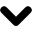

<html>
    
<head>
<meta http-equiv="Content-Type" content="text/html; charset=UTF-8">
<meta name="description" content="Mathematik für Informatiker: Algbraische Strukturen WS18/19">
<meta name="keywords" content="C. Lassueur">
<link rel="stylesheet" type="text/css" href="css/style-main.css">
<title>Seminar Gruppen und Darstellungen</title>
    
<script type="text/javascript" src="http://cdn.mathjax.org/mathjax/latest/MathJax.js?config=TeX-AMS-MML_HTMLorMML">
</script>    
</head>


<body>
<div class="border">


  
    
<!--Menu de navigation //---------------------------------------------------------------------------->
<!--
<br> <br> -->     

      
    
    
<div class="topnav">
  <nav>
  <a class="active" title="Home" href="/maths/index.html"></a>
  <a title="Research" href="/maths/index.html"><b>Research</b></a>
  <a title="Teaching" href="/maths/teaching/teaching.html"><b>Teaching</b></a>
  <a class="active" title="Seminars" href="/maths/seminars/seminars.html"><b>Seminars</b></a>
  <a title="Events" href="/maths/events/events.html"><b>Scientific Events</b></a>	
  <a title="Outreach" href="/maths/outreach/outreach.html"><b>Outreach</b></a>	
  </nav>
  </div><!--class="topnav"> -->
  <br> <br>   
  
  
  <!--Menu de navigation //---------------------------------------------------------------------------->


<!--Partie Principal sur deux colonnes //---------------------------------------------------------------------------->
<div id="centre">
<!--Colonne: Left //---------------------------------------------------------------------------->
<div id="maincol">


  <strong><div style="color:red">(!) THIS PAGE IS UNDER CONSTRUCTION (!)</div></strong>
  <br><br><br>

<!--OBERSEMINAR//---------------------------------------------------------------------------->
<!--Title part ---------------------------------------------------------------------------->
<hr>
 <div class="main"> 
  <h3> Oberseminar Representation Theory WS12/13 to SS24</h3>
 </div>
<hr>
<!--Title part // ---------------------------------------------------------------------------->
This Seminar is the regular reading seminar of the working group Representation Theory at the RPTU KL-LD. <br>
See also <a href="https://math.rptu.de/ags/agag/aktivitaeten/oberseminare/oberseminar-representation-theory-ag-malle">https://math.rptu.de/ags/agag/aktivitaeten/oberseminare/oberseminar-representation-theory-ag-malle</a> 


<div class="main">

  <div class="infoX">
    <ul>
      <li><strong>Summer Semester 2024:</strong> <em>Brauer Tree Algebras</em> [Orga.: Caroline Lassueur | <a href="https://agag-lassueur.math.rptu.de/~lassueur/en/teaching/OSSS24/">Programme</a>]</li>
      <li><strong>Winter Semester 2023/24:</strong> <em>Selected Topics in Group Theory</em> [Orga.: Gunter Malle | <a href="https://agag-malle.math.rptu.de/~malle/Lehre/OberSeminar/Sem2324.pdf">Programme</a>]</li>
      <li><strong>Summer Semester 2023:</strong> <em>Fusion Systems</em> [Orga.: Caroline Lassueur and Gunter Malle | <a href="https://agag-malle.math.rptu.de/~malle/Lehre/OberSeminar/Sem23.pdf">Programme</a>]</li>    
      <li><strong>Winter Semester 2022/23:</strong> <em>Quiver Representations and Quiver Varieties</em> [Orga.: Caroline Lassueur | <a href="https://www.mathematik.uni-kl.de/~lassueur/en/teaching/OSWS2223/">Programme</a>]</li>     
      <li><strong>Summer Semester 2022:</strong> <em>Representation Theory of Finite Reductive Groups</em> [Orga.: Gunter Malle | <a href="https://agag-malle.math.rptu.de/~malle/Lehre/OberSeminar/Sem22.pdf">Programme</a>]</li>  
      <li><strong>Winter Semester 2021/22:</strong> <em>No Seminar</em> </li>
      <li><strong>Summer Semester 2021:</strong> <em>Representation Theory of the Symmetric Group</em> [Orga.: Gunter Malle | <a href="https://www.mathematik.uni-kl.de/~lassueur/en/seminars/prog/Sem21.pdf">Programme</a>]</li>   
      <li><strong>Winter Semester 2020/21:</strong> <em>Equivalences of Blocks of Finite Groups</em> [Orga.: Caroline Lassueur | <a href="https://www.mathematik.uni-kl.de/~lassueur/en/teaching/OSWS2021/">Programme</a>]</li>   
      <li><strong>Summer Semester 2020:</strong> <em>CANCELLED</em> </li>
      <li><strong>Winter Semester 2019/20:</strong> <em>Block theory of finite reductive groups</em> [Orga.: Gunter Malle | <a href="https://www.mathematik.uni-kl.de/~lassueur/en/seminars/prog/Sem1920.pdf">Programme</a>]</li>
      <li><strong>Summer Semester 2019:</strong> <em>Topics in the block theory of finite groups</em> [Orga.: Niamh Farrell | <a href="https://www.mathematik.uni-kl.de/~lassueur/en/seminars/prog/Sem19.pdf">Programme</a>]</li>
      <li><strong>Winter Semester 2018/19:</strong> <em>Perverse equivalences</em> [Orga.: Olivier Dudas/Alessandro Paolini | <a href="https://www.mathematik.uni-kl.de/~lassueur/en/seminars/prog/Sem1819.pdf">Programme</a>]</li>
      <li><strong>Summer Semester 2018:</strong> <em>Cluster algebras</em> [Orga.: Patrick Wegener <a href="https://www.mathematik.uni-kl.de/agag/mitglieder/wissenschaftliche-mitarbeiter/dr-patrick-wegener/">Programme</a>]</li>
      <li><strong>Winter Semester 2017/18:</strong> <em>Lie superalgebras</em> [Orga.: Caroline Lassueur | <a href="https://www.mathematik.uni-kl.de/~lassueur/en/seminars/prog/Sem1718.pdf">Programme</a>]</li>
      <li><strong>Summer Semester 2017:</strong> <em>Representation theory – A homological algebra point of view</em> [Orga.: Benjamin Sambale | <a href="https://www.mathematik.uni-kl.de/~lassueur/en/seminars/prog/Sem17.pdf">Programme</a>]</li>
      <li><strong>Winter Semester 2016/17:</strong> <em>Quivers and reprerentations of algebras</em> [Orga.: Mika&euml;l Cavallin | <a href="https://www.mathematik.uni-kl.de/~lassueur/en/seminars/prog/Sem1617.pdf">Programme</a>]</li>
      <li><strong>Summer Semester 2016:</strong> <em>Buildings</em> [Orga.: Thomas Gobet | <a href="https://www.mathematik.uni-kl.de/~lassueur/en/seminars/prog/Sem16.pdf">Programme</a>]</li>
      <li><strong>Winter Semester 2015/16:</strong> <em>Complex Reflection Groups</em> [Orga.: Caroline Lassueur | <a href="https://www.mathematik.uni-kl.de/~lassueur/en/seminars/prog/Sem1516.pdf">Programme</a>]</li>
      <li><strong>Summer Semester 2015:</strong> <em>KLR-algebras</em> [Orga.: Gunter Malle | <a href="https://www.mathematik.uni-kl.de/~lassueur/en/seminars/prog/Sem15.pdf">Programme</a>]</li>
      <li><strong>Winter Semester 2014/15:</strong> <em>Der Auslander-Reiten-K&ouml;cher von Gruppenalgebren</em> [Orga.: Caroline Lassueur | <a href="https://www.mathematik.uni-kl.de/~lassueur/en/seminars/prog/Sem1415.pdf">Programme</a>]</li>
      <li><strong>Summer Semester 2014:</strong> <em>The Alperin weight conjecture</em> [Orga.: Gunter Malle and Britta Sp&auml;th | <a href="https://www.mathematik.uni-kl.de/~lassueur/en/seminars/prog/Sem14.pdf">Programme</a>]</li>
      <li><strong>Winter Semester 2013/14:</strong> <em>Diagram algebras</em> [Orga.: Susanne Danz and Jay Taylor  | <a href="https://www.mathematik.uni-kl.de/~lassueur/en/seminars/prog/Sem1314.pdf">Programme</a>]</li>
      <li><strong>Summer Semester 2013:</strong> <em>Darstellungen endlicher reduktiver Gruppen</em> [Orga.: Gunter Malle | <a href="https://www.mathematik.uni-kl.de/~lassueur/en/seminars/prog/Sem13.pdf">Programme</a>]</li>
      <li><strong>Winter Semester 2012/13:</strong> <em>Representations of finite reductive groups</em> [Orga.: Gunter Malle | <a href="https://www.mathematik.uni-kl.de/~lassueur/en/seminars/prog/Sem1213.pdf">Programme</a>]</li>
    </ul>    
  </div> 
</div>     
 
 <!--OBERSEMINAR //---------------------------------------------------------------------------->


<br><br>


<!--Title part ---------------------------------------------------------------------------->
<hr>
 <div class="main"> 
  <h3> Guest Seminar Groups and Representations SS13 to SS24</h3>
 </div>
<hr>
<!--Title part // ---------------------------------------------------------------------------->
See also <a href="https://math.rptu.de/ags/agag/aktivitaeten/oberseminare/seminar-gruppen-und-darstellungen">https://math.rptu.de/ags/agag/aktivitaeten/oberseminare/seminar-gruppen-und-darstellungen</a>

<br>
  <!--SS 24//---------------------------------------------------------------------------->
<div class="main"> 
 <div class="infoX">
     <h4> Summer Semester 2024&nbsp;&nbsp;<!--<a onclick="if(document.getElementById('WS2021').style.display=='none')document.getElementById('WS2021').style.display='block';else document.getElementById('WS2021').style.display='none'; return false;" href="agag/vortraege/semgrupdar/semgdss18/#"> </a>--> 
     </h4>
<hr>  
 <strong>Organisation:</strong> Caroline Lassueur, Gunter Malle<br><br>   
     
<div id="SS24"  class="infos1">
  <ul>
        <li><b>Thursday, 23rd of May 2024</b>:<br>
        17:00-17:50: <a href="https://webusers.imj-prg.fr/~emmanuel.letellier/">Emmanuel Letellier</a> [Universit&eacute; Paris-Diderot],<br> <strong>Ennola duality for decomposition of tensor products</strong> [<a onclick="if(document.getElementById('Let24').style.display=='none')document.getElementById('Let24').style.display='block';else document.getElementById('Let24').style.display='none'; return false;" href="agag/vortraege/semgrupdar/semgdss18/#">Abstract</a>]
        <div id="Let24" style="display: none;" class="infos0">
            In this talk I will explain how to use geometry to understand the decomposition of tensor products of unipotent characters of finite general linear groups and finite unitary groups. 
        </div>
        </li>
        <br>
        <li><b>Thursday, 6th of June 2024</b>:<br>
        17:00-17:50: <a href="https://hongyihuang328.github.io/index.html">Hong Yi Huang</a> [University of Bristol],<br> <strong>Permutations, bases and low rank groups</strong> [<a onclick="if(document.getElementById('Hong24').style.display=='none')document.getElementById('Hong24').style.display='block';else document.getElementById('Hong24').style.display='none'; return false;" href="agag/vortraege/semgrupdar/semgdss18/#">Abstract</a>]
        <div id="Hong24" style="display: none;" class="infos0">
            Let G = GL(V), where V is a finite-dimensional vector space, and recall that any element in G is uniquely determined by its action on a basis for V. In addition, any two pairs of linearly independent vectors can be mapped to each other by an element of G. These two basic linear algebra properties can be interpreted in the language of permutation groups, which leads us naturally to the definitions of base and rank of a permutation group. In this talk, I will present some of my recent results on bases for primitive permutation groups, and I will report on recent progress with C.H. Li and Y.Z. Zhu towards a classification of the rank three groups.
        </div>
        </li>
        <br>   
        <li><b>Thursday, 13th of June 2024</b>:<br>
        17:00-17:50: <a href="https://campusdirectory.ucsc.edu/cd_detail?uid=sakmille">Sam Miller</a> [University of California, Santa Cruz],<br> <strong>The classification of endotrivial complexes</strong> [<a onclick="if(document.getElementById('Mil24').style.display=='none')document.getElementById('Mil24').style.display='block';else document.getElementById('Mil24').style.display='none'; return false;" href="agag/vortraege/semgrupdar/semgdss18/#">Abstract</a>]
        <div id="Mil24" style="display: none;" class="infos0">
            Let \(G\) be a finite group and \(k\) a field with prime characteristic \(p\). Endotrivial chain complexes are the invertible elements of the bounded homotopy category of \(p\)-permutation modules, \(K^b({}_{kG}\mathbf{triv})\), a tensor-triangulated category which admits a quotient equivalent to \(D^b({}_{kG}\mathbf{mod})\) by recent work of Balmer and Gallauer. These chain complexes connect to many other well-studied topics in modular representation theory, including (relatively) endotrivial modules, endo-\(p\)-permutation modules, splendid Rickard equivalences, and the trivial source ring. Moreover, the group \(\mathcal{E}_k(G)\), which parameterizes indecomposable endotrivial complexes of \(kG\)-modules, can be endowed with rational \(p\)-biset functor structure. In this talk, I will highlight some of these connections and describe how we have obtained a complete classification of the endotrivial complexes.
        </div>
        </li>
        <br>
        <li>
        <b>Thurdsay, 4th of July 2024</b>:<br>
            17:00-17:50: <a href="https://webusers.imj-prg.fr/~tommaso.scognamiglio/">Tommaso Scognamiglio</a> [Universit&eacute; Paris Cit&eacute;],<br> <strong>Multiplicities for tensor product of representations of Gln(Fq)</strong> [<a onclick="if(document.getElementById('Sco24').style.display=='none')document.getElementById('Sco24').style.display='block';else document.getElementById('Sco24').style.display='none'; return false;" href="agag/vortraege/semgrupdar/semgdss18/#">Abstract</a>]
        <div id="Sco24" style="display: none;" class="infos0">
            The complex irreducible characters of Gln(Fq) have been known since the 50s, thank to Green's works, who gave a combinatorial description of them. Later, Lusztig and Srinivasan gave a geometric description of this character table, in terms of the Deligne-Lusztig induction.  However, not much is known in general about the decomposition of tensor products. I will present a result about the computation of multiplicities of semisimple split characters in tensor product of semisimple split characters of Gln(Fq).  I prove that these multiplicities are polynomial in q with non-negative integer coefficients and  obtain a criterion for their non-vanishing. I give moreover an interpretation of these polynomials in terms of the counting of the representations of star-shaped quivers, generalizing a previous result of Hausel, Letellier and Rodriguez-Villegas concerning multiplicities for tensor product of generic k-tuples of irreducible characers.
        </div>
        </li>    
  </ul>  
  <br>

  <hr> 
<strong>Meeting <a href="https://agag-lassueur.math.rptu.de/~lassueur/en/events/RepVillaDenis24/" target="_blank" rel="noreferrer">Representation Theory at the Villa Denis 2024</a></strong><br>
<em>Organisation</em>: Jun.-Prof. Dr. C. Lassueur, Prof. Dr. G. Malle, Dr. D. Rossi<br>
  <ul>
    <li><strong>Friday,&nbsp; 27th of September </strong>(Seminarraum OG) 	
      <ul class="list-normal">
        <li>10:00&nbsp;- 10:45,&nbsp;<strong>Olivier Dudas </strong>[Marseilles]:&nbsp;<strong>Row and column removal rules for finite unitary groups</strong></li>
        <li>11:20&nbsp;- 11:50,&nbsp;<strong>Sonia Petschick&nbsp;</strong>[Wuppertal]:&nbsp;<strong>Steps towards the inductive Galois-McKay conditions for type A</strong></li>
        <li>14:00 - 14:45,&nbsp;<strong>Edoardo Salati</strong> [TU Dresden]:&nbsp;<strong>Fusion systems and localities with a large \(p\)-subgroup</strong></li>
        <li>15:15&nbsp;- 16:00,&nbsp;<strong>Carolina Vallejo&nbsp;</strong>[Firenze]:&nbsp;<strong>Characters and Sylow abelianization</strong><br> 		&nbsp;</li>
      </ul>
    </li>
    <li><strong>Saturday,&nbsp; 28th of September&nbsp;</strong>(Seminarraum OG) 	
      <ul>
        <li>09:30 - 10:15,&nbsp;<strong>Lucas Ruhstorfer</strong> [Wuppertal]:&nbsp;<strong>The Alperin-McKay conjecture and blocks of maximal defect</strong></li>
        <li>10:45 - 11:15,&nbsp;<strong>Damiano Rossi</strong> [RPTU KL-LD]:&nbsp;<strong>An inductive version of Alperin's lower bound on Brauer characters</strong></li>
        <li>11:15 - 12:00,&nbsp;<strong>Arnaud Eteve</strong> [Bonn]:&nbsp;<strong>Tilting representations</strong></li>
      </ul>
    </li>
  </ul>
  <hr>
    
</div>
     
</div>
</div>    
    
    
 <!--SS 24//---------------------------------------------------------------------------->  


  <!--SS 23//---------------------------------------------------------------------------->
<div class="main">
 

    
 <div class="infoX">
     <h4> Winter Semester 2023/24&nbsp;&nbsp; <a onclick="if(document.getElementById('WS2324').style.display=='none')document.getElementById('WS2324').style.display='block';else document.getElementById('WS2324').style.display='none'; return false;"> </a>
     </h4>
<hr>  
 <strong>Organisation:</strong> Caroline Lassueur, Gunter Malle<br><br>   

 <div id="WS2324"  style="display: none;"  class="infos1">
     The Seminar of the winter semester 2023/24 is essentially replaced by the meeting<br> <b><a href="https://www.mathematik.uni-kl.de/~lassueur/en/events/RepVillaDenis23"><EM>Representation Theory at the Villa Denis 2023</EM></a></b>
    <br><br>
     
     <center>
     <embed type="text/html" src="https://www.mathematik.uni-kl.de/~lassueur/en/events/RepVillaDenis23" style="width:85%; height: 550px">
       </center>  
     
  </div>     
</div>     
</div>    
    
    
   <!--SS 23//---------------------------------------------------------------------------->
<div class="main">
 

    
 <div class="infoX">
     <h4> Summer Semester 2023&nbsp;&nbsp;<a onclick="if(document.getElementById('SS23').style.display=='none')document.getElementById('SS23').style.display='block';else document.getElementById('SS23').style.display='none'; return false;"> </a>
     </h4>
<hr>  
 <strong>Organisation:</strong> Caroline Lassueur, Gunter Malle<br><br>   
     
<div id="SS23"  style="display: none;"  class="infos1">
     
<ul>
 <li><b>Thursday, 27th of April 2023</b>:<br>
        17:00-17:50: <a href="https://scholar.google.de/citations?hl=de&user=7tn0uWQAAAAJ">Nadia Romero</a> [Universidad de Guanajuato/Amiens], <br><strong>A semisimplicity criterion for Green biset functors, with one application</strong> [<a onclick="if(document.getElementById('Rom23').style.display=='none')document.getElementById('Rom23').style.display='block';else document.getElementById('Rom23').style.display='none'; return false;" href="agag/vortraege/semgrupdar/semgdss18/#">Abstract</a>]
  <div id="Rom23" style="display: none;" class="infos0">
      We will prove a criterion giving conditions for the category of modules over a Green biset functor to be semisimple. The criterion is not hard to prove and it is useful for applications. As an example, we will see that for any fields \(k\) and \(F\) of characteristic \(0\) and any finite group \(T\), the category of modules over the shifted Green biset functor \((kR_F)_T\) of \(F\)-linear representations, is semisimple. This is joint work with Serge Bouc.
  </div></li>
  <br> 
  <li><b>Thursday, 4th of May 2023</b>:<br>
        17:00-17:50: <a href="https://orcid.org/0000-0002-2476-2304">Nicola Grittini</a> [RPTU Kaiserslautern-Landau],<br> <strong>Character Degrees and Charcters Values</strong> [<a onclick="if(document.getElementById('Gri23').style.display=='none')document.getElementById('Gri23').style.display='block';else document.getElementById('Gri23').style.display='none'; return false;" href="agag/vortraege/semgrupdar/semgdss18/#">Abstract</a>]
  <div id="Gri23" style="display: none;" class="infos0">
      Character theory of finite groups is traditionally focused on the study of character degrees, since they are relatively easy to control and they can provide much information on group structure. The rest of the character table, on the other hand, is often overlooked, with few exceptions, as when rational-valued and real-valued characters are considered. Even in this case, however, one may ask if the characters having values in the fields 
\(\mathbb{Q}\)
 and 
\(\mathbb{R}\)
 are actually special, or if the theorems involving these characters are just special cases of some more general properties.<br>
In recent years, a more systematic research on character fields of values has begun, possibly as a consequence of the study on the so-called Galois-McKay conjecture. We will see some of the problems and recent results concerning characters (fields of) values, and we will talk about why they can be interesting and how they interact with known results on rational and real-valued characters.
  </div></li>
  <br>
     <li><b>Thursday, 11th of May 2023</b>:<br>
        17:00-17:50: <a href="https://apturner.net/index">Andrew P. Turner</a> [University of Pennsylvania (UPENN)],<br> <strong>F-Theory and Singular Elliptic Fibrations</strong> [<a onclick="if(document.getElementById('GBies23').style.display=='none')document.getElementById('GBies23').style.display='block';else document.getElementById('GBies23').style.display='none'; return false;" href="agag/vortraege/semgrupdar/semgdss18/#">Abstract</a>]
  <div id="GBies23" style="display: none;" class="infos0">
      I will discuss a powerful geometric approach to string theory called F-theory, and its mathematical foundations. The primary objects of interest are singular elliptically fibered Calabi–Yau manifolds and their resolutions. I will introduce and discuss elliptic fibrations, as well as various associated quantities and techniques we are interested in, and will briefly allude to their physical significance. This talk is associated with an ongoing effort with Martin Bies and many others in the OSCAR community to create a system of tools within OSCAR for doing F-theory computations.
  </div></li>
  <br>  
  <li><b>Thursday, 25th of May 2023</b>:<br>
        17:00-17:50: <a href="http://www.lmpt.univ-tours.fr/~guilhot/">J&eacute;r&eacute;mie Guilhot</a> [Universit&eacute; de Tours], <br><strong>Recognising Kazhdan-Lusztig cells using representations</strong> [<a onclick="if(document.getElementById('Gui23').style.display=='none')document.getElementById('Gui23').style.display='block';else document.getElementById('Gui23').style.display='none'; return false;" href="agag/vortraege/semgrupdar/semgdss18/#">Abstract</a>]
  <div id="Gui23" style="display: none;" class="infos0">
      The aim of this talk is to show on various examples that one can recognize Kazhdan-Lusztig cells using representations of Hecke algebras. This idea is especially interesting in the case of affine Weyl groups where one can use representations that have a very nice combinatorial descriptions in terms of alcove paths. (Joint work with James Parkinson)
  </div></li>
  <br>
  <li><b>Thursday, 1st of June 2023</b>:<br>
        17:00-17:50: <a href="http://poulain.perso.math.cnrs.fr/">Lo&iuml;c Poulain d'Andecy</a> [Universit&eacute; de Reims Champagne Ardenne], <br><strong>KLR-type presentation of affine Hecke algebras of classical types</strong> [<a onclick="if(document.getElementById('LPdA23').style.display=='none')document.getElementById('LPdA23').style.display='block';else document.getElementById('LPdA23').style.display='none'; return false;" href="agag/vortraege/semgrupdar/semgdss18/#">Abstract</a>]
  <div id="LPdA23" style="display: none;" class="infos0">
      KLR algebras of type A have been a revolution in the representation theory of Hecke algebras of a type A flavour, thanks to the the Brundan-Kleshchev-Rouquier isomorphism relating them explicitly to the affine Hecke algebra of type A. KLR algebras of other types exist but are not related to affine Hecke algebras. In this talk I will present a generalisation of the KLR presentation for the affine Hecke algebra of type B/C (involving so-called orientifold KLR algebras) and I will discuss some applications. This talk is based on joint works with Salim Rostam and Ruari Walker.
  </div></li>
  <br>    
       <li><b>Thursday, 15th of June 2023</b>:<br>
        17:00-17:50: <a href="https://www.mathematik.tu-darmstadt.de/fb/personal/details/eda_kaja.en.jsp">Eda Kaja</a> [TU Darmstadt],<br> <strong>Classification of non-solvable groups whose power
graph is a cograph</strong> [<a onclick="if(document.getElementById('Kaj23').style.display=='none')document.getElementById('Kaj23').style.display='block';else document.getElementById('Kaj23').style.display='none'; return false;" href="agag/vortraege/semgrupdar/semgdss18/#">Abstract</a>]
  <div id="Kaj23" style="display: none;" class="infos0">
      A recent, active branch of research in algebraic graph theory studies constructions of graphs whose vertex set is a group \(G\) and whose edges reflect the structure of \(G\) in some way. An important example of such a graph is the power graph of a group \(G\). Its vertices are the elements of \(G\) and there is an edge between distinct vertices \(x\) and \(y\) of \(G\) if and only if \(x\) is a power of \(y\) or \(y\) is a power of \(x\). <br><br> We are interested in groups whose power graph is a cograph, i.e. it does not contain an induced subgraph isomorphic to a path of length four. We call such groups power-cograph groups. The problem of classifying power-cograph groups was posed by Cameron, Manna and Mehatari. They solved this problem for nilpotent groups and provided a classification in the case of finite simple groups relative to number theoretic problems. In this talk, I will present our classification of non-solvable power-cograph groups relative to the same number theoreticn problems. Additionally, our techniques allow us to precisely describe the structure of solvable power-cograph groups.
  </div></li>
  <br>   
     <li><b>Thursday, 22nd of June 2023</b>:<br>
        17:00-17:50: <a href="https://myasir-kizmaz.wixsite.com/my-homepage">Yasir Kizmaz</a> [Halle / Bilkent], <br><strong>A generalization of  Alperin Fusion theorem and its applications</strong> [<a onclick="if(document.getElementById('Kil23').style.display=='none')document.getElementById('Kil23').style.display='block';else document.getElementById('Kil23').style.display='none'; return false;" href="agag/vortraege/semgrupdar/semgdss18/#">Abstract</a>]
  <div id="Kil23" style="display: none;" class="infos0">
      Let $\F$ be a saturated fusion system on a finite \(p\)-group \(S\), and let \(P\) be a strongly $\F$-closed subgroup of \(S\). We define the concept ``$\F$-essential subgroups with respect to \(P\)" which are some proper subgroups of \(P\) satisfying some technical conditions, and show that an $\F$-isomorphism between subgroups of \(P\) can be factorised by some automorphisms of \(P\) and $\F$-essential subgroups with respect to \(P\). When \(P\) is taken to be equal to \(S\), the Alperin-Goldschmidt fusion theorem can be obtained as a special case. We also show that $P\unlhd \F$ if and only if there is no $\F$-essential subgroup with respect to \(P\). The following definition is made: a \(p\)-group \(P\) is <i>strongly resistant</i> in saturated fusion systems if $P\unlhd \F$ whenever there is an over \(p\)-group \(S\) and a saturated fusion system $\F$ on \(S\) such that \(P\) is strongly $\F$-closed. We shall discuss and show the existence of several classes of \(p\)-groups which are strongly resistant.
  </div></li>
  <br>
        <li><b>Thursday, 6th of July 2023</b>:<br>
        17:00-17:50: <a href="https://archive.maths.nuim.ie/staff/jmurray/">John Murray</a> [Maynooth University], <br><strong>Walking through the Alperin-McKay conjecture</strong> [<a onclick="if(document.getElementById('Mur23').style.display=='none')document.getElementById('Mur23').style.display='block';else document.getElementById('Mur23').style.display='none'; return false;" href="agag/vortraege/semgrupdar/semgdss18/#">Abstract</a>]
  <div id="Mur23" style="display: none;" class="infos0">
     The Alperin-McKay conjecture (AMC) asserts that the number of height zero characters in a block of a finite group can be determined locally. AMC has been known to hold for symmetric groups for a long time. For 2-blocks, there is even an explicit bijection proving AMC.<br><br>
      Seeking a certain local compatibility for all 2-blocks of fixed weight, I was led to formulate a very general conjecture about certain Littlewood-Richardson (L-R) coefficients. Each L-R coefficient gives the multiplicity of an irreducible character of a symmetric group in a character induced from a maximal Young subgroup.<br><br>
      Each L-R coefficient equals the number of triangular configurations called honeycombs, which have given edges. In this talk I will describe a very simple model for honeycombs, which I call source-sink world. Then using ideas of Burgisser-Ikenmeyer, I will outline a possible proof for my conjecture which uses the notion of admissible walks on honeycombs.
  </div></li>
  <br> 
 <li><b>Monday, 10th of July 2023</b>:<br>
        15:30-17:00: <a href="https://grazianvalentina.wordpress.com/">Valentina Grazian</a> [Milano-Bicocca], <br><strong>Fusion Systems: What is Known</strong> [<a onclick="if(document.getElementById('Gra23').style.display=='none')document.getElementById('Gra23').style.display='block';else document.getElementById('Gra23').style.display='none'; return false;" href="agag/vortraege/semgrupdar/semgdss18/#">Abstract</a>]
  <div id="Gra23" style="display: none;" class="infos0">
      Fusion systems made their first appearance in a 2006 paper by Puig and have since then been investigated by many researchers around the world. An important research direction involves the study of the behavior of exotic fusion systems (in particular at odd primes). 
In this talk we will present an overview of recent results concerning the classification of fusion systems on certain families of finite p-groups, highlighting the developments on the understanding of exotic fusion systems at odd primes.
  </div></li>
  <br>    
</ul>

</div>      
     
     
</div>
</div>    
<!--SS 23//---------------------------------------------------------------------------->      
    
<!--WS 22/23//---------------------------------------------------------------------------->
<div class="main">
 

    
 <div class="infoX">
     <h4> Winter Semester 2022/23&nbsp;&nbsp; <a onclick="if(document.getElementById('WS2223').style.display=='none')document.getElementById('WS2223').style.display='block';else document.getElementById('WS2223').style.display='none'; return false;"> </a>
     </h4>
<hr>  
 <strong>Organisation:</strong> Caroline Lassueur<br><br>    
     
<div id="WS2223" style="display: none;"  class="infos1">
     
<ul>
    <li><b>30th of Sept. - 1st of Oct. 2022</b>: Meeting <a href="https://www.mathematik.uni-kl.de/~lassueur/en/events/RepVillaDenis22/">Representation Theory at the Villa Denis 2022</a></li>  
    <br>
    <li><b>28th-29th of October 2022</b>: the <a href="https://www.mathematik.uni-kl.de/~lassueur/en/events/Darstellungstheorietage22/index.html">Darstellungstheorietage 2022</a> take place in Kaiserslautern</li><br> 
 <li><b>Thursday, 3rd November 2022</b>:<br>
        17:00-17:50: <a href="https://personalpages.manchester.ac.uk/staff/peter.symonds/">Peter Symonds</a> [University of Manchester], <strong>The module structure of a group action on a ring</strong> [<a onclick="if(document.getElementById('Sym22').style.display=='none')document.getElementById('Sym22').style.display='block';else document.getElementById('Sym22').style.display='none'; return false;" href="agag/vortraege/semgrupdar/semgdss18/#">Abstract</a>]
  <div id="Sym22" style="display: none;" class="infos0">
      Consider a finite group \(G\) acting on a graded Noetherian
\(k\)-algebra \(S\), for some field \(k\)&nbsp;of characteristic
\(p\); for example \(S\)&nbsp;might be a polynomial ring. Regard
\(S\)&nbsp;as a \(kG\)-module and consider the multiplicity of a
particular indecomposable module as a summand in each degree. We show
how this can be described in terms of homological algebra and how it
is linked to the geometry of the group action on the spectrum of
\(S\).
  </div></li>
  <br>
   <li><b>Thursday, 17th November 2022</b>:<br>
        17:00-17:50: <a href="https://tu-dresden.de/mn/math/algebra/das-institut/beschaeftigte/patrick-serwene">Patrick Serwene</a> [TU Dresden], <strong>Exotic and block-exotic fusion systems
 </strong> [<a onclick="if(document.getElementById('Ser22').style.display=='none')document.getElementById('Ser22').style.display='block';else document.getElementById('Ser22').style.display='none'; return false;" href="agag/vortraege/semgrupdar/semgdss18/#">Abstract</a>]
  <div id="ser22" style="display: none;" class="infos0">
      One of the main problems in the theory of fusion systems is the
conjecture whether a fusion system arises in the form of a finite
group if and only if it arises in the form of a \(p\)-block of a
finite group. After discussing some applications, we present some
advances tackling this conjecture. We introduce classes of fusion
systems for which we know it holds true and also discuss the status
for fusion systems of blocks of finite simple groups. We introduce a
category, generalising block fusion systems, which plays an important
role in our strategy to prove the conjecture.
  </div></li>
  <br>
  <li><b>Thursday, 24th November 2022</b>:<br>
        17:00-17:50: <a href="https://www.math.hhu.de/lehrstuehle-/-personen-/-ansprechpartner/innen/lehrstuehle-des-mathematischen-instituts/lehrstuhl-fuer-algebra-und-zahlentheorie/team/margherita-piccolo">Margherita Piccolo</a> [Heinrich Heine Universität Düsseldorf]], <strong>Representation growth of semisimple profinite groups</strong> [<a onclick="if(document.getElementById('Pic22').style.display=='none')document.getElementById('Pic22').style.display='block';else document.getElementById('Pic22').style.display='none'; return false;" href="agag/vortraege/semgrupdar/semgdss18/#">Abstract</a>]
  <div id="Pic22" style="display: none;" class="infos0">
      A profinite group is called semisimple if it is the Cartesian product
of finite simple groups. The representation growth of such groups can
be studied looking at the distribution of irreducible representations
by means of a zeta function, that is a Dirichlet generating function.
Under certain restrictions, the representation growth is polynomial
with a wide range of growth.<br />
Moreover, given a profinite group, it is generally a difficult
question to determine if it is, in fact, isomorphic to a profinite
completion of an abstract group. In this talk, I discuss a result of
Kassabov and Nikolov which provides a criteria for a semisimple
profinite group to be a profinite completion. Based on this, I report
on my work which is aimed at constructing semisimple profinite groups
with specified polynomial representation growth that<br />
arise as profinite completions of abstract groups (with the same
representation growth).
  </div></li>
  <br> 
      <li><b>Thursday, 5th January 2023</b>:<br>
        17:00-17:50: <a href="https://le.ac.uk/people/jason-semeraro">Jason Semeraro</a> [University of Leicester], <strong>An Alperin-type conjecture for \(p\)-local compact groups</strong> [<a onclick="if(document.getElementById('Sem23').style.display=='none')document.getElementById('Sem23').style.display='block';else document.getElementById('Sem23').style.display='none'; return false;" href="agag/vortraege/semgrupdar/semgdss18/#">Abstract</a>]
  <div id="Sem23" style="display: none;" class="infos0">
      If \(G\) is a finite group \(H\), the fusion system \(F\) of \(H\) is
a category whose objects are subgroups of a (fixed) Sylow
\(p\)-subgroup \(S\) and whose morphisms are \(H\) conjugation maps.
An \(F\)-weight s a defect zero character of an \(F\)-automorphism
group (taken up to conjugacy). Alperin's Weight Conjecture for the
principal block \(B\) of \(H\) asserts that the number \(w(F)\) of
\(F\)-weights is equal to the number of simple \(B\)-modules. If
\(H=G(q)\) is a finite group of Lie type, then generically this number
is \(|Irr(W)|\) where \(W\) is the Weyl group of G and is, in
particular, independent of \(q\). This motivates the study of
\(F\)-weights for the algebraic group \(G\) itself, where \(F\) is a
\(p\)-local compact group, a fusion system on a discrete \(p\)-toral
group \(S\). When \(F\) is connected - that is, when every
\(p\)-element is conjugate to a toral element - we conjecture that
\(w(F)=|Irr(W)\), and prove this holds (even for exotic examples)
whenever \(v_p(|W|) &lt; 2\) using the theory of blocks with cyclic
defect group. Very recent additional work with Kessar and Malle
establishes this conjecture in type \(A\), building on work of Oliver,
Alperin, Fong and others. If time permits, I will also discuss a
version of the Alperin-McKay conjecture in this context.
  </div></li>
  <br>     
     <li><b>Thursday, 12th January 2023</b>:<br>
        17:00-17:50: <a href="http://www.normalesup.org/~lacabanne/">Abel Lacabanne</a> [Universit&eacute; Clermont-Auvergne], <strong>Verma Howe duality and LKB representations of braid groups</strong> [<a onclick="if(document.getElementById('Lac23').style.display=='none')document.getElementById('Lac23').style.display='block';else document.getElementById('Lac23').style.display='none'; return false;" href="agag/vortraege/semgrupdar/semgdss18/#">Abstract</a>]
  <div id="Lac23" style="display: none;" class="infos0">
      One of the most classical form of Howe duality relates the commuting
action of two general linear Lie algebra on a polynomial ring. We will
first discuss this duality in the specific case of
\(\mathfrak{gl}_2\)&nbsp;and \(\mathfrak{gl}_n\). Specifically, we
will explain how the polynomial ring decomposes as a direct sum of
finite dimensional bimodules over \(\mathfrak{gl}_2 \times
\mathfrak{gl}_n\). Then, we extend this duality in a context where
Verma modules replace the finite dimensional representations of
\(\mathfrak{gl}_2\). Surprisingly the dual picture leaves the realm of
lowest and highest weight modules.<br />
As an application, we use a quantized version of this duality to study
the irreducibility of the Lawrence--Krammer--Bigelow representations
of braid groups.<br />
This is joint work with D. Tubbenhauer and P. Vaz.
  </div></li>
  <br> 
  <li><b>Thursday, 19th January 2023</b>:<br>
        17:00-17:50: <a href="https://people.epfl.ch/aluna.rizzoli/?lang=fr">Aluna Rizzoli</a> [EPFL], <strong>Isometry groups of norms</strong> [<a onclick="if(document.getElementById('Riz23').style.display=='none')document.getElementById('Riz23').style.display='block';else document.getElementById('Riz23').style.display='none'; return false;" href="agag/vortraege/semgrupdar/semgdss18/#">Abstract</a>]
  <div id="Riz23" style="display: none;" class="infos0">
      For a closed subgroup \(H\) of \(\mathrm{GL}_n(\mathbb{R})\), define
\(\hat{H}\) to be the largest subgroup of
\(\mathrm{GL}_n(\mathbb{R})\) that has the same orbits as \(H\) on
\(\mathbb{R}^n\). We prove that \(H\) is the full isometry group of a
norm on \(\mathbb{R}^n\) if and only if \(\pm I\in H\) and
\(H=\hat{H}\). Using this, we show that every compact Lie group with a
central involution can be realised as the isometry group of a norm. We
then study the relationship between \(H\) and \(\hat{H}\) for compact
\(H\leq \mathrm{GL}_n(\mathbb{R})\), showing that, with specified
exceptions, \(H\) and \(\hat{H}\) have the same connected component of
the identity. This is joint work with Emmanuel Breuillard, Martin
Liebeck and Assaf Naor.
  </div></li>
  <br>    
 <li><b>Thursday, 26th of January 2023</b>:<br>
        17:00-17:50: <a href="https://www.researchgate.net/profile/J-Miquel-Martinez">J. Miquel Martínez</a> [Universitat de València], <strong>Character correspondences
and counting conjectures</strong> [<a onclick="if(document.getElementById('Mar23').style.display=='none')document.getElementById('Mar23').style.display='block';else document.getElementById('Mar23').style.display='none'; return false;" href="agag/vortraege/semgrupdar/semgdss18/#">Abstract</a>]
  <div id="Mar23" style="display: none;" class="infos0">
      We discuss situations in which it is possible to find character
correspondences for the McKay and Alperin—McKay conjectures with good
properties. In particular, we explore how these correspondences can
interact with character degrees and decomposition numbers. This is
joint work with Damiano Rossi.
  </div></li>
  <br> 
 <li><b>Tuesday, 7th February 2023, Felix-Klein-Kolloquium</b>:<br>
        17:15-18:15: <a href="https://people.epfl.ch/kathryn.hess">Kathryn Hess Bellwald</a> [EPFL], <strong>Topological adventures in neuroscience</strong> [<a href="https://seafile.rlp.net/f/deb3e92b4d7b4f7899af/">Abstract</a>]</li>
  <br>     
</ul>

</div>     
     
</div>
</div>    
<!--WS 22/23//---------------------------------------------------------------------------->   
    
 <!--SS 22//---------------------------------------------------------------------------->
<div class="main">
 

    
 <div class="infoX">
     <h4> Summer Semester 2022&nbsp;&nbsp; <a onclick="if(document.getElementById('SS22').style.display=='none')document.getElementById('SS22').style.display='block';else document.getElementById('SS22').style.display='none'; return false;"> </a> 
     </h4>
<hr>  

<strong>Organisation:</strong> Caroline Lassueur, Lucas Ruhstorfer<br><br>

     
     
<div id="SS22" style="display: none;" class="infos1">
    
<ul>
    <li><b>Donnerstag, 28. April 2022</b>:<br>
        17:00-17:50: <a href="https://ekvv.uni-bielefeld.de/pers_publ/publ/PersonDetail.jsp?personId=150763565">Georges Neaime</a> [Universit&auml;t Bielefeld und Ruhr-Universit&auml;t Bochum], <strong>Towards the Linearity of Complex Braid Groups</strong> [<a onclick="if(document.getElementById('Nea22').style.display=='none')document.getElementById('Nea22').style.display='block';else document.getElementById('Nea22').style.display='none'; return false;" href="agag/vortraege/semgrupdar/semgdss18/#">Abstract</a>]
  <div id="Nea22" style="display: none;" class="infos0">
      Complex braid groups are a generalisation of Artin–Tits groups. They are attached to complex reflection groups, which are themselves a generalisation of finite Coxeter groups. It is an ongoing challenge to extend the theory of Artin–Tits groups to all complex braid groups. A part of this theory extension was established by Broué, Malle, and Rouquier in their seminal work. An important feature of spherical Artin groups is that they are linear groups, i.e., they admit a faithful linear representation of finite dimension. For the usual braid group, this property was shown to hold independently by Bigelow and Krammer. We seek to extend the theory of linearity to the context of complex braid groups, with a focus on the infinite families. Indeed, we will describe a definition of BMW and Brauer algebras, from which we can construct suitable linear representations and conjecture their faithfulness. We present a number of theorems and conjectures related to the structure of the aforementioned algebras, as well as properties of the relevant representations. We will finally propose a research programme for the sequel.
        </div></li>
        <br>
   <li><b>Donnerstag, 2. Juni 2022</b>:<br>
        17:00-17:50: <a href="https://denizyilmaz.academy/">Deniz Yilmaz</a> [LAMFA, Amiens], <strong>Functorial equivalence of blocks of finite groups</strong> [<a onclick="if(document.getElementById('Yil22').style.display=='none')document.getElementById('Yil22').style.display='block';else document.getElementById('Yil22').style.display='none'; return false;" href="agag/vortraege/semgrupdar/semgdss18/#">Abstract</a>]
  <div id="Yil22" style="display: none;" class="infos0">
      Let \(k\) be an algebraically closed field of positive characteristic \(p > 0\) and let \(F\) be an
algebraically closed field of characteristic \(0\). In this talk we first show that the category
of diagonal \(p\)-permutation functors over \(F\) is semisimple, and we give a parametrization
of its simple objects, together with a description of their evaluations.
Next, to any pair \((G, b)\) of a finite group \(G\) and a block idempotent \(b\) of \(kG\), we
associate a diagonal \(p\)-permutation functor and find its decomposition as a direct sum
of simple functors. This leads to a characterization of nilpotent blocks in terms of their
associated functors.
Finally, for such pairs \((G, b)\) of a finite group and a block idempotent, we introduce the
notion of functorial equivalence over F and we prove a corresponding finiteness theorem:
for a given finite p-group \(D\), there is only a finite number of pairs \((G, b)\), where \(G\) is a
finite group and \(b\) a block idempotent of \(kG\) with defect isomorphic to \(D\), up to functorial
equivalence over \(F\). We also give a sufficient condition for two pairs \((G, b)\) and \((H, c)\) to be
functorially equivalent over \(F\) in the situation of Brou&eacute;’s abelian defect group conjecture.
This is joint work with Serge Bouc
  </div> 
    </li>
    <br>
    <li><b>Donnerstag, 9. Juni 2022</b>:<br>
        17:00-17:50: <a href="https://docenti.unicatt.it/ppd2/it/docenti/86750/nicola-grittini/profilo">Nicola Grittini</a> [Università Cattolica del Sacro Cuore, Brescia] <strong>On characters with small cyclotomic fields of values</strong> [<a onclick="if(document.getElementById('Gri22').style.display=='none')document.getElementById('Gri22').style.display='block';else document.getElementById('Gri22').style.display='none'; return false;" href="agag/vortraege/semgrupdar/semgdss18/#">Abstract</a>]
  <div id="Gri22" style="display: none;" class="infos0">
      The investigation of the field of values of certain irreducible characters is one
of the main areas of interests in Character Theory of Finite Groups, especially
for what concerns rational-valued characters. In 2006, Navarro and Tiep proved
that, in a group of even order, there always exists a non-principal rational-valued
irreducible character of odd degree. More in general, Navarro and Tiep proved
that a similar property holds also for irreducible characters which are close to
be rational-valued. In fact, they proved that, for a finite group, given a prime
number p, it is always possible to find a non-principal irreducible character
having values in some p-cyclotomic extension of the field of rational numbers
and with degree coprime with p, provided that either 2 or p divide the order of
the group.<br>
Another, apparently unrelated problem in Group Theory concerns the study
of the primes dividing the order of a Sylow normalizer. In 2002 Isaacs and
Navarro proved that, for solvable groups, these primes can be deduced from the
character table, while in 2016 Guralnick, Navarro and Tiep classified the groups
with a Sylow normalizer of odd order.
In this talk, we will see how a variant of the first problem is related to the
second, and how sometimes the character table can provide some information
on the primes dividing the order of a Sylow normalizer, even for non-solvable
groups. We will also discuss some of the techniques we used to prove the results we mentioned, particularly one involving isomorphisms between character
triples.<br>
(Joint work with M. A. Pellegrini)
  </div> 
    </li>
    <br>
     <li><b>Donnerstag, 23. Juni 2022</b>:<br>
        17:00-17:50: <a href="">Norman MacGregor</a> [University of Birmingham] <strong>Tame blocks of finite groups</strong> [<a onclick="if(document.getElementById('McG22').style.display=='none')document.getElementById('McG22').style.display='block';else document.getElementById('McG22').style.display='none'; return false;" href="agag/vortraege/semgrupdar/semgdss18/#">Abstract</a>]
  <div id="McG22" style="display: none;" class="infos0">
      The respresentation type of an algebra is finite, tame, or wild, and a block algebra is tame precisely if its defect groups are dihedral, semidihedral, or quaternion. Several families of tame algebras were classified by Karin Erdmann, and we shall consider which occur as blocks of nite groups. We shall give some background of the relevant represenation theory, before outlining how Erdmann's list can be rened for blocks via a reduction using the Classification of Finite Simple Groups.
  </div> 
    </li> 
    <br>
     <li><b>Dienstag, 19. Juli 2022</b>:<br>
        16:00-16:40: <a href="https://faculty.niu.edu/math_geline/">Michael Geline</a> [Northern Illinois University] <strong>Schur indices are controlled by local subgroups</strong> [<a onclick="if(document.getElementById('Gel22').style.display=='none')document.getElementById('Gel22').style.display='block';else document.getElementById('Gel22').style.display='none'; return false;" href="agag/vortraege/semgrupdar/semgdss18/#">Abstract</a>]
  <div id="Gel22" style="display: none;" class="infos0">
      Modular representation theory seeks to understand how global properties
of finite groups are determined by local subgroups. The global properties
of greatest interest concern the number and dimensions of irreducible representations. While these quantities seem to resist a satisfying local characterization, we shall show how rationality properties of representations do not.
  </div> <br>
       16:50-17:30: <a href="https://sites.google.com/view/emilynortonmath/home">Emily Norton</a> [University of Kent] <strong>Chunks of the decomposition matrix of a finite classical group that we can understand</strong> [<a onclick="if(document.getElementById('Nor22').style.display=='none')document.getElementById('Nor22').style.display='block';else document.getElementById('nor22').style.display='none'; return false;" href="agag/vortraege/semgrupdar/semgdss18/#">Abstract</a>]
  <div id="Nor22" style="display: none;" class="infos0">
         n open problem in the ℓ-modular representation theory of finite reductive groups G(q) is to calculate certain numerical invariants called decomposition numbers, conveniently assembled into a matrix called the decomposition
matrix. This is expected to depend only on the order d of q mod ℓ. For groups
of types B and C, the rectangular matrices recording multiplicities of simple modules in Specht modules of level 2 cyclotomic Hecke algebras appear as submatrices of the decomposition matrix. In the "baby case" that d is suficiently large, Leclerc-Miyachi and Brundan-Stroppel showed that these
Hecke algebra matrices are given by the nicest Kazhdan-Lusztig polynomials
in existence, Kazhdan-Lusztig polynomials of Grassmannians. In this talk,
I will discuss extending that result to certain square submatrices of the decomposition matrix of a finite reductive group of type B or C. This work in progress with Olivier Dudas should provide the first glimpse of chunks of the decomposition matrix in blocks of arbitrary defect (beyond the chunks given by Hecke algebras).
        </div>
    </li>   
</ul>
     </div>   
    </div>     
  <!--WS 21/22//---------------------------------------------------------------------------->       
    
 <!--WS 21/22//---------------------------------------------------------------------------->
<div class="main">
 

    
 <div class="infoX">
     <h4> Winter Semester 2021/22&nbsp;&nbsp; <a onclick="if(document.getElementById('WS2021').style.display=='none')document.getElementById('WS2021').style.display='block';else document.getElementById('WS2122').style.display='none'; return false;"> </a>
     </h4>
<hr>  

<strong>Organisation:</strong> Caroline Lassueur (RWTH Aachen), Lucas Ruhstorfer (TU Kaiserslautern)<br><br>
     Dieses Semester findet das Seminar als virtuelles Seminar zusammen mit dem <a HREF="https://www.campus.rwth-aachen.de/rwth/all/unit.asp?gguid=0xBD43C8C10685D51196700000F4B4937D">Lehrstuhl f&uuml;r Algebra und Zahlentheorie der RWTH Aachen University</a> statt.
<br>
Zur Anmeldung als externer Gast verwenden Sie bitte diesen <a href="https://docs.google.com/forms/d/e/1FAIpQLScg9CKw0kwNRQpmxldgJQf7NLXtq8d8UPwO3wCl1FtGwp135g/viewform">Link</a>.<br>    
     
     
<div id="SS2021" style="display: none;" class="infos1">
    
<ul>
    <li><b>Donnerstag, 13. Januar 2022</b>:<br>
        16:15-17:00: <a href="https://njacon.perso.math.cnrs.fr/">Nicolas Jacon</a>  [Université de Reims Champagne-Ardenne], <strong>On the computation of the Mullineux involution for symmetric groups and Hecke algebras</strong> [<a onclick="if(document.getElementById('Jac22').style.display=='none')document.getElementById('Jac22').style.display='block';else document.getElementById('Jac22').style.display='none'; return false;" href="agag/vortraege/semgrupdar/semgdss18/#">Abstract</a>]
  <div id="Jac22" style="display: none;" class="infos0">
      The Mullineux problem is a classical topic in the  modular representation theory of the symmetric group. The aim is to understand how the sign representation twist the irreducible representations of the symmetric group in positive characteristic.  In this talk, we  give a new approach for this problem by using the representations of affine Hecke algebras and Ariki-Koike algebras.


  </div> <br>
        17:05-17:50 <a href="https://www.city.ac.uk/about/people/research-students/william-murphy">William Murphy</a> [City, University of London], <strong>The first Hochschild cohomology of blocks of finite group algebras</strong> [<a onclick="if(document.getElementById('Mur22').style.display=='none')document.getElementById('Mur22').style.display='block';else document.getElementById('Mur22').style.display='none'; return false;" href="agag/vortraege/semgrupdar/semgdss18/#">Abstract</a>]
  <div id="Mur22" style="display: none;" class="infos0">
      The Hochschild cohomology (the HH*) of finite dimensional algebras is a useful tool to help with classifying blocks of group algebras. For example, if k is a field and A, B are two symmetric k-algebras, then a stable equivalence of Morita type between A and B induces an isomorphism between the HH^n of A and B in degree n greater than zero. What is more, the graded ring HH* forms a Gerstenhaber algebra, and in particular the HH^1 forms a Lie algebra over k, whose structure is also preserved under stable equivalence of Morita type. <br>
      In this talk I will discuss a range of topics and questions regarding the HH^1 of blocks of finite group algebras. These will include results on blocks with a cyclic or low rank elementary abelian defect group, the use of a powerful computational result to calculate the dimensions of the HH^1 of blocks, calculation of the Lie algebra structure of the HH^1 of blocks of the Mathieu groups, and results on the HH^1 of twisted group algebras.
  </div> 
        <br>
    </li>
    <li><b>Donnerstag, 20. Januar 2022</b>:<br>
        17:15-18:00: <a>Georges Neaime</a> [Universität Bielefeld], <strong>FINDET NICHT STATT / CANCELLED</strong>
	<br>
    </li>
   <li><b>Donnerstag, 27. Januar 2022</b>:<br>
        16:15-17:00: <a href="https://www.uv.es/cavaro3/">Carolina Vallejo</a> [Universidad Aut&oacute;noma de Madrid], <strong>Groups with a 2-generated Sylow 2-subgroup</strong> [<a onclick="if(document.getElementById('Val22').style.display=='none')document.getElementById('Val22').style.display='block';else document.getElementById('Val22').style.display='none'; return false;" href="agag/vortraege/semgrupdar/semgdss18/#">Abstract</a>]
  <div id="Val22" style="display: none;" class="infos0">
      We present a characterization of the groups possessing a 2-generated Sylow 2-subgroup in terms of their character theory. This talk is based on joint works with G. Navarro, N. Rizo and A. A. Schaeffer Fry.
  </div> <br>
        17:05-17:50 <a href="https://marchiclaudio.wordpress.com/">Claudio Marchi</a> [University of Manchester], <strong>Picard groups for blocks with normal defect group </strong> [<a onclick="if(document.getElementById('Mar22').style.display=='none')document.getElementById('Mar22').style.display='block';else document.getElementById('Mar22').style.display='none'; return false;" href="agag/vortraege/semgrupdar/semgdss18/#">Abstract</a>]
  <div id="Mar22" style="display: none;" class="infos0">
      Picard groups of algebras have extensively been studied in the past, but just recently people started looking at Picard groups of blocks of finite groups. These revealed themselves to be useful tools, for example for dealing with Donovan conjecture, but they’re also interesting in their own right, since they have the structure of a finite group. In this talk we will give an introduction to Picard groups and Picent of blocks, and then present joint work with Michael Livesey on blocks with normal defect groups, providing evidence to a conjecture on basic Morita equivalences. 
  </div> 
        <br>
    </li>  
<li><b>Donnerstag, 10. Februar 2022</b>:<br>
        17:15-18:00: <a href="https://julianmath168.wordpress.com/">Julian Brough</a> [Bergische Universität Wuppertal], <strong>Characters of normalisers of \(d\)-split Levi subgroups in \(Sp_{2n}(q)\) </strong> [<a onclick="if(document.getElementById('Bro22').style.display=='none')document.getElementById('Bro22').style.display='block';else document.getElementById('Bro22').style.display='none'; return false;" href="agag/vortraege/semgrupdar/semgdss18/#">Abstract</a>]
  <div id="Bro22" style="display: none;" class="infos0">
      In a current on-going programme to prove some of the local global counting conjectures a key ingredient requires an understanding of characters in the normalisers of \(d\)-split Levi subgroups. In this talk I will present recent results in this direction for the symplectic groups.
  </div>
    </li>
</ul>
     </div>   
    </div>     
  <!--WS 21/22//---------------------------------------------------------------------------->   
    
    
 <!--SS 2021//---------------------------------------------------------------------------->
<div class="main">
 

    
 <div class="infoX">
     <h4> Summer Semester 2021&nbsp;&nbsp; <a onclick="if(document.getElementById('SS21').style.display=='none')document.getElementById('SS21').style.display='block';else document.getElementById('SS21').style.display='none'; return false;" href="agag/vortraege/semgrupdar/semgdss18/#"> </a>
     </h4>
<hr>  

<strong>Organisation:</strong> Caroline Lassueur, Lucas Ruhstorfer<br><br>
Dieses Semester findet das Seminar als virtuelles Seminar zusammen mit der Arbeitsgruppe Algebra und Zahlentheorie der Bergischen Universität Wuppertal statt.
<br>
Zur Anmeldung als externer Gast verwenden Sie bitte diesen <a href="https://docs.google.com/forms/d/e/1FAIpQLScg9CKw0kwNRQpmxldgJQf7NLXtq8d8UPwO3wCl1FtGwp135g/viewform">Link</a>.<br>    
     
     
<div id="SS2021" style="display: none;" class="infos1">
<ul>     
    <li><b>Dienstag, 27. April 2021</b>:<br>
        16:00-16:40: <a href="https://eugeniomaths.wordpress.com/">Eugenio Giannelli</a> [Universit&agrave; degli Studi di Firenze], <strong>On a conjecture of Malle and Navarro</strong> [<a onclick="if(document.getElementById('Gia21').style.display=='none')document.getElementById('Gia21').style.display='block';else document.getElementById('Gia21').style.display='none'; return false;" href="agag/vortraege/semgrupdar/semgdss18/#">Abstract</a>]
  <div id="Gia21" style="display: none;" class="infos0">
      Recently I have been interested in studying the restriction of irreducible characters of finite groups to Sylow subgroups. In this talk I will discuss a nice application of this topic to a conjecture proposed by Malle and Navarro in 2012. This talk is based on joint work with Stacey Law, Jason Long and Carolina Vallejo. 
  </div> <br>
        17:00-17:40: <a href="https://noeliarizo.wixsite.com/misitio">Noelia Rizo</a> [Universidad del País Vasco], <strong>On the trivial intersection block conjecture</strong> [<a onclick="if(document.getElementById('Riz21').style.display=='none')document.getElementById('Riz21').style.display='block';else document.getElementById('Riz21').style.display='none'; return false;" href="agag/vortraege/semgrupdar/semgdss18/#">Abstract</a>]
  <div id="Riz21" style="display: none;" class="infos0">
      In 1997 G. Navarro and W. Willems asked when the irreducible complex characters in a Brauer \(p\)-block \(B_p\) coincide with those of a \(q\)-block \(B_q\). This situation was later characterized
      for  principal blocks by work of C. Bessenrodt, G. Navarro, J.B. Olsson and P.H. Tiep. <br> In 2008, the opposite situation, the <i> trivial intersection</i> case, that is, the case where 
      \[{\rm Irr}({B_p(G)}) \cap {\rm Irr}({B_q(G)})=1\]
      for \(p \ne q\), was first studied by  C. Bessenrodt and J. Zhang, where \(B_p(G)\) denotes the principal \(p\)-block of \(G\). In particular, they prove that $G$ is nilpotent if and only if \({\rm Irr}({B_p(G)}) \cap {\rm Irr}({B_q(G)})=1\) for all \(p \ne q\). This result inspired Y. Liu, W. Willems, H. Xiong and J. Zhang who, in a recent work, have conjectured (and reduced to almost simple groups) that if \({\rm Irr}({B_p(G)}) \cap {\rm Irr}({B_q(G)})=1\), for \(p\neq q\), then then there is a Sylow \(p\)-subgroup \(P\) of \(G\) and a Sylow \(q\)-subgroup \(Q\) of \(G\) such that \([P,Q]=1\). 
  </div> 
        <br>
    </li>
      <li>
      <b>Dienstag, 11. Mai 2021</b> <em>(Organisiert von Damiano Rossi, Wuppertal)</em>:<br>
       16:00-16:40: Virgilius-Aurelian Minuta [Babes-Bolyai University, Cluj-Napoca], <strong>An overview of Kn&ouml;rr lattices for finite groups</strong> [<a onclick="if(document.getElementById('Min21').style.display=='none')document.getElementById('Min21').style.display='block';else document.getElementById('Min21').style.display='none'; return false;" href="agag/vortraege/semgrupdar/semgdss18/#">Abstract</a>]
  <div id="Min21" style="display: none;" class="infos0">
      A modern approach to the local-global conjectures in the representation theory of finite groups consists in reducing them to some stronger statements about simple groups. Such reduction theorems can be obtained by utilizing the language of character triples and of the various relations between them. In particular, recent results of Britta Späth utilize the relations ≥, ≥ c and ≥ b between character triples.<br> We have introduced a categorical version of these relations, between so-called module triples and we have proved that they are consequences of a special type of group graded Morita equivalences, group graded Rickard equivalences and group graded derived equivalences, respectively. Furthermore, again motivated by the reduction theorems, we show that our relations between module triples are compatible with wreath products.
        </div>
      <br>
       16:50-17:30: <a href="https://www.minet.uni-jena.de/algebra/personen/brenner/brenner.html">Sofia Brenner</a> [Friedrich-Schiller Universität Jena], <strong>On Socles of Centers of Group Algebras</strong> [<a onclick="if(document.getElementById('Bre21').style.display=='none')document.getElementById('Bre21').style.display='block';else document.getElementById('Bre21').style.display='none'; return false;" href="agag/vortraege/semgrupdar/semgdss18/#">Abstract</a>]
  <div id="Bre21" style="display: none;" class="infos0">
      In this talk, we consider the socle of the center of an algebra and address the question under which conditions it is an ideal in this algebra. To this end, we mainly focus on group algebras and discuss some approaches for \(p\)-groups in greater detail.
        </div>
    </li> 
    
 <li>
      <b>Dienstag, 25. Mai 2021</b> <em>(Organisiert von Damiano Rossi, Wuppertal)</em>:<br>
       16:00-16:40: <a href="https://seis.bristol.ac.uk/~sh15083/index.html">Scott Harper</a> [University of Bristol], <strong>The spread of a finite group</strong> [<a onclick="if(document.getElementById('Har21').style.display=='none')document.getElementById('Har21').style.display='block';else document.getElementById('Har21').style.display='none'; return false;" href="agag/vortraege/semgrupdar/semgdss18/#">Abstract</a>]
  <div id="Har21" style="display: none;" class="infos0">
      After a brief review of what Knörr lattices are and the role they play in some of the local to global conjectures of block theory, we shall give constructions of some of the known positive height examples for $p$-groups as well as a recent and elementary proof of why they cannot occur as sources of irreducible lattices (at least when the defect group of the relevant block is TI). 
        </div>
      <br>
       16:50-17:30: <a href="https://math.ubbcluj.ro/~marcus/">Justin Lynd</a> [University of Louisiana, Lafayette], <strong>Punctured groups for exotic fusion systems</strong> [<a onclick="if(document.getElementById('Lyn21').style.display=='none')document.getElementById('Lyn21').style.display='block';else document.getElementById('Lyn21').style.display='none'; return false;" href="agag/vortraege/semgrupdar/semgdss18/#">Abstract</a>]
  <div id="Lyn21" style="display: none;" class="infos0">
     The fusion system of a finite group G at a prime p is a category whose objects are the subgroups of a fixed Sylow p-subgroup S, and where the morphisms are the conjugation homomorphisms induced by the elements of G. The notion of a saturated fusion system is abstracted from this standard example and gives rise to exotic examples not realizable by a group in the above fashion. Given an exotic fusion system, one might want to ask: how close is it to being realizable? One way to approach this question is by trying to construct transporter categories, or localities, associated with a given exotic system. A punctured group for a fusion system is a transporter system with objects the full set of nonidentity subgroups of the underlying p-group, and is perhaps the closest approximation to a group one can hope for in the case of an exotic fusion system. I plan to give background on these topics, look at some examples such as the Benson-Solomon exotic fusion systems at the prime 2, and mention an application of the existence of a punctured group to the topology of classifying spaces. This is joint work with Ellen Henke and Assaf Libman.
        </div>
    </li>
    
    <li>
      <b>Dienstag, 8. Juni 2021</b>:<br>
       16:00-16:40: <a href="http://www.math.niu.edu/faculty/index.php?cmd=detail&id=472">Michael Geline</a> [Northern Illinois University, DeKalb], <strong>An overview of Kn&ouml;rr lattices for finite groups</strong> [<a onclick="if(document.getElementById('Gel21').style.display=='none')document.getElementById('Gel21').style.display='block';else document.getElementById('Gel21').style.display='none'; return false;" href="agag/vortraege/semgrupdar/semgdss18/#">Abstract</a>]
  <div id="Gel21" style="display: none;" class="infos0">
      After a brief review of what Knörr lattices are and the role they play in some of the local to global conjectures of block theory, we shall give constructions of some of the known positive height examples for $p$-groups as well as a recent and elementary proof of why they cannot occur as sources of irreducible lattices (at least when the defect group of the relevant block is TI). 
        </div>
      <br>
       16:50-17:30: <a href="https://math.ubbcluj.ro/~marcus/">Andrei Marcus</a> [Babes-Bolyai University, Cluj-Napoca], <strong>Extending basic Morita equivalences</strong> [<a onclick="if(document.getElementById('Mar21').style.display=='none')document.getElementById('Mar21').style.display='block';else document.getElementById('Mar21').style.display='none'; return false;" href="agag/vortraege/semgrupdar/semgdss18/#">Abstract</a>]
  <div id="Mar21" style="display: none;" class="infos0">
      Let \((K, \mathcal{O}, k)\) be a \(p\)-modular system where \(k\) is algebraically closed, let \(b\) be a \(G\)-invariant block of the normal subgroup \(H\) of a finite group \(G\), having defect pointed group \(Q_\delta\) in \(H\) and \(P_\gamma\) in \(G\), and consider the block extension \(b\mathcal{O}G\). One may attach to \(b\) an extended local category \(E(b,H,G)\), a group extension \(L\) of \(Z(Q)\) by \(N_G(Q_\delta)/C_H(Q)\) having \(P\) as a Sylow \(p\)-subgroup, and a cohomology class \([α] ∈ H^2(N_G(Q_\delta)/QC_H(Q), k^\times)\). We prove that these objects are invariant under the \(G/H\)-graded basic Morita equivalences. Our methods lead us to alternative and unified proofs of the results of K&uuml;lshammer and Puig (1990), Puig and Zhou (2012) on extensions of nilpotent blocks, and of Zhou (2016) on \(p'\)-extensions of inertial blocks. <br>This is a joint work with T. Coconet ̧ and C.-C. Todea.
        </div>
    </li>
   <li>
      <b>Dienstag, 29. Juni 2021</b> <em>(Organisiert von Max Horn)</em>:<br>
       16:00-17:00: <a href="https://www.math.uni-sb.de/ag/weitze/CMS/index.php/de/personen/thevis">Andrea Thevis</a> [Universität des Saarlandes], <strong>Square-tiled surfaces, normal covers, and cylinder decompositions</strong> [<a onclick="if(document.getElementById('The21').style.display=='none')document.getElementById('The21').style.display='block';else document.getElementById('The21').style.display='none'; return false;" href="agag/vortraege/semgrupdar/semgdss18/#">Abstract</a>]
    <div id="The21" style="display: none;" class="infos0">
      A translation surface is obtained by taking finitely many polygons in the Euclidean plane and gluing them along their edges by translations. If we restrict to gluing unit squares, we obtain a square-tiled surface, also known as origami. These surfaces can be decomposed into cylinders. In this talk, I will present two projects using cylinder decompositions of square-tiled surfaces as a main tool. Many interesting properties of square-tiled surfaces are closely related to finite index subgroups of SL(2, Z) called Veech groups. In the first project, we study when Veech groups are far from being a congruence group.<br>
        The second project deals with geminal surfaces. These surfaces consist in each direction out of two cylinders of equal height and circumference. Apisa and Wright conjecture that geminal surfaces are cyclic covers of the (2 × 2)-torus. We discuss first steps towards proving this conjecture. This is joint work with Johannes Flake. 
        </div>  
    </li>
    <li>
        <b>Do. 15. Juli / Fr. 16. Juli 2021</b>:  <a href="https://www.mathematik.uni-kl.de/~lassueur/en/events/RepVillaDenis21/">Meeting Representation Theory at the Villa Denis 2021.</a> 
    </li>
</ul>
</div> 
</div>  
    

<!--SS 2021//---------------------------------------------------------------------------->


    
 <!--WS 2020-21//---------------------------------------------------------------------------->
<div class="main">
 

    
 <div class="infoX">
     <h4> Winter Semester 2020/21&nbsp;&nbsp; <a onclick="if(document.getElementById('WS2021').style.display=='none')document.getElementById('WS2021').style.display='block';else document.getElementById('WS2021').style.display='none'; return false;"> </a>
     </h4>
<hr>  

<strong>Organisatoren:</strong> Caroline Lassueur, Lucas Ruhstorfer<br>
     
<div id="WS2021" style="display: none;" class="infos1">
<ul>     
    <li><b>Donnerstag, 14. Januar 2021</b>:<br>
        16:00-16:45: <a href="https://www.maths.lancs.ac.uk/~mazza/">Nadia Mazza</a> [Lancaster University], <strong>Endotrivial modules for finite groups of Lie type</strong> [<a onclick="if(document.getElementById('Maz21').style.display=='none')document.getElementById('Maz21').style.display='block';else document.getElementById('Maz21').style.display='none'; return false;" href="agag/vortraege/semgrupdar/semgdss18/#">Abstract</a>]
  <div id="Maz21" style="display: none;" class="infos0">In this talk, we will present an update on the classification of endotrivial modules for finite groups of Lie type using a range of techniques. We will see that in all but a few exceptions (as to be expected with these groups), the group of endotrivial modules is cyclic, generated by the stable isomorphism class of the syzygy of the trivial module.
  </div> <br>
        17:00-17:45: <a href="https://www.researchgate.net/scientific-contributions/Matthew-Gelvin-2045862386">Matthew Gelvin</a>, <strong>Dade groups and relative syzygies for finite groups</strong> [<a onclick="if(document.getElementById('Gel21').style.display=='none')document.getElementById('Gel21').style.display='block';else document.getElementById('Gel21').style.display='none'; return false;" href="agag/vortraege/semgrupdar/semgdss18/#">Abstract</a>]
  <div id="Gel21" style="display: none;" class="infos0">If \(S\) if a finite \(p\)-group and \(k\) a field of characteristic \(p\), Dade observed that there is a natural group structure on certain equivalence classes of endo-permuation \(kS\)-modules, now called the Dade group \(D(S)\).  This fact is heavily dependent on the assumption that \(S$\) is a \(p\)-group; naively attempting the same construction for an arbitrary finite group \(G\) and the class of endo-permutation \(kG\)-modules fails to yield a well-defined group operation.  Lassueur was able to define a Dade group \(D(G)\) by considering only those endo-\(p\)-permutation \(kG\)-modules--called \emph{strongly capped}--with the additional structural constraint that \(End(M)\) should have a single Sylow-vertex component, which is isomorphic to the trivial module \(k\).
This talk will detail joint work with Ergün Yalçin, which begins with a slight generalization of Lassueur's ideas by considering those endo-\(p\)-permutation \(kG\)-modules \(M\) such that \(End(M)\) may contain multiple copies of \(k\) but no other non-trivial Sylow-vertex components.  This yields a second option for the definition of the Dade group \(D(G)\), but fortunately one that turns out to be isomorphic to Lassueur's.  The motivation for this generalization stems from the desire to define tensor induction between different Dade groups; I will describe how our approach allows for tensor induction in some additional cases but still fails to form a general theory.
The talk will conclude with a discussion of the subgroup of relative syzygies, which is possible thanks to the observation that if \(X\) is a finite \(G\)-set with no Sylow-fixed-points then the corresponding relative syzygy module \(\Delta(X)\) is an endo-\(p\)-permutation module that satisfies our extra component hypothesis.  We will briefly describe how the corresponding subgroup \(D^\Omega(G)\leq D(G)\) can be computed in terms of certain dimension functions of \(G\).
  </div> 
        <br>
    </li>
    <li><b>Donnerstag, 28. Januar 2021</b>:<br>
        16:00-16:45: <a href="https://dornsife.usc.edu/jay-taylor/">Jay Taylor</a> [University of Southern California], <strong>Rationality Properties of Kawanaka Characters</strong> [<a onclick="if(document.getElementById('Tay21').style.display=='none')document.getElementById('Tay21').style.display='block';else document.getElementById('Tay21').style.display='none'; return false;" href="agag/vortraege/semgrupdar/semgdss18/#">Abstract</a>]
  <div id="Tay21" style="display: none;" class="infos0">Let \(G\) be a finite group and let \(K\) be a subfield of the complex numbers. For a (complex, not necessarily irreducible) character \(\chi\) of \(G\) one can ask the following questions:
<ul>
    <li>What is the character field \(K(\chi) = K(\chi(g) \mid g \in G)\)?</li>
    <li>Is \(\chi\) realisable over \(K(\chi)\)?</li>
    </ul>
The latter question plays an important role in the determination of the Schur indices of irreducible characters. Building on prior work of Ohmori and Geck we will consider the case where \(G\) is a finite reductive group defined over a finite field of characteristic \(p\) and \(\chi\) is a Kawanaka character (obtained by extending and inducing an irreducible character of a \(p\)-subgroup of \(G\)).
  </div>
        <br>
        17:00-17:45: <a href="https://sites.msudenver.edu/aschaef6/">Mandi A. Schaeffer Fry</a> [MSU Denver], <strong>The Inductive McKay--Navarro Conditions in Type C for the Prime 2</strong> [<a onclick="if(document.getElementById('MSF21').style.display=='none')document.getElementById('MSF21').style.display='block';else document.getElementById('MSF21').style.display='none'; return false;" href="agag/vortraege/semgrupdar/semgdss18/#">Abstract</a>]
  <div id="MSF21" style="display: none;" class="infos0">The McKay conjecture is one of the major conjectures in the realm of the local-global philosophy in character theory and posits a bijection between the set of irreducible characters of a group with \(p’\)-degree and the corresponding set in the normalizer of a Sylow \(p\)-subgroup.  Navarro’s refinement suggests that the values of the characters should also be related, proposing that the bijection further commutes with certain Galois automorphisms.  Recently, Navarro—Sp&auml;th—Vallejo have reduced the McKay—Navarro conjecture to certain “inductive” conditions on finite simple groups.  In this talk, I’ll discuss joint work with L. Ruhstorfer, in which we complete the proof of these inductive conditions in the case \(p=2\) for the symplectic groups.
  </div>
        <br>
    </li>
    <li><b>Donnerstag, 4. Februar 2021</b>:<br>
        16:00-16:45: <a href="https://cesaregardito.wordpress.com/">Cesare Ardito</a> [City, University of London], <strong>Classification of blocks and open conjectures</strong> [<a onclick="if(document.getElementById('Ard21').style.display=='none')document.getElementById('Ard21').style.display='block';else document.getElementById('Ard21').style.display='none'; return false;" href="agag/vortraege/semgrupdar/semgdss18/#">Abstract</a>]
  <div id="Ard21" style="display: none;" class="infos0">Donovan’s conjecture predicts that given a p-group D there are only finitely many Morita equivalence classes of blocks of group algebras with defect group D. While the conjecture is still open for a generic p-group D, it has been proven in many special cases. A harder question is the one to actually classify Morita equivalence classes in a given situation, i.e. to have a complete list of blocks that can occur determined up to Morita equivalence. In this talk, I will introduce the topic, give the relevant definitions and then roughly describe the process of classifying blocks, with a focus on the methodology and the tools normally needed to obtain such a result. Then I will focus on some applications of having such a list, mentioning some (perhaps surprising) difficulties that can arise in verifying certain classic modular representation theory conjectures, even when a complete list of blocks is given.
  </div>
        <br>
        17:00-17:45: <a href="https://researchcentres.city.ac.uk/representation-theory/patrick-serwene">Patrick Serwene</a> [City, University of London], <strong>Exotic and block-exotic fusion systems</strong> [<a onclick="if(document.getElementById('Ser21').style.display=='none')document.getElementById('Ser21').style.display='block';else document.getElementById('Ser21').style.display='none'; return false;" href="agag/vortraege/semgrupdar/semgdss18/#">Abstract</a>]
  <div id="Ser21" style="display: none;" class="infos0">One of the main problems in the theory of fusion systems is the question whether a fusion system arises in the form of a finite group if and only if it arises in the form of a p-block of a finite group. There is a conjecture saying that a fusion system is induced by a group if and only if it is induced by a block. We present reduction theorems for this problem reducing it to blocks of quasisimple groups in certain cases. One of these reductions settles the conjecture for the family of Parker–Semeraro fusion systems. We discuss ongoing work concerning our strategy to prove the conjecture for some groups of Lie type.
  </div>
        <br>
    </li>
</ul>
</div> 
</div>     

<!--WS 2020/21//---------------------------------------------------------------------------->	   
    
 <!--SS 2020//---------------------------------------------------------------------------->
<div class="main">
 

    
 <div class="infoX">
     <h4> Summer Semester 2020&nbsp;&nbsp;<a onclick="if(document.getElementById('SS20').style.display=='none')document.getElementById('SS20').style.display='block';else document.getElementById('SS20').style.display='none'; return false;" href="agag/vortraege/semgrupdar/semgdss18/#"> </a> 
     </h4>
<hr>  
The seminar was essentially replaced by the  Meeting <a href="https://www.mathematik.uni-kl.de/~lassueur/en/events/RepVillaDenis20/">Representation Theory at the Villa Denis 2020</a> ersetzt.<br>
<!--<strong>Organisatoren:</strong> Caroline Lassueur, Gunter Malle<br>-->
     
<div id="SS20" style="display: none;" class="infos1">
<ul>     
<li><strong>Donnerstag, 17. September 2020</strong>: <br>
        <a href="https://www.darstellungstheorie.uni-wuppertal.de/de/prof-dr-britta-spaeth.html">Britta Sp&auml;th</a> [Bergische Universität Wuppertal], <strong>Extensions of cuspidal characters</strong>  <br>
        <a href="https://www.mathematik.uni-kl.de/agag/personen/mitglieder/">Laura Voggesberger</a> [TU Kaiserslautern], <strong>Nilpotent pieces in Lie algebras of algebraic groups</strong>  <br>
        <a href="https://www.mathematik.uni-kl.de/agag/personen/mitglieder/#c4585">Emil Rotilio</a> [TU Kaiserslautern], <strong>A method to complete generic character tables of groups of Lie type with focus on \(SL_4(q)\) and \(Spin_8^+(q)\)</strong>  <br>
        <a href="http://www2.math.uni-wuppertal.de/org/Algebra/members.html">Damiano Rossi</a> [Bergische Universität Wuppertal], <strong>Character Triple Conjecture for p-solvable groups</strong>  <br>
    </li><br>
<li><strong>Freitag, 18. September 2020</strong>: <br> 
        <a href="https://www.mathematik.uni-kl.de/~lassueur/en/">Caroline Lassueur</a> [TU Kaiserslautern], <strong>On the characters of trivial source modules</strong><br>
        <a href="https://www.mathematik.uni-kl.de/agag/personen/mitglieder/">Birte Johansson</a> [TU Kaiserslautern], <strong>On the inductive Galois-McKay condition in defining characteristic \(p=2\)</strong>  <br>
		<a href="http://guests.mpim-bonn.mpg.de/enorton/">Emily Norton</a> [TU Kaiserslautern], <strong>Some decomposition matrices of classical groups</strong><br>
		<a href="https://www.mathematik.uni-kl.de/~malle">Gunter Malle</a> [TU Kaiserslautern], <strong>Brauer's height zero conjecture for principal blocks</strong><br>
	</li>
<br/>
<br/>		
</ul>
</div> 
</div>     

<!--SS 2020//---------------------------------------------------------------------------->	   
	
<!--WS 2019-20//---------------------------------------------------------------------------->
<div class="main">
 

    
 <div class="infoX">
     <h4> Winter Semester 2019/20&nbsp;&nbsp;<a onclick="if(document.getElementById('WS1920').style.display=='none')document.getElementById('WS1920').style.display='block';else document.getElementById('WS1920').style.display='none'; return false;" href="agag/vortraege/semgrupdar/semgdss18/#"> </a> 
     </h4>
<hr>
<strong>Organisatoren:</strong> Niamh Farrell, Caroline Lassueur,  Lucas Ruhstorfer<br>
     
<div id="WS1920" style="display: none;" class="infos1">
<ul>  
	<li><strong>Dienstag, 15. Oktober 2019</strong>: <a href="https://www.mathematik.uni-kl.de/~lassueur/en/events/RepVillaDenis19/index.html"><strong>A Day of Representation Theory at the Villa Denis 2019</strong></a><br>
		<a href="https://webusers.imj-prg.fr/~olivier.dudas/">Olivier Dudas</a> [Paris VII], <strong>Unitriangular shape of decomposition matrices of unipotent blocks</strong>  <br>
		<a href="http://guests.mpim-bonn.mpg.de/enorton/">Emily Norton</a> [Guest @ TU Kaiserslautern], <strong>Harish-Chandra series of unipotent representations of finite unitary groups</strong>  <br>
		<a href="https://noeliarizo.wixsite.com/misitio">Noelia Rizo Carrión</a> [Università degli Studi di Firenze], <strong> Galois action on the principal block</strong>  <br>
        <a href="http://www2.math.uni-wuppertal.de/~ruhstorf/publikationen.html">Lucas Ruhstorfer</a> [TU Kaiserslautern], <strong>Jordan decomposition for the Alperin-McKay conjecture</strong>  <br>
	</li>
<br/>
	
	
	
	   <li><strong>Donnerstag, 31. Oktober 2018</strong>: <a href="https://sites.google.com/site/kmallahikarai/home">Julian Brough</a> [Bergische Universität Wuppertal]<br />
Titel: <strong> A criterion for the inductive Alperin weight condition </strong>  [<a onclick="if(document.getElementById('Bro19').style.display=='none')document.getElementById('Bro19').style.display='block';else document.getElementById('Bro19').style.display='none'; return false;" href="agag/vortraege/semgrupdar/semgdss18/#">Abstract</a>]
  <div id="Bro19" style="display: none;" class="infos0">Many of the local-global conjectures have been reduced to so called inductive conditions on simple groups. Moreover Späth has been successful in verifying the inductive McKay condition for most families of simple groups by considering an alternative criterion on a larger group with some additional information about the corresponding Clifford theory. In this talk I will discuss a joint work with Späth, in which we have provided an analogous criterion for the Alperin weight conjecture.
  </div>
</li>
<br/> 
	
	
 <li><strong>Donnerstag, 7. November 2019</strong>: <a href="http://paul.wedrich.at/">Paul Wedrich</a> [MPI Bonn]<br />
Titel: <strong> Quivers for SL(2) tilting modules</strong>  [<a onclick="if(document.getElementById('Wed19').style.display=='none')document.getElementById('Wed19').style.display='block';else document.getElementById('Wed19').style.display='none'; return false;" href="agag/vortraege/semgrupdar/semgdss18/#">Abstract</a>]
  <div id="Wed19" style="display: none;" class="infos0">I will explain how diagrammatic algebra can be used to give an explicit generators-and-relations presentation of all morphisms between indecomposable tilting modules for SL(2) over an algebraically closed field of positive characteristic. The result takes the form of a path algebra of an infinite, fractal-like quiver with relations, which can be considered as the (semi-infinite) Ringel dual of SL(2). Joint work with Daniel Tubbenhauer.
  </div>
</li>
<br/> 	
	
	
 <li><strong>Donnerstag, 14. November 2019</strong>: <a href="https://jenseberhardt.com/">Jens Eberhardt</a> [MPI Bonn]<br />
Titel: <strong>Motives in Geometric Representation Theory</strong>  [<a onclick="if(document.getElementById('Ebe19').style.display=='none')document.getElementById('Ebe19').style.display='block';else document.getElementById('Ebe19').style.display='none'; return false;" href="agag/vortraege/semgrupdar/semgdss18/#">Abstract</a>]
  <div id="Ebe19" style="display: none;" class="infos0">Categories of representations arising in Lie theory can often be modeled geometrically in terms of constructible sheaves on certain spaces, as for example on the flag variety, affine Grassmannian or the nilpotent cone. Recent developments in the theory of motives allow to consider so called "motivic sheaves", an algebro-geometric analogue of constructible sheaves. In this talk we will explain how one can practically work with motivic sheaves (using Grothendieck's six functor formalism) and apply them in representation theory. We will show how motivic sheaves can be used to model Category O associated to a reductive complex Lie algebra, modular Category O associated to a split reductive group over a finite field and categories of representations of convolution algebras, such as the graded affine Hecke algebra and KLR-algebras. We also will explain how more "exotic" versions of motivic sheaves provide exciting new opportunities in geometric representation theory.
  </div>
</li>
<br/>	
	
	
	
 <li><strong>Donnerstag, 28. November 2019</strong>: <a href="http://math.univ-lille1.fr/~dellambr/">Ivo Dell'Ambrogio</a> [Université de Lille, Frankreich]<br />
Titel: <strong>The Green correspondence in algebra and topology</strong>  [<a onclick="if(document.getElementById('Del19').style.display=='none')document.getElementById('Del19').style.display='block';else document.getElementById('Del19').style.display='none'; return false;" href="agag/vortraege/semgrupdar/semgdss18/#">Abstract</a>]
  <div id="Del19" style="display: none;" class="infos0">The Green correspondence, a classic and basic result of modular representation theory, describes a bijection between indecomposable H-modules and indecomposable G-modules having the same vertex Q, provided H is a subgroup of G containing the normaliser of Q. Already in the 70's, Green himself noticed that the correspondence can be strengthened to an equivalence of categories between certain additive sub-quotients of G-modules and H-modules. I will explain how the latter Green equivalence can be proved and clarified in the general setting of "Mackey 2-functors", and how one can make sense of it also in situations where the Krull-Schmidt theorem does not hold (where indecomposable objects are not helpful). For example, and perhaps most notably, there follows a version of the Green equivalence for equivariant stable homotopy theory. This is joint work with Paul Balmer.
  </div>
</li>
<br/>	
	
	
 <li><strong>Donnerstag, 20. Dezember 2019</strong>: <a href="https://homepages.abdn.ac.uk/ellen.henke/pages/">Ellen Henke</a> [University of Aberdeen, Schottland]<br />
Titel: <strong> A generalization of a theorem by Camina—Herzog</strong>  [<a onclick="if(document.getElementById('Hen19').style.display=='none')document.getElementById('Hen19').style.display='block';else document.getElementById('Hen19').style.display='none'; return false;" href="agag/vortraege/semgrupdar/semgdss18/#">Abstract</a>]
  <div id="Hen19" style="display: none;" class="infos0">An old theorem of Camina—Herzog states that a finite group has abelian Sylow 2-subgroups if the centralizer of any 2-element is of odd index. After an introduction to the theory of fusion systems, I will present a generalization of this theorem to fusion systems together with a very short and elementary proof. As a corollary, one obtains a theorem about 2-blocks of finite groups which was conjectured by Külshammer, Sambale and Tiep.
  </div>
</li>
<br/>	
	
<li><strong>Donnerstag, 9. Januar 2020</strong>: <a href="https://www.math.tu-dresden.de/~hmuehle/">Henri Mühle</a> [TU Dresden]<br />
Titel: <strong> TALK CANCELLED</strong>  [<a onclick="if(document.getElementById('Muh20').style.display=='none')document.getElementById('Muh20').style.display='block';else document.getElementById('Muh20').style.display='none'; return false;" href="agag/vortraege/semgrupdar/semgdss18/#">Abstract</a>]
  <div id="Muh20" style="display: none;" class="infos0">
  </div>
</li>
<br/>	
		
	
<li><strong>Donnerstag, 23. Januar 2020</strong>: <a href="https://guests.mpim-bonn.mpg.de/jennyaugust/">Jenny August</a> [MPI Bonn]<br />
Titel: <strong>Contraction Algebras in the Homological Minimal Model Programme</strong>  [<a onclick="if(document.getElementById('Aug20').style.display=='none')document.getElementById('Aug20').style.display='block';else document.getElementById('Aug20').style.display='none'; return false;" href="agag/vortraege/semgrupdar/semgdss18/#">Abstract</a>]
  <div id="Aug20" style="display: none;" class="infos0">
	 In this talk, I will give an introduction to a class of symmetric, finite dimensional algebras, known as contraction algebras, which are one of the main tools used in the Homological Minimal Model Programme. This program aims to use noncommutative algebra to answer questions in algebraic geometry and my goal for the talk is to not only convince you that the contraction algebras are very useful for this purpose, but to also show you that they have some very interesting algebraic properties. 
  </div>
</li>
<br/>
	
<li><strong>Donnerstag, 30. Januar 2020</strong>: <a href="https://www.idpoisson.fr/beck/">Vincent Beck</a> [Université de Tours, Université d'Orléans, Frankreich]<br />
Titel: <strong>Cohomological computations for reflection groups and their braid groups and application to the determination of the finite subgroups of B/[P,P]</strong>  [<a onclick="if(document.getElementById('Bec20').style.display=='none')document.getElementById('Bec20').style.display='block';else document.getElementById('Bec20').style.display='none'; return false;" href="agag/vortraege/semgrupdar/semgdss18/#">Abstract</a>]
  <div id="Bec20" style="display: none;" class="infos0">
	  In 2015, Guaschi, Goncalves and Ocampos started to study the finite subgroups of B_n/[P_n,P_n] where B_n is the standard braid group on $n$ strands and $P_n$ the pure braid group. They exhibited cyclic and abelian subgroup and even a non abelian subgroup of B_7/[P_7,P_7]. Their constructions were generalized to complex reflection groups by Marin. Finally, using cohomological methods, in a joint work with Marin, we were able to give a complete description of the finite subgroups of $B/[P,P]$ for every complex reflection groups $W$ (where $B$ is the braid group of $W$ and $P$ its pure braid group). I will present these results and how the cohomological description of the exact sequence 1-> P/[P,P] -> B/[P,P] -> W -> 1 has led to our classification of finite subgroups of B/[P,P].
  </div>
</li>
<br/>	
	
<li><strong>Donnerstag, 6. Februar 2020</strong>: <a href="http://www.math.rwth-aachen.de/people_de.html">Maike Gruchot</a> [RWTH Aachen]<br />
Titel: <strong>On a relative version of complete reducibility</strong>  [<a onclick="if(document.getElementById('Gru20').style.display=='none')document.getElementById('Gru20').style.display='block';else document.getElementById('Gru20').style.display='none'; return false;" href="agag/vortraege/semgrupdar/semgdss18/#">Abstract</a>]
  <div id="Gru20" style="display: none;" class="infos0">
	  n this talk we discuss a relative version of Serre’s notion of complete reducibility introduced by Bate, Martin, Röhrle and Rudolf. In the first part of the talk I introduce Serre’s notion of complete reducibility. In the second part, we introduce the relative version and discuss a characterization of relative G-complete reducibility which directly generalizes equivalent formulations of complete reducibility in representation theory. In the last part of the talk, we consider the case of a subgroup of G which normalizes the identity component K^0 of K, it turns that such a subgroup is relatively G-completely reducible with respect to K if and only if its image in the automorphism group of K^0 is completely reducible. This allows us to generalize a number of fundamental results from the absolute to the relative setting.
  </div>
</li>
<br/>		
		
	
		

</ul>
</div> 
</div>     

<!--WS2019/20//---------------------------------------------------------------------------->	
	
	
	
<!--SS 2018//---------------------------------------------------------------------------->
<div class="main">
 

    
 <div class="infoX">
     <h4> Summer Semester 2018&nbsp;&nbsp;<a onclick="if(document.getElementById('SS18').style.display=='none')document.getElementById('SS18').style.display='block';else document.getElementById('SS18').style.display='none'; return false;" href="agag/vortraege/semgrupdar/semgdss18/#"> </a> 
     </h4>
<hr>
<strong>Organisatoren:</strong> Niamh Farrell, Alessandro Paolini<br>
     
<div id="SS18" style="display: none;" class="infos1">
    <ul>  
 
    <li><strong>Donnerstag, 3. Mai 2018</strong>: <a href="https://sites.google.com/site/kmallahikarai/home">Keivan Mallahi-Karai</a> [Jacobs University, Bremen]<br />
Titel: <strong> Kirillov's orbit method and the polynomiality of the essential dimension of p-groups</strong>  [<a onclick="if(document.getElementById('Kei18').style.display=='none')document.getElementById('Kei18').style.display='block';else document.getElementById('Kei18').style.display='none'; return false;" href="agag/vortraege/semgrupdar/semgdss18/#">Abstract</a>]
  <div id="Kei18" style="display: none;" class="infos0">The faithful dimension of a finite group G is defined to be the smallest dimension 
of a faithful complex representation of G. Aside from its intrinsic interest, the 
problem of determining the faithful dimension of finite groups is intimately related 
to the notion of essential dimension, introduced by Buhler and Reichstein. <br />The problem of determining the faithful dimension of families of p-groups arising 
from F_p-points of a nilpotent algebraic group defined over the field of 
rational numbers has been studied in some special cases, e.g. the Heisenberg and the 
full upper-triangular unipotent group. <br /> In this paper, we will use Kirillov’s orbit method to address this problem for a 
large family of groups. It will be shown that this function is always a piecewise 
polynomial function along certain “number-theoretically defined” sets, while, in 
some specific cases, it is given by a uniform polynomial in p. <br /> This talk is based on a joint work with Mohammad Bardestani and Hadi Salmasian.
  </div>
</li>
<br/> 
 
 

  <li><strong>Montag, 7. Mai 2018</strong>: <a href="http://www.maths.usyd.edu.au/u/thomasg/">Thomas Gobet</a> [University of Sydney]<br/>
Titel: <strong> Dual and classical generators of Artin groups of spherical type</strong>  [<a onclick="if(document.getElementById('Gob18').style.display=='none')document.getElementById('Gob18').style.display='block';else document.getElementById('Gob18').style.display='none'; return false;" href="agag/vortraege/semgrupdar/semgdss18/#">Abstract</a>]
  <div id="Gob18" style="display: none;" class="infos0">The n-strand braid group has two Garside structures, a classical and a
dual one, leading to different solutions to the word problem in the group. The
corresponding Garside monoids are the classical braid monoid and the Birman-Ko-Lee
braid monoid. These monoids exist for any Artin group of spherical type (i.e.,
attached to a finite Coxeter group). <br /> The aim of the talk is to explain how to express the generators of an Artin group of
spherical type coming from the dual braid monoid (and more generally the simples,
that is, the divisors of the Garside element of the dual monoid) in terms of the
classical generators: we give a closed formula to express a simple of the dual braid
monoid, using combinatorial objects called c-sortable elements (introduced by
Reading). It gives a word of shortest possible length in the classical generators
representing a simple element of the dual braid monoid. It has as an immediate
consequence that the simples of the dual braid monoids are Mikado braids.
</div>
</li>
<br/> 
        
  
 
<li>
        <strong>Donnerstag, 17. Mai 2018</strong>: Zhicheng Feng [TU Kaiserslautern]<br />
Titel: <strong> On the inductive blockwise Alperin weight condition for special linear and unitary groups</strong> 
    [<a onclick="if(document.getElementById('Fen18').style.display=='none')document.getElementById('Fen18').style.display='block';else document.getElementById('Fen18').style.display='none'; return false;" href="agag/vortraege/semgrupdar/semgdss18/#">Abstract</a>]
  <div id="Fen18" style="display: none;" class="infos0">The inductive blockwise Alperin weight condition is a system of conditions whose verification for all non-abelian finite simple groups would imply the blockwise Alperin weight conjecture. This talk will explain how one can obtain the weights of a special linear or unitary group X from the general linear or unitary group and verify the inductive blockwise Alperin weight condition for any unipotent block of X when the prime does not divide the order of Z(X).
  </div>
</li>
<br/>
  
  
    
    <li><strong>Donnerstag, 7. Juni 2018</strong>: two seminars. <br />
      <strong>16.30-17.30</strong>: <a href="http://ipektuvay.droppages.com">&#304;pek Tuvay</a> [Mimar Sinan Fine Arts University, Istanbul]<br />
Titel: <strong> Brauer indecomposability of Scott modules for the quadratic group Qd(p)</strong>  [<a onclick="if(document.getElementById('Tuv18').style.display=='none')document.getElementById('Tuv18').style.display='block';else document.getElementById('Tuv18').style.display='none'; return false;" href="agag/vortraege/semgrupdar/semgdss18/#">Abstract</a>]
  <div id="Tuv18" style="display: none;" class="infos0">Brauer indecomposability of Scott modules is important for constructing 
stable equivalences of Morita type 
between the principal blocks of two different finite groups. For an 
algebraically closed field k of prime 
characteristic p, we compute the Scott kG-module with vertex P when F is a 
constrained fusion system 
on P and G is Park’s group for F. In the case F is a fusion system of the 
quadratic group on a Sylow 
p-subgroup P of Qd(p) and G is Park’s group for F, we prove that the Scott 
kG-module with vertex P 
is Brauer indecomposable. In this talk these results will be presented. 
This is a joint work with Shigeo 
Koshitani.  
  </div><br />
      <strong>17.30-18.30</strong>: <a href="http://www.mi.fu-berlin.de/users/ersoy/">Kivan&ccedil; Ersoy</a> [Freie Universit&auml;t Berlin]<br />
Titel: <strong> Groups with certain conditions on fixed points of automorphisms</strong>  [<a onclick="if(document.getElementById('Ers18').style.display=='none')document.getElementById('Ers18').style.display='block';else document.getElementById('Ers18').style.display='none'; return false;" href="agag/vortraege/semgrupdar/semgdss18/#">Abstract</a>]
  <div id="Ers18" style="display: none;" class="infos0">
Thompson proved that a finite group with a fixed point free automorphism 
of prime order is nilpotent. Later Higman, Kreknin and Kostrikin proved 
that in this case the nilpotency class is indeed bounded by the order of 
the automorphism. On the other hand, Brauer and Fowler proved that order of 
a finite simple group is indeed bounded in terms of the order of 
centralizers of involutions. Since then, there has been a lot of questions 
of the following type: Let G be a group with a particular type of 
centralizer (of fixed point set). How does the structure of the centralizer
affect the structure of the group? In the first part of the talk we will 
give a survey of results obtained by imposing certain conditions on the 
centralizers. In the second part we will prove new results about finite and 
locally finite groups and their automorphisms.
  </div>     
</li>
<br />
  

   <li><strong>Donnerstag, 14. Juni 2018</strong>: <a href="http://math.ubbcluj.ro/~simion/">Iulian Simion</a> [Babe&#351;-Bolyai University, Cluj-Napoca]<br />
Titel: <strong> Minimal realizations of finite groups of isometries</strong>  [<a onclick="if(document.getElementById('Sim18').style.display=='none')document.getElementById('Sim18').style.display='block';else document.getElementById('Sim18').style.display='none'; return false;" href="agag/vortraege/semgrupdar/semgdss18/#">Abstract</a>]
  <div id="Sim18" style="display: none;" class="infos0">
Let G be a finite group. The minimal dimension in which G can be realized by isometries is known to be the dimension of a minimal faithful real representation. The minimal number of points which realize the group as their full group of isometries appears to be less well-understood. We discuss some known bounds (this is work in progress).
  </div>
</li>  
<br />  
  

   <li><strong>Donnerstag, 21. Juni 2018</strong>: <a href="http://www.bristol.ac.uk/maths/people/alex-j-malcolm/index.html">Alex Malcolm</a> [Heilbronn Institute for Mathematics, Bristol]<br />
Titel: <strong> Strong reality in finite simple groups: on products of classes and characters</strong>  [<a onclick="if(document.getElementById('Mal18').style.display=='none')document.getElementById('Mal18').style.display='block';else document.getElementById('Mal18').style.display='none'; return false;" href="agag/vortraege/semgrupdar/semgdss18/#">Abstract</a>]
  <div id="Mal18" style="display: none;" class="infos0">
In a finite simple group, the strongly real elements are those that are conjugate to their inverse by an involution. A related notion exists in the ordinary representation theory of the group, where we call an irreducible character orthogonal if it is not only real-valued, but has an underlying real representation.
It was recently shown that any element of a finite simple group decomposes as a product of two strongly real elements, motivating the question as to whether an analogous result holds for irreducible characters? I.e. does every irreducible representation appear in the tensor product of two real reps? We will discuss the methods used in answering both of these questions, as they range from the analysis of finite simple group sub-structure, to a classical problem of computing Kronecker coefficients in the symmetric group.
  </div>    
</li>
<br />  
     
<li><strong>Donnerstag, 28. Juni 2018</strong>: Kein Seminar. Norddeutsches Gruppentheorie-Kolloquium in  Braunschweig, 29.06.18-30.06.18.<br />
</li>
<br />
      

<li><strong>Donnerstag, 5. Juli 2018</strong>: Kein Seminar. Computational Lie Theory in Stuttgart, 05.07.18-06.07.18.<br />
</li>
<br />      

     <li><strong>Donnerstag, 12. Juli 2018</strong>: <a href="https://madeleinewhybrow.wordpress.com">Madeleine Whybrow</a> [Imperial College London, UK]<br />
Titel: <strong> Constructing Majorana representations</strong>  [<a onclick="if(document.getElementById('Why18').style.display=='none')document.getElementById('Why18').style.display='block';else document.getElementById('Why18').style.display='none'; return false;" href="agag/vortraege/semgrupdar/semgdss18/#">Abstract</a>]
  <div id="Why18" style="display: none;" class="infos0">
Majorana theory is an axiomatic framework to study objects related to the Monster group and its 196884 dimensional representation, the Griess algebra. The objects at the centre of the theory are known as Majorana algebras and can be studied either in their own right, or as Majorana representations of certain group. Inspired by a paper of A. Seress, and joint with M. Pfeiffer, I have developed an algorithm in GAP to construct the Majorana representations of a given group. I will present the methods of this work as well as some consequences and results. I will also discuss future theoretical and computational approache to the study of Majorana and axial algebras.    
</div>
</li>
<br>  
   
</ul>
</div> 
</div>     

<!--SS2018//---------------------------------------------------------------------------->
    
    
    
<!--WS 1718//---------------------------------------------------------------------------->
<div class="main">
 

    
 <div class="infoX">
     <h4> Winter Semester 2017/18&nbsp;&nbsp;<a onclick="if(document.getElementById('WS1718').style.display=='none')document.getElementById('WS1718').style.display='block';else document.getElementById('WS1718').style.display='none'; return false;" href="agag/vortraege/semgrupdar/semgdss18/#"> </a> 
     </h4>
<hr>
<strong>Organisatoren:</strong> Caroline Lassueur, Alessandro Paolini<br>
     
<div id="WS1718" style="display: none;" class="infos1">
        <ul>  

<li><strong>Donnerstag, 26. Oktober 2017</strong>: <a href="http://www.maths.usyd.edu.au/u/mathas/">Andrew Mathas</a> [University of Sydney]<br />
     Titel: <strong>Jantzen filtrations and graded Specht modules</strong>  [<a onclick="if(document.getElementById('Mat17').style.display=='none')document.getElementById('Mat17').style.display='block';else document.getElementById('Mat17').style.display='none'; return false;" href="agag/vortraege/semgrupdar/semgd1718/#">Abstract</a>]
      <div id="Mat17" style="display: none;" class="infos0">The Jantzen sum formula is a classical result in the representation theory of the symmetric and general linear groups that describes a natural filtration of the Specht modules over any field. Analogues of this result exist for many algebras including the cyclotomic Hecke algebras of type A. Quite remarkably, the cyclotomic Hecke algebras of type A are now know to admit a Z-grading because they are isomorphic to cyclotomic KLR algebras. I will explain how to give an easy proof, and stronger formulation, of Jantzen sum formula for the cyclotomic Hecke algebras of type A using the KLR grading. I will discuss some consequences and applications of this approach.
      </div>
</li>
<br />
  
<li><strong>Donnerstag, 02. November 2017</strong>: <a href="http://www.mathematik.uni-kl.de/~lassueur/en/">Caroline Lassueur</a> [TU Kaiserslautern]<br />
     Titel: <strong>Lifting Morita equivalences with an endo-permutation source</strong>  [<a onclick="if(document.getElementById('Las17').style.display=='none')document.getElementById('Las17').style.display='block';else document.getElementById('Las17').style.display='none'; return false;" href="agag/vortraege/semgrupdar/semgd1718/#">Abstract</a>]
  <div id="Las17" style="display: none;" class="infos0">Motivated by current work of Boltje-Kessar-Linckelmann on the Picard group of Morita self-equivalences with endo-permutation source, we consider the problem of whether Morita equivalences with an endo-permutation source are liftable from positive characteristic to characteristic zero in general. The first part of the talk will give a gentle introduction to the concepts of vertices, sources and multiplicity modules in modular representation theory, while the second part of the talk will focus on the aforementioned lifting problem. 
  </div>
</li>
 <br />  
  
<li><strong>Donnerstag, 09. November 2017</strong>: Kein Seminar (Darstellungstheorietage 2017, Eichst&auml;tt 10.11.17-11.11.17).
</li>
<br />

 <li><strong>Donnerstag, 16. November 2017</strong>: <a href="https://webusers.imj-prg.fr/~olivier.dudas/">Olivier Dudas</a> [Universit&eacute; Paris Diderot - Paris 7]<br />
            Titel: <strong>On the unitriangular shape of decomposition matrices for finite reductive groups</strong>  [<a onclick="if(document.getElementById('Dud17').style.display=='none')document.getElementById('Dud17').style.display='block';else document.getElementById('Dud17').style.display='none'; return false;" href="agag/vortraege/semgrupdar/semgd1718/#">Abstract</a>]
             <div id="Dud17" style="display: none;" class="infos0">In order to classify the unipotent characters of finite reductive groups, Kawanaka constructed a family of representations induced from 'almost' unipotent groups, and conjectured a multiplicity formula for the unipotent constituents of these representations. I will explain how one can prove this formula providing some mild assumptions on unipotent classes. This can be used to show that the decomposition matrices of unipotent blocks have unitriangular shape. This is a joint work with O. Brunat and J. Taylor. 
             </div>
</li>
<br />

<li><strong>Donnerstag, 23. November 2017</strong>: <a href="https://webusers.imj-prg.fr/~reda.chaneb/">Reda Chaneb</a> [Universit&eacute; Paris Diderot - Paris 7]<br />
            Titel: <strong>Basic sets for unipotent blocks of finite reductive groups</strong>  [<a onclick="if(document.getElementById('Cha17').style.display=='none')document.getElementById('Cha17').style.display='block';else document.getElementById('Cha17').style.display='none'; return false;" href="agag/vortraege/semgrupdar/semgd1718/#">Abstract</a>]
             <div id="Cha17" style="display: none;" class="infos0">Let G(q) be a finite group of Lie type and l be a prime number not dividing q. Geck and Hiss have proved that, if l is good, the restriction of unipotent characters to l-regular elements is a basic set for unipotent  blocks of G(q). When l is bad, there are usually not enough unipotent characters to form a basic set. An alternative strategy to get a basic set is to construct projective characters satisfying some properties. For classical groups with connected center and l=2, by using a family of projective representations constructed by Kawanaka, Geck proved the  existence of a basic set such that the decomposition matrix of the unipotent block has a unitriangular shape for this basic set. I will introduce those results and present generalizations of the results of Geck for the case of groups with disconnected center.
             </div>
</li>
<br />
  
  
  
<li><strong>Donnerstag, 7. December 2017</strong>,  <a class="schwarz" href=" http://www.mathematik.uni-kl.de/agag/mitglieder/professoren/lassueur/lehre/osws1718/">Oberseminar Representation Theory</a> : <a href="http://www.mathematik.uni-kl.de/agag/mitglieder/wissenschaftliche-mitarbeiter/emil-rotilio/">Emil Rotilio</a><br />
     Titel: <strong>Lie superalgebras in Physics</strong>  [<a onclick="if(document.getElementById('Rot17').style.display=='none')document.getElementById('Rot17').style.display='block';else document.getElementById('Rot17').style.display='none'; return false;" href="agag/vortraege/semgrupdar/semgd1718/#">Abstract</a>]
                <div id="Rot17" style="display: none;" class="infos0">The current understanding of nature finds in the „Standard Model“ the most complete and verified theory (for now). The mathematics it involves heavily relies on Lie theory (Lie groups and Lie algebras). To better describe the universe, phisicists have come up with a „Supersymmetry“ theory (among others). This theory is described in terms of Lie superalgebras. The goal of this talk is to give an overview of which Lie algebras/superalgebras are used in Physics and why they help describing nature.
                </div>
</li>
<br />  
  
  
 <li><strong>Donnerstag, 14. December 2017</strong>: <a href="http://web.mat.bham.ac.uk/~sxs1197/">Stefano Sannella</a> [University of Birmingham]<br />
            Titel: <strong>Broué's conjecture and perverse equivalences</strong>  [<a onclick="if(document.getElementById('San17').style.display=='none')document.getElementById('San17').style.display='block';else document.getElementById('San17').style.display='none'; return false;" href="agag/vortraege/semgrupdar/semgd1718/#">Abstract</a>]
                <div id="San17" style="display: none;" class="infos0">The representation theory of a finite group G over a field F of positive characteristic carries many questions that have not been answered yet. Most of them can be stated as global/local conjectures: in various forms, they state that the representation theory of G is somehow controlled by its p-local subgroups. Here we will mostly focus on one of these conjectures, Broué's Abelian Defect Group Conjecture, which might be considered as an attempt to give a structural explanation of what is actually connecting G and its local p-subgroups in the abelian defect case. In particular, we explain how the strategy of looking for a perverse equivalence (a specific type of derived equivalence) works successfully in some cases and how this procedure is related to some Deligne-Lusztig varieties.
                </div>
</li>
<br />    
  
  
  
<li><strong>Donnerstag, 21. December 2017</strong>: <a href="http://www.mathematik.uni-kl.de/agag/mitglieder/wissenschaftliche-mitarbeiter/dr-patrick-wegener/">Patrick Wegener</a> [TU Kaiserslautern]<br />
            Titel: <strong>Hurwitz action in elliptic Weyl groups and coherent sheaves on a weighted projective line</strong>  [<a onclick="if(document.getElementById('Weg17').style.display=='none')document.getElementById('Weg17').style.display='block';else document.getElementById('Weg17').style.display='none'; return false;" href="agag/vortraege/semgrupdar/semgd1718/#">Abstract</a>]
                <div id="Weg17" style="display: none;" class="infos0">Since 2000 the poset of noncrossing partitions attached to a Coxeter 
group (independently introduced by Bessis and Brady-Watt) has gained a 
lot of attention from different areas of mathematics. In 2010 Igusa, 
Schiffler and Thomas showed that there exists an order preserving 
bijection between this poset and the set of thick subcategories in the 
derived category of mod(A) generated by an exceptional sequence, where 
A is a hereditary Artin algebra. Following Happel's classification of 
hereditary categories, it seems natural to ask if there is an analogous 
statement when replacing mod(A) by the category of coherent sheaves on a 
weighted projective line. I will give a short summary on hereditary 
categories, explain how elliptic Weyl groups show up in this context and 
then generalize the result of Igusa-Schiffler-Thomas to tubular weighted 
projective lines. (This is joint work with B. Baumeister and S. Yahiatene.) </div>
</li>
<br />    
   
<li><strong>Donnerstag, 18. Januar 2018</strong>: Florian Eisele [City, University of London] <br />
 Titel: <strong>A counterexample to the first Zassenhaus conjecture</strong>  [<a onclick="if(document.getElementById('Eis18').style.display=='none')document.getElementById('Eis18').style.display='block';else document.getElementById('Eis18').style.display='none'; return false;" href="agag/vortraege/semgrupdar/semgd1718/#">Abstract</a>]
                <div id="Eis18" style="display: none;" class="infos0">There are many interesting problems surrounding the unit group U(RG) of the ring RG, 
where R is a commutative ring and G is a finite group. Of particular interest are the finite subgroups of
U(RG). In the seventies, Zassenhaus conjectured that any u in U(ZG) is conjugate,  in the group U(QG),
to an element of the form +/-g, where g is an element of the group G. This came to be known as the "Zassenhaus conjecture".

In recent joint work with L. Margolis, we were able to construct a 
counterexample to this conjecture. In this talk I will give an introduction to the various conjectures surrounding finite subgroups of U(RG),
and how they can be reinterpreted as questions on the (non-)existence of certain R(GxH)-modules, where H is another finite group. 
This establishes a link with the representation theory of finite groups, and I will explain how, p-locally, our example is made up of certain p-permutation modules.   </div>
</li>
<br />
   
<li><strong>Donnerstag, 25. Januar 2018</strong>: <a href="http://www.math.kit.edu/iag2/~schwer/">Petra Schwer</a> [Karlsruher Institut für Technologie]  <br />
Titel: <strong>Reflection length in affine Coxeter groups</strong> [<a onclick="if(document.getElementById('Sch18').style.display=='none')document.getElementById('Sch18').style.display='block';else document.getElementById('Sch18').style.display='none'; return false;" href="agag/vortraege/semgrupdar/semgd1718/#">Abstract</a>]
                <div id="Sch18" style="display: none;" class="infos0">Affine Coxeter groups have a natural presentation as reflection groups on some
affine space. Hence  the set R of all its reflections, that is all conjugates of its
standard generators, is a natural (infinite) set of generators. Computing the reflection
length of an element in an affine Coxeter group means that one wants to determine
the length of a minimal presentation of this element with respect to R. 
In joint work with Joel Brewster Lewis, Jon McCammond and T. Kyle Petersen we were
able to provide a simple formula that computes the reflection length of any element
in any affine Coxeter group. In this talk I would like to explain this formula, give
its simple uniform proof and allude to the geometric intuition behind it.  </div>
</li>
<br />    
</ul> 
</div>    
     
</div>        
<!--WS1718//---------------------------------------------------------------------------->

   

<!--SS 2017//---------------------------------------------------------------------------->
<div class="main">
 

    
 <div class="infoX">
     <h4> Summer Semester 2017&nbsp;&nbsp;<a onclick="if(document.getElementById('SS17').style.display=='none')document.getElementById('SS17').style.display='block';else document.getElementById('SS17').style.display='none'; return false;" href="agag/vortraege/semgrupdar/semgdss18/#"> </a> 
     </h4>
<hr>
<strong>Organisatoren:</strong> Alessandro Paolini<br>
     
<div id="SS17" style="display: none;" class="infos1">
<ul>  
    <li><strong>Donnerstag, 27. April 2017</strong>: <a href="https://kivancersoy.wordpress.com/">Kivan&ccedil; Ersoy</a> [Technische Universit&auml;t Kaiserslautern]<br />
     Titel: <strong>Locally finite groups with small centralizers</strong> [<a onclick="if(document.getElementById('Ers17').style.display=='none')document.getElementById('Ers17').style.display='block';else document.getElementById('Ers17').style.display='none'; return false;" href="agag/vortraege/semgrupdar/semgdss17/#">Abstract</a>]
                <div id="Ers17" style="display: none;" class="infos0">
In this talk we will present recent results about fixed points of automorphisms
in locally finite groups. Let $p$ be a prime and $G$ a locally finite group containing
an elementary abelian $p$-subgroup $A$ of rank at least $3$ such that $C_G(A)$ is
Chernikov and $C_G(a)$ involves no infinite simple groups for any $a \in A^{\#}$. We
show that $G$ is almost locally soluble. To prove this result, we first give a
characterization of $PSL_p(k)$:
<br /> 
<strong>Theorem.</strong> [1] An infinite simple locally finite group $G$ admits an elementary
abelian $p$-group of automorphisms $A$ such that $C_G(A)$ is Chernikov and $C_G(a)$
involves no infinite simple groups for any $a \in A^{\#}$ if and only if $G$ is isomorphic
to $PSL_p(k)$ for some locally finite field $k$ of characteristic different from $p$ and
$A$ has order $p^2$.
This is a joint work with Mahmut Kuzucuoglu and Pavel Shumyatsky.
<br />
[1] Ersoy, K., Kuzucuoglu, M., Shumyatsky, P., Locally finite groups and their subgroups with small centralizers, J. Algebra, Vol. 481, 1 July 2017, p.1-11.
</div>        
</li>  
<br />    
        
   <li><strong>Donnerstag, 4. Mai 2017</strong>: <a href="https://www.researchgate.net/profile/Emily_Norton3">Emily Norton</a> [Max Planck Institute Bonn]<br />
Titel: <strong>The \mathfrak{sl}_\infty-crystal combinatorics of higher level Fock spaces</strong>     
     [<a onclick="if(document.getElementById('Nor17').style.display=='none')document.getElementById('Nor17').style.display='block';else document.getElementById('Nor17').style.display='none'; return false;" href="agag/vortraege/semgrupdar/semgdss17/#">Abstract</a>]
                <div id="Nor17" style="display: none;" class="infos0">
A crystal is a type of directed graph encoding representation theoretic
information. The crystal I will discuss is called the Heisenberg or
$\mathfrak{sl}_\infty$ crystal, originally defined by Shan and Vasserot.
Its vertices are multipartitions, and its arrows arise from a categorical
action of a Heisenberg algebra on cyclotomic Cherednik category O. The
representation theoretic meaning of this crystal is to keep track of one
part of the support of simple modules. There are two crystals needed to
determine supports; the other is the $\widehat{\mathfrak{sl}_e}$ crystal.
Likewise, Dudas-Varagnolo-Vasserot recently constructed categorical actions
of these two crystals on the unipotent category of finite classical
groups in order to classify Harish-Chandra series. The problem of computing
the arrows in the $\mathfrak{sl}_\infty$ crystal was reduced to a
combinatorial problem by Thomas Gerber. I will explain the solution to this
problem: the rule for the arrows, and the rule for determining depth of a
multipartition in the crystal. This is joint work with Thomas Gerber.
</div>        
</li>
<br />
    
   <li><strong>Donnerstag, 11. Mai 2017</strong>: <a href="http://homepages.vub.ac.be/~abachle/">Andreas Bächle</a> [Vrije Universiteit Brussel]<br />
     Titel: <strong>Rationality of groups and centers of integral group rings</strong> [<a onclick="if(document.getElementById('Bae17').style.display=='none')document.getElementById('Bae17').style.display='block';else document.getElementById('Bae17').style.display='none'; return false;" href="agag/vortraege/semgrupdar/semgdss17/#">Abstract</a>]
                <div id="Bae17" style="display: none;" class="infos0">
A finite group is called rational if all entries of its 
character table are rational integers.  Being rational has significant 
implications for the structure of the group, e.g. it is a classical 
result of R. Gow that the only primes dividing the order of such a group 
are 2, 3 and 5, if the group is solvable.  The concept of rationality 
was generalized in 2010 by D. Chillag and S. Dolfi by introducing the 
term (inverse) semi-rational group.  It turned out that being an inverse 
semi-rational group has quite some impact in the study of integral group 
rings.  We will discuss this connection and recent results.                 
</div>  
<br />     
  </li>    
    <br />
   <li><strong>Donnerstag, 08. Juni 2017</strong>: <a href="http://www.city.ac.uk/department-mathematics/representation-theory/hon-yin-wong-william">William Wong</a> [Technische Universit&auml;t Kaiserslautern]<br />
Titel: <strong>A phenomenon in the representation of SL(2,q) in defining characteristics</strong>  [<a onclick="if(document.getElementById('Won17').style.display=='none')document.getElementById('Won17').style.display='block';else document.getElementById('Won17').style.display='none'; return false;" href="agag/vortraege/semgrupdar/semgdss17/#">Abstract</a>]
                <div id="Won17" style="display: none;" class="infos0">

I will talk about my PhD research, which uncovers some properties of modules of SL(2,q) in defining characteristics. 
It heavily depends on information from representations of its Borel subgroup, which is equivalent to the normaliser 
of the defect group in this case. In this talk I will present the results using combinatorial properties in the local representation.               </div>   
 </li> 
  <br />
   <li><strong>Dienstag, 13. Juni 2017</strong>: <a href="http://fma2.math.uni-magdeburg.de/~willems/">Wolfgang Willems</a> [Otto-von-Guericke-Universit&auml;t Magdeburg]<br />
 Titel: <strong>On quasi-projective Brauer characters</strong> [<a onclick="if(document.getElementById('Wil17').style.display=='none')document.getElementById('Wil17').style.display='block';else document.getElementById('Wil17').style.display='none'; return false;" href="agag/vortraege/semgrupdar/semgdss17/#">Abstract</a>]
                <div id="Wil17" style="display: none;" class="infos0">
We study p-Brauer characters of a finite group G which are restrictions of generalized
characters vanishing on p-singular elements for a fixed prime p dividing the order of G.
Such Brauer characters are called quasi-projective. We show that for each irreducible Brauer
character there exists a minimal p-power, say $p^{a(\varphi)}$, such that $p^{a(\varphi)}\varphi$
is quasi-projective. The exponent $a(\varphi)$ only depends on the Cartan matrix of the
block to which $\varphi$ belongs. Moreover $p^{a(\varphi)}$ is bounded by the vertex of the
module afforded by $\varphi$, and equality holds in case that G is p-solvable. We give some
evidence for the conjecture that $a(\varphi)=0$ occurs if and only if $\varphi$ belongs
to a block of defect 0. Finally, we study indecomposable quasi-projective Brauer characters
of a block B. This set is finite and corresponds to a minimal Hilbert basis of the rational
cone defined by the Cartan matrix of B.
</div>    
 </li>    
 <br />
   <li><strong>Donnerstag, 22. Juni 2017</strong>: <a href="https://www.researchgate.net/profile/Baptiste_Rognerud">Baptiste Rognerud</a> [IRMA, Straßburg]<br />
 Titel: <strong>A Morita theory for permutation modules</strong> [<a onclick="if(document.getElementById('Rog17').style.display=='none')document.getElementById('Rog17').style.display='block';else document.getElementById('Rog17').style.display='none'; return false;" href="agag/vortraege/semgrupdar/semgdss17/#">Abstract</a>]
                <div id="Rog17" style="display: none;" class="infos0">
It is known that the trivial source modules (or p-permutation modules) 
over a block of group algebra share a lot of similarities with the 
projective modules. For example, there are only finitely many of them, 
and working over a p-modular system, any trivial source module over the 
field of positive characteristic lifts uniquely to a trivial source 
module over the valuation ring. It has also been shown by Arnold that it 
is possible to do homological algebra with this family of modules.                
<br /> 
<br />                  
The aim of the talk is to explain what happens when you replace 
projective modules by trivial source modules in the classical Morita 
theory between blocks of group algebras. This is a joint work with 
Markus Linckelmann.
</div>    
 </li>
      <br />
   <li><strong>Donnerstag, 29. Juni 2017</strong>: <a href="http://www.iaz.uni-stuttgart.de/LstAGeoAlg/Kuelshammer/">Julian Külshammer</a> [Universit&auml;t Stuttgart]<br />
Titel: <strong>Ringel duality as a special case of Koszul duality</strong> [<a onclick="if(document.getElementById('Kue17').style.display=='none')document.getElementById('Kue17').style.display='block';else document.getElementById('Kue17').style.display='none'; return false;" href="agag/vortraege/semgrupdar/semgdss17/#">Abstract</a>]
                <div id="Kue17" style="display: none;" class="infos0">
Quasi-hereditary algebras are a class of finite dimensional algebras  
which occur frequently in representation theory. Prominent examples  
are blocks of BGG category O as well as Schur algebras of reductive  
algebraic groups. In 1991, Ringel constructed a duality on the class  
of quasi-hereditary algebras using a characteristic tilting module.
Koszul duality dates back to a 1978 paper by Bernstein, Gelfand, and  
Gelfand which provides an equivalence between the bounded derived  
categories of a symmetric and an exterior algebra. In this talk, we  
show how to interpret Ringel duality as a special case of Koszul  
duality for differential graded algebras.
This is joint work with Agnieszka Bodzenta which is based on ideas of  
Sergiy Ovsienko.
</div>   
<br />     
 </li>    
      <br />
   <li><strong>Mittwoch, 05. Juli 2017</strong>: <a href="https://www.researchgate.net/profile/Tung_Le3/publications">Tung Le</a> [University of Pretoria]<br />
Titel: <strong>On the automorphisms of designs constructed from finite simple groups</strong> [<a onclick="if(document.getElementById('Le17').style.display=='none')document.getElementById('Le17').style.display='block';else document.getElementById('Le17').style.display='none'; return false;" href="agag/vortraege/semgrupdar/semgdss17/#">Abstract</a>]
                <div id="Le17" style="display: none;" class="infos0">
(Joint work with J. Moori) We study the automorphism groups of 
1-designs constructed from finite nonabelian simple groups by using two methods 
presented in Moori (Information Security, Coding Theory and Related Combinatorics, 
2011). We obtain some general results on the automorphism groups from both methods, 
and improve one of these methods.
</div>
 </li>
<br />     
  
  
<li><strong>Donnerstag, 13. Juli 2017</strong>: Kein Seminar ("Representation Theory in Kaiserslautern" Konferenz).<br />
</li> 
<br />
   <li><strong>Donnerstag, 20. Juli 2017</strong>: <a href="http://www.mathematik.uni-stuttgart.de/fachbereich/mitarbeiter/visitenkarte.jsp?pid=755">Yujiao Sun</a> [Universit&auml;t Stuttgart]<br />
Titel: <strong>Supercharacter theories for Sylow p-subgroups of finite 
exceptional groups of Lie type</strong>  
     
     [<a onclick="if(document.getElementById('Sun17').style.display=='none')document.getElementById('Sun17').style.display='block';else document.getElementById('Sun17').style.display='none'; return false;" href="agag/vortraege/semgrupdar/semgdss17/#">Abstract</a>]
                <div id="Sun17" style="display: none;" class="infos0">
Classifying the conjugacy classes of the full unitriangular 
groups U_n(q) for all n and q is known to be a "wild" problem, where q 
is a power of some prime p. C.A.M. Andre using Kirillov's orbit method, 
and later N. Yan using a more elementary method constructed 
supercharacters and superclasses for U_n(q) as approximations of 
irreducible characters and conjugacy classes. One may conjecture that 
similar results can be obtained for Sylow p-subgroups of all finite 
groups of Lie type. My PhD thesis was concerned with testing this for 
some exceptional groups of Lie type. I will present some of the results 
in this talk.
</div>
 </li>
<br />
  <li><strong>*Freitag, 25. August 2017, 14:00-15:00*</strong>: <a href="http://www.math.s.chiba-u.ac.jp/~koshitan/index-e.html">Shigeo Koshitani</a> [University of Chiba]<br />
Titel: <strong>Brauer indecomposability of Alperin-Scott modules for finite non-abelian 2-groups</strong>  [<a onclick="if(document.getElementById('Kos17').style.display=='none')document.getElementById('Kos17').style.display='block';else document.getElementById('Kos17').style.display='none'; return false;" href="agag/vortraege/semgrupdar/semgdss17/#">Abstract</a>]
                <div id="Kos17" style="display: none;" class="infos0">
 We will be discussing the so-called Alperin-Scott module for the group algebra kG of a finite group G over a field k of characteristic p>0. It is a p-permutation indecomposable kG-module such that it has the trivial module k in the socle with multiplicity one. Brauer indecomposabitily is considered in the 2011 paper by Kessar-Kunugi-Mitsuhashi, and it is useful to get for instance a stable equivalence of Morita type in order to prove Broue's abelian defect group conjecture. In the above paper they prove the Brauer indecomposability for abelian p-groups. So as next step we will consider non-abelian 2-groups cases.<br /> (*) This is a part of joint work with Caroline Lassueur.
</div> </li>
</ul> 
</div> 
</div>     
<!--SS 2017//---------------------------------------------------------------------------->
        
    
    
<!--WS 2016/17//---------------------------------------------------------------------------->
<div class="main">
 

    
 <div class="infoX">
     <h4> Winter Semester 2016/17&nbsp;&nbsp;<a onclick="if(document.getElementById('WS16/17').style.display=='none')document.getElementById('WS16/17').style.display='block';else document.getElementById('WS16/17').style.display='none'; return false;" href="agag/vortraege/semgrupdar/semgdss18/#"> </a> 
     </h4>
<hr>
 <strong>Organisatoren:</strong> Julian Brough, Caroline Lassueur<br>
     
<div id="WS16/17" style="display: none;" class="infos1">
    <ul>  
  <li><strong>Donnerstag, 3. November 2016</strong>: Yanjun Liu [TU Kaiserslautern]<br />
    Titel: <strong>Principal and defect-zero blocks of finite groups</strong> [<a onclick="if(document.getElementById('Liu16').style.display=='none')document.getElementById('Liu16').style.display='block';else document.getElementById('Liu16').style.display='none'; return false;" href="agag/vortraege/semgrupdar/semgd1617/#">Abstract</a>]
                <div id="Liu16" style="display: none;" class="infos0">This talk will consist of two parts. The first one is about the intersection of 
principal blocks of a finite group. Recently, the block distributions of complex irreducible
characters across distinct primes were investigated by several experts. For instance,
 C. Bessenrodt and J. Zhang showed that the property that any two principal blocks intersect trivially 
is equivalent to the nilpotency of a finite group. Based on this result, we will talk about a criterion of
solvability in terms of small intersections of any two principal blocks of a finite group. 

The second part is about the existence of blocks of defect zero. We will pay attention to
the situation that all subgroups of a finite groups with a given prime order are conjugate. </div><br />
  </li>
  <br />  
      <li><strong>Donnerstag, 24. November 2016</strong>: <a href="http://www.niamhfarrell.com">Niamh Farrell </a> [TU Kaiserslautern/City, University of London]<br />
    Titel: <strong>The rationality of blocks of quasi-simple finite groups</strong> [<a onclick="if(document.getElementById('Far16').style.display=='none')document.getElementById('Far16').style.display='block';else document.getElementById('Far16').style.display='none'; return false;" href="agag/vortraege/semgrupdar/semgd1617/#">Abstract</a>]
                <div id="Far16" style="display: none;" class="infos0">The Morita Frobenius number of an algebra is the number of Morita equivalence classes of its Frobenius twists. They were introduced by Kessar in 2004 the context of Donovan’s Conjecture. We aim to calculate the Morita Frobenius numbers of all blocks of group algebras of quasi-simple finite groups. I will present the latest results and discuss how they relate to Donovan’s Conjecture.</div><br />
  </li>
  <br />  
      <li><strong>Freitag, 25. November 2016</strong>: <a href="http://www.math.ku.dk/~jg/">Jesper Grodal</a> [K&oslash;benhavns Universitet]<br />
     Titel: <strong>Endotrivial modules via homotopy theory</strong> [<a onclick="if(document.getElementById('Gro16').style.display=='none')document.getElementById('Gro16').style.display='block';else document.getElementById('Gro16').style.display='none'; return false;" href="agag/vortraege/semgrupdar/semgd1617/#">Abstract</a>]
                <div id="Gro16" style="display: none;" class="infos0">In the modular representation theory of finite groups, a
special class of interesting modules are those indecomposable kG-modules that upon
restriction to a Sylow p-subgroup split as the trivial module plus a
projective module. Isomorphism classes of these form a group under
tensor product, a key subgroup inside the group of all so-called
endotrivial modules, whose classification has been a long-term goal in
modular representation theory. In my talk I'll show how this subgroup
can be calculated via homotopy theory --- the talk will be a gentle
introduction to the preprint arXiv:1608.00499.</div><br />             
  </li>
  <br /> 
      <li><strong>Donnerstag, 1. Dezember 2016</strong>: <a href="https://ekvv.uni-bielefeld.de/pers_publ/publ/PersonDetail.jsp?personId=74926056">Emilio Pierro</a> [Universit&auml;t Bielefeld]<br />
     Titel: <strong>Quantities associated to the subgroup lattice</strong> [<a onclick="if(document.getElementById('Epi16').style.display=='none')document.getElementById('Epi16').style.display='block';else document.getElementById('Epi16').style.display='none'; return false;" href="agag/vortraege/semgrupdar/semgd1617/#">Abstract</a>]
                <div id="Epi16" style="display: none;" class="infos0">We begin with the Möbius function of a finite group $G$ and how this can be used to determine Eulerian functions of $G$. These are natural generalisations of the Euler totient function $\phi(n)$ when viewed as counting generators in the cyclic group of size $n$. In the case of the small Ree groups we use this to give new results and new proofs of old results on their generation and asymptotic generation. We also discuss the interpretation of the Möbius function and Eulerian functions from the perspective of topology.</div>        
  </li>
  <br />
      <li><strong>Donnerstag, 8. Dezember 2016</strong>: Kein Seminar: 9.-10. Dez. Nikolauskonferenz<br />             
  </li>
  <br />  
       <li><strong>Donnerstag, 15. Dezember 2016</strong>: Kein Seminar: Konferenz "Finite simple groups, their fusion systems and representations", EPFL <br />           
  </li>
  <br />
      <li><strong>Donnerstag, 19. Januar 2017</strong>: <a href="http://www.mathematik.uni-stuttgart.de/fachbereich/mitarbeiter/visitenkarte.jsp?pid=663">Iris Köster</a> [Universit&auml;t Stuttgart]<br />
     Titel: <strong>Sylow Numbers in Character Tables and Integral Group Rings</strong> [<a onclick="if(document.getElementById('Koe17').style.display=='none')document.getElementById('Koe17').style.display='block';else document.getElementById('Koe17').style.display='none'; return false;" href="agag/vortraege/semgrupdar/semgd1617/#">Abstract</a>]
                <div id="Koe17" style="display: none;" class="infos0">The Sylow p-number of a finite group is defined as the number of Sylow p-subgroups of the given group. In this talk we want to consider a question of G. Navarro whether character tables determine the Sylow numbers of the underlying group. In the second part of the talk we analyze the question whether the integral group rings determines the Sylow numbers.</div>        
  </li>
  <br />
      <li><strong>Donnerstag, 26. Januar 2017</strong>: Kein Seminar: 27.-28. Jan. Darstellungstheorietage 2016 <br />             
  </li>
   <br />
        <li><strong>Montag, 6. Februar 2017</strong>: <a href="http://www.ruhr-uni-bochum.de/ffm/Lehrstuehle/Algebra/boos.html">Magdalena Boos</a> [RUHR- Universtität Bochum]<br />
     Titel: <strong>Using quiver representations to prove finiteness criteria</strong> [<a onclick="if(document.getElementById('Boo17').style.display=='none')document.getElementById('Boo17').style.display='block';else document.getElementById('Boo17').style.display='none'; return false;" href="agag/vortraege/semgrupdar/semgd1617/#">Abstract</a>]
                <div id="Boo17" style="display: none;" class="infos0">It is a natural question to ask if a given group action is finite (has only finitely many orbits) or not. In this session, we show how the theory of quiver representations of certain finite-dimensional algebras can be used to prove finiteness or infiniteness of some particular actions.</div>              
  </li>
   <br />
      <li><strong>Donnerstag, 9. Februar 2017</strong>: <a href="http://personalpages.manchester.ac.uk/staff/Charles.Eaton/">Charles Eaton</a> [University of Manchester]<br />
     Titel: <strong>Loewy lengths of blocks</strong> [<a onclick="if(document.getElementById('Eat17').style.display=='none')document.getElementById('Eat17').style.display='block';else document.getElementById('Eat17').style.display='none'; return false;" href="agag/vortraege/semgrupdar/semgd1617/#">Abstract</a>]
                <div id="Eat17" style="display: none;" class="infos0">I will give a brief survey on results and conjectures about the Loewy length of a block of a finite group. This includes work with Michael Livesey giving precise upper and lower bounds for 2-blocks with abelian defect groups</div>        
    </li>
   <br />
      <li><strong>Mittwoch, 8. März 2017</strong>: <a href="http://www.math.niu.edu/~geline/">Michael Geline</a> [Northern Illinois University]<br />
     Titel: <strong>Some quantitative and qualitative aspects of Knörr lattices</strong> [<a onclick="if(document.getElementById('Gel17').style.display=='none')document.getElementById('Gel17').style.display='block';else document.getElementById('Gel17').style.display='none'; return false;" href="agag/vortraege/semgrupdar/semgd1617/#">Abstract</a>]
                <div id="Gel17" style="display: none;" class="infos0">These lattices are the $p$-adic representations of finite groups whose invertible endomorphisms can be distinguished by the trace function. They include the absolutely irreducible lattices as well as the indecomposable lattices of rank not divisible by $p$. Knörr introduced them in a 1988 paper in connection with Brauer's height zero conjecture. They are now known also to be connected with Alperin's weight conjecture. I will explain this in the talk, and, time permitting, also give a quantitative result: Knörr lattices for the elementary abelian group of order $8$, over an dvr unramified over the $2$-adics, do not exist.</div>        
  
  </li>
  <br />  
</ul>    
</div> 
</div>     

<!--WS 2016/17//---------------------------------------------------------------------------->
            
    
 <!--SS 2016//---------------------------------------------------------------------------->
<div class="main">
 

    
 <div class="infoX">
     <h4> Summer Semester 2016&nbsp;&nbsp;<a onclick="if(document.getElementById('SS16').style.display=='none')document.getElementById('SS16').style.display='block';else document.getElementById('SS16').style.display='none'; return false;" href="agag/vortraege/semgrupdar/semgdss18/#">  </a> 
     </h4>
<hr>
 <strong>Organisatoren:</strong> Thomas Gobet, Caroline Lassueur<br>
     
<div id="SS16" style="display: none;" class="infos1">

<ul>  
<li><strong>Donnerstag, 21. April 2016, 15:30-16:30, Raum 48-582</strong>: <a href="http://www.math.ucla.edu/~balmer/">Paul Balmer</a> [UCLA, Bielefeld]<br />
Titel: <strong>A quick tour of tensor triangular geometry.</strong>  [<a onclick="if(document.getElementById('Bal16').style.display=='none')document.getElementById('Bal16').style.display='block';else document.getElementById('Bal16').style.display='none'; return false;" href="agag/vortraege/semgrupdar/semgd1718/#">Abstract</a>]
<div id="Bal16" style="display: none;" class="infos0">
We shall recall the motivation to study tensor triangulated categories through the geometric invariant called the "spectrum". We shall then see how some of the well-known classification results due to Hopkins-Smith, Neeman, Thomason, Benson-Carlson-Rickard, and others, can be elegantly expressed using that spectrum. Finally, we shall see how new techniques of separable extensions of tensor-triangulated categories allow to approach new computations of such spectra, thus obtaining new classification results, for instance in equivariant stable homotopy theory. 
</div>
</li>
<br/>


<li><strong>Mittwoch, 11. Mai 2016, 17:00-18:00, Raum 48-436</strong>: <a href="https://www.math.arizona.edu/~jaytaylor/">Jay Taylor</a> [Padova]<br />
Titel: <strong>Sums of Skew Characters of Symmetric Groups.</strong>  [<a onclick="if(document.getElementById('Tay16').style.display=='none')document.getElementById('Tay16').style.display='block';else document.getElementById('Tay16').style.display='none'; return false;" href="agag/vortraege/semgrupdar/semgd1718/#">Abstract</a>]
<div id="Tay16" style="display: none;" class="infos0"> 
In previous work Regev considered the character of the symmetric group which is the sum of all irreducible characters labelled by hook partitions. He showed that the values of were particularly simple. Namely, we have is unless is a product of non-trivial odd-length cycles, in which case . To prove this result Regev considered a character , which is defined for any integers , and proved a surprising identity for its values. The character turns out to be so one easily obtains the previous result from this more general case. Regev's proof of the formula for the values of the character relies, in a crucial way, on the representation theory of Lie superalgebras. In this talk we will present a proof of Regev's formula for the values of the character which relies only on techniques from the representation theory of the symmetric group.
</div>
</li>
<br/>

<li><strong>Donnerstag, 12. May 2016, 17:00-18:00, Raum 48-436</strong>: <a href="https://www.math.uni-bielefeld.de/~voll/">Christopher Voll</a> [Bielefeld]<br />6
Titel: <strong>Representation growth of finitely generated nilpotent groups.</strong>  [<a onclick="if(document.getElementById('Vol16').style.display=='none')document.getElementById('Vol16').style.display='block';else document.getElementById('Vol16').style.display='none'; return false;" href="agag/vortraege/semgrupdar/semgd1718/#">Abstract</a>]
<div id="Vol16" style="display: none;" class="infos0"> 
A finitely generated nilpotent group has only finitely many irreducible complex representations of each finite dimension up to twists by one-dimensional representations. The study of the representation growth of such groups aims to understand the asymptotic and arithmetic features of the resulting arithmetic functions.
</div>
</li>
<br/>

<li><strong>Donnerstag, 2. Juni 2016, 17:00-18:00, Raum 48-436</strong>: <a href="https://www.iazd.uni-hannover.de/reichenbach.html">René Reichenbach</a> [Jena]<br />6
Titel: <strong>The Broué-Puig \(\ast\)-construction and some applications to blocks.</strong>  [<a onclick="if(document.getElementById('Rei16').style.display=='none')document.getElementById('Rei16').style.display='block';else document.getElementById('Rei16').style.display='none'; return false;" href="agag/vortraege/semgrupdar/semgd1718/#">Abstract</a>]
<div id="Rei16" style="display: none;" class="infos0">
The \(\ast\)-construction, as introduced by Broué and Puig, gives a method to construct generalized characters of a block of a finite group using generalized characters of the defect group of which are stable relative to the fusion system. Given only the defect group and the fusion system of , in many cases this method yields strong restrictions for the block invariants , , as well as the Cartan matrix of . In this talk we describe some of these cases if . We will focus on defect groups which are -groups with exactly three involutions and nontrivial automorphisms of odd order or particular sections of such groups.
</div>
</li>
<br/>

<li><strong>Donnerstag, 16. Juni 2016, 17:00-18:00, Raum 48-436</strong>: <a href="https://thiel.users.lmno.cnrs.fr/">Anne-Laure Thiel</a> [Dijon]<br />6
Titel: <strong>Categorical action of the braid group of the cylinder.</strong>  [<a onclick="if(document.getElementById('Thi16').style.display=='none')document.getElementById('Thi16').style.display='block';else document.getElementById('Thi16').style.display='none'; return false;" href="agag/vortraege/semgrupdar/semgd1718/#">Abstract</a>]
<div id="Thi16" style="display: none;" class="infos0"> 
In their seminal work, Khovanov and Seidel have used the polymorphous nature of the usual braid group (ie of finite type A) and hence its various definitions (diagrammatic presentation, mapping class group...) to construct a categorical action of this group which categorifies its famous Burau linear representation. The important fact is that this action detects subtle topological properties which ensures its faithfulness unlike the Burau linear representation. 
The aim of this talk is to describe a generalization of their approach to another Artin group, the one of type B - aka braid group of the cylinder or extended braid group of affine type A. 
Joint work with Agnès Gadbled and Emmanuel Wagner.
</div>
</li>
<br/>

<li><strong>Donnerstags, 23. Juni 2016, 17:00-18:00, Raum 48-436</strong>: <a href="http://homepage.rub.de/christian.stump/">Christian Stump</a> [FU Berlin]<br />6
Titel: <strong>Free reflection multi-arrangements and their surprising exponents.</strong>  [<a onclick="if(document.getElementById('Stu16').style.display=='none')document.getElementById('Stu16').style.display='block';else document.getElementById('Stu16').style.display='none'; return false;" href="agag/vortraege/semgrupdar/semgd1718/#">Abstract</a>]
<div id="Stu16" style="display: none;" class="infos0"> 
The module of derivations of a multi-arrangements of hyperplanes was introduced by Ziegler in the 1980's. Maybe the most important example is the situation of Coxeter arrangements with constant multiplicities resolved by Terao in 2002 by showing that these are free with exponents given uniformly in terms of Coxeter numbers and invariant degrees. In this talk, I plan to present a (partially conjectured) generalization of this result to all complex reflection group, using the most general notion of Coxeter numbers and an operator on irreducible components introduced by Malle in the context of the associated cyclotomic Hecke algebra. If time permits, I will try to also give a brief science fiction detour through the combinatorics of Catalan and Shi arrangements for finite Weyl groups and their resistance of being generalized to more general reflection groups.
This talk is based on results in an ongoing collaboration with Torsten Hoge and Gerhard Röhrle.
</div>
</li>
<br/>

<li><strong>Donnerstag, 7. Juli 2016, 16:00-17:00, Raum 48-519</strong>: <a href="https://www.math.uni-bielefeld.de/~alitterick/">Alastair Litterick</a> [Bielefeld]<br />
Titel: <strong>Rigidity and triangle generation of simple groups</strong>  [<a onclick="if(document.getElementById('Mat16').style.display=='none')document.getElementById('Mat16').style.display='block';else document.getElementById('Mat16').style.display='none'; return false;" href="agag/vortraege/semgrupdar/semgd1718/#">Abstract</a>]
<div id="Mat16" style="display: none;" class="infos0"> 
A group is called an -group if it is generated by a
pair of elements of orders and , whose product has order . A 2010
conjecture of Claude Marion roughly states that, if is a simple
algebraic group whose elements of orders and satisfy a certain
dimension condition, then only finitely many of the corresponding groups
are -groups. This was proved 'generically' by Larsen,
Lubotzky and Marion in 2014 using deformation theory, but the remaining
cases are quite interesting, and have required a variety of different
approaches. We will discuss a few of these. 
</div>
</li>
<br/>

<!--<li><strong></strong>: <a href=""> </a> []<br />6
Titel: <strong></strong>  [<a onclick="if(document.getElementById('Mat16').style.display=='none')document.getElementById('Mat16').style.display='block';else document.getElementById('Mat16').style.display='none'; return false;" href="agag/vortraege/semgrupdar/semgd1718/#">Abstract</a>]
<div id="Mat16" style="display: none;" class="infos0">
</div>
</li>-->
<br/>
<ul> 
 
</div> 
</div>     

<!--SS 2016//---------------------------------------------------------------------------->   
    
    
<!--WS 2015/16//---------------------------------------------------------------------------->
<div class="main">
 

    
 <div class="infoX">
     <h4> Winter Semester 2015/16&nbsp;&nbsp;     
         <a onclick="if(document.getElementById('WS15/16').style.display=='none')document.getElementById('WS15/16').style.display='block';else document.getElementById('WS15/16').style.display='none'; return false;" href="agag/vortraege/semgrupdar/semgdss18/#"> </a> 
     </h4>
<hr>
 <strong>Organisatoren:</strong> Thomas Gobet, Caroline Lassueur<br>
     
<div id="WS15/16" style="display: none;" class="infos1">
 <ul>   
  <li><strong>Donnerstag, 15. Oktober 2015, 16:00-17:00, Raum 48-436</strong>: <a href="http://people.epfl.ch/mikael.cavallin">Mika&euml;l Cavallin</a> [EPFL, Ecublens, CH]<br />
    Titel: <strong>Restriction of irreducibles and structure of Weyl modules</strong> [<a onclick="if(document.getElementById('Cav15').style.display=='none')document.getElementById('Cav15').style.display='block';else document.getElementById('Cav15').style.display='none'; return false;" href="agag/vortraege/semgrupdar/osws1516/#">Abstract</a>]
                <div id="Cav15" style="display: none;" class="infos0">Let $K$ be an algebraically closed field of positive characteristic $p>0$ and consider the usual embedding of $X=\mbox{SO}_{2n}(K)$ in $Y=\mbox{SL}_{2n}(K).$<br /> In this talk, we study certain families of irreducible $KY$-modules, on which $X$ acts with at most three composition factors. We then see how this help to better understand the structure of those composition factors and the corresponding Weyl modules, as well as other consequences.</div><br />
    (&#x26a0; Termin in der Vorlesungsfreie Zeit!) 
  </li>
  <br />                  
  <li><strong>Donnerstag, 29. Oktober 2015</strong>: <a href="http://www.kis.uni-kl.de/campus/all/lecturer.asp?gguid=0xD51DA334389E464FB0FC50E29C4409E7&amp;tguid=0xD11427B011DE83479351418BB7F4BCEC">Philipp Perepelitsky</a> [TU Kaiserslautern]<br />
    Titel: <strong>\(p\)-permutation equivalences between blocks of finite groups</strong> [<a href="http://www.mathematik.uni-kl.de/fileadmin/AGs/agag/lassueur/Seminar/Per15Abstract.pdf">Abstract</a>]
  </li>
   <br />   
    <li><strong>Donnerstag, 5. November 2015</strong>: <a href="http://www.mathematik.uni-kl.de/agag/mitglieder/privatdozenten/dr-habil-benjamin-sambale/">Benjamin Sambale</a> [TU Kaiserslautern]<br />
    Titel: <strong>Broué's Conjecture for sporadic groups</strong>              
  </li>
   <br />  
  <li><strong>Donnerstag, 12. November 2015</strong>: <a href="https://sites.google.com/site/neiljsaunders/">Neil Saunders</a> [EPFL, Ecublens, CH]<br />
    Titel: <strong>Irreducible Components of Springer Fibres</strong> [<a onclick="if(document.getElementById('Sau15').style.display=='none')document.getElementById('Sau15').style.display='block';else document.getElementById('Sau15').style.display='none'; return true;" href="agag/vortraege/semgrupdar/osws1516/#">Abstract</a>]
                <div id="Sau15" style="display: none;" class="infos0">The celebrated correspondence by Springer gives a bijection between the irreducible rep- resentations of the Weyl group of a (connected, reductive) algebraic group and a certain subset of perverse sheaves on the nilpotent cone. Looking at the Springer resolution of the nilpotent cone, one sees the irreducible representations of the Weyl group in the top degree cohomology of these so-called “Springer Fibres”. The geometry of these Springer Fibres can be quite subtle, but often admit nice combinatorial descriptions. In this talk, I will review the work of Steinberg and Spaltenstein in Type A and report on joint work with Vinoth Nandakumar and Daniele Rosso in Type C.</div>
  </li>
  <br />
  <li><strong>Donnerstag, 19. November 2015</strong>: <a href="http://www.mathematik.uni-kl.de/agag/mitglieder/wissenschaftliche-mitarbeiter/dr-thomas-gobet/">Thomas Gobet</a> [TU Kaiserslautern]<br />
    Titel: <strong>On twisted filtrations on Soergel bimodules and linear Rouquier complexes</strong> [<a onclick="if(document.getElementById('Gob15').style.display=='none')document.getElementById('Gob15').style.display='block';else document.getElementById('Gob15').style.display='none'; return false;" href="agag/vortraege/semgrupdar/osws1516/#">Abstract</a>]
                <div id="Gob15" style="display: none;" class="infos0">The Iwahori-Hecke algebra of a Coxeter group has a standard and a costandard basis, as well as two canonical bases. If the Coxeter group is finite, it was shown by Dyer that the product of an element of the canonical basis with an element of the standard basis has positive coefficients when expressed in the standard basis. Using Dyer’s notion of biclosed sets of reflections, we consider a family of bases containing both the standard and costandard bases and show that an element of the canonical basis has a positive expansion in any basis from this family. The key tool for this is to consider twisted filtrations on Soergel bimodules (these bimodules categorify the canonical basis of the Hecke algebra) and interpret the coefficients as multiplicities in these filtrations. This generalizes Dyer’s result to a more general family of bases as well as to arbitrary Coxeter groups. Elements of these bases turn out to be images of "mikado braids" as introduced in a joint work with F. Digne. It time allows, we will mention a conjecture on the Rouquier complexes of these braids, which would imply a generalized "inverse" Kazhdan-Lusztig positivity, and prove it in case the biclosed set comes from an inversion set of an element or its complement. This generalizes another positivity result of Dyer and Lehrer to arbitrary Coxeter groups.</div>
  </li>
  <br />
<li><strong>Mittwoch, 25. November 2015</strong>: <a href="http://webusers.imj-prg.fr/~olivier.dudas/index.html">Olivier Dudas</a> [University Paris Diderot - Paris 7, FR]<br />
    Titel: <strong>On the unitriangular shape of decomposition matrices for finite reductive
groups</strong> [<a onclick="if(document.getElementById('Dud15').style.display=='none')document.getElementById('Dud15').style.display='block';else document.getElementById('Dud15').style.display='none'; return false;" href="agag/vortraege/semgrupdar/osws1516/#">Abstract</a>]
                <div id="Dud15" style="display: none;" class="infos0">In a work in progress with O. Brunat and J. Taylor, we study a family of characters of finite groups of Lie type defined by Kawanaka. These are projective characters which vanish on many conjugacy classes. We will explain how this property can be used to determine the multiplicity of some of their unipotent constituents, and lead to a proof of the unitriangular shape of the decomposition matrices of unipotent blocks.</div>
  </li>  
  <br />
  <li><strong>Donnerstag, 26. November 2015</strong>: <a href="https://sites.google.com/site/chrisdbowman40/home">Chris Bowman</a> [City University, London, UK]<br />
    Titel: <strong>The co-Pieri rule for Kronecker coefficients</strong> [<a onclick="if(document.getElementById('Bow15').style.display=='none')document.getElementById('Bow15').style.display='block';else document.getElementById('Bow15').style.display='none'; return false;" href="agag/vortraege/semgrupdar/osws1516/#">Abstract</a>]
                <div id="Bow15" style="display: none;" class="infos0">A central problem in algebraic combinatorics is to provide an algorithm for calculating the coefficients arising in the decomposition of a tensor product of two simple representations of the symmetric group.  The coefficients in such a decomposition are known as the “Kronecker coefficients”; these coefficients include the Littlewood—Richardson coefficients as a special case.  In this subcase, the solution to the problem takes the form of a tableaux counting algorithm known as the Littlewood—Richardson rule.<br /> The ultimate goal in this area is to generalise the Littlewood—Richardson rule to the general case.  We shall discuss recent work with Maud De Visscher and John Enyang in which this problem is solved for Kronecker coefficients labelled by “co-Pieri triples" of partitions.</div>
  </li>
  <br />
  <li><strong>Donnerstag, 3. Dezember 2015</strong>: Benedetta Lancellotti [Universit&agrave; degli Studi di Milano-Bicocca, IT]<br />
    Titel: <strong>Trivial source lattices and a strong form of McKay conjecture</strong> [<a onclick="if(document.getElementById('Fal15').style.display=='none')document.getElementById('Fal15').style.display='block';else document.getElementById('Fal15').style.display='none'; return false;" href="agag/vortraege/semgrupdar/osws1516/#">Abstract</a>, <a href="http://www.mathematik.uni-kl.de/fileadmin/AGs/agag/lassueur/Seminar/Lan15.pdf">Abstract.pdf</a>]
                <div id="Fal15" style="display: none;" class="infos0">In a preprint, Shigeo Koshitani and Thomas Weigel tried to link McKay's conjecture for a finite group $G$ and a prime number $p$ with indecomposable
linear source \(\mathcal{O}G\)-modules $L$ of maximal vertex, where $\mathcal{O}$ is a suitable discrete valuation ring of characteristic $0$ with residue field of characteristic $p$ and quotient field $\mathbb{K}$. Although it is known that the associated $\mathbb{K}G$-module $L_{\mathbb{K}}=L\otimes_{\mathcal{O}}\mathbb{K}$ is not irreducible in general, they investigated some examples showing that, in some sense, it is not too far away from being irreducible. One may expect that there exists a sign $\varepsilon_L\in\{\pm1\}$ and an irreducible $\mathbb{K}G$-module $M_L$ such that $\varepsilon_L\cdot[L]_{\mathbb{K}}+[R_L]_\mathbb{K}=M_L$, where $R_L$ is an element in the ideal of the Grothendieck ring of linear source modules spanned by the indecomposable linear source modules which do not have maximal vertex. By choosing the sign $\varepsilon_L$, one can define an injective map from the set of isomorphism types of irreducible $\mathbb{K} N_G(P)/P^\prime$-modules to $\mathrm{Irr}(G)$, where $P\in\mathrm{Syl}_p(G)$. In this talk I will present some details about this link and we will discuss this map in case that $G$ has a Sylow $p$-subgroup of order $p$.</div>
  </li>
  <br />  
  <li><strong>Mittwoch, 9. Dezember 2015, 16:00-17:00, Raum 48-582</strong>: Patrick Wegener [Universit&auml;t Bielefeld]<br />
    Titel: <strong>Hurwitz action in Coxeter Groups</strong> [<a href="http://www.mathematik.uni-kl.de/fileadmin/AGs/agag/lassueur/Seminar/Weg15.pdf">Abstract</a>]
  </li>
  <br />
  <li><strong>Donnerstag, 17. Dezember 2015</strong>: Oberseminar Complex Reflection Groups<br />
  </li>
  <br />  
  <li><strong>Donnerstag, 14. Januar 2016</strong>:  Alessandro Paolini [University of Birmingham, UK]<br />
    Titel: <strong>A reduction of characters of Sylow \(p\)-subgroups of finite groups of Lie type</strong> [<a onclick="if(document.getElementById('Pao15').style.display=='none')document.getElementById('Pao15').style.display='block';else document.getElementById('Pao15').style.display='none'; return false;" href="agag/vortraege/semgrupdar/osws1516/#">Abstract</a>]
                <div id="Pao15" style="display: none;" class="infos0">Let \(G\) be a split finite group of Lie type over \(\mathbb{F}_q\), where \(q\) is a power of a prime \(p\). The problem of determining the irreducible complex characters of a Sylow \(p\)-subgroup \(U\) of \(G\) has attracted a lot of interest for many years, with motivation going back to the work of Higman in the 1960's. This has applications to the representation theory of \(G\), in particular to determine its decomposition numbers.\par
The aim of this talk is to discuss a reduction procedure of irreducible complex characters of \(U\), applicable when \(p\) is not a very bad prime for \(G\). This process, first introduced by Himstedt, Le and Magaard to parametrize the irreducible characters of \(U\) in type \(\mathrm{D}_4\), has recently been developed in a joint work with Goodwin, Le and Magaard, to construct all irreducible characters of \(U\) in any type and rank at most \(4\). In particular, the parameterization in type \(\mathrm{F}_4\) is “uniform” over all primes \(p > 3\), where all character degrees are of the form \(q^d\) for some integer \(d\), but this does not happen for the bad prime \(p = 3\).</div>
  </li>
    <br /> 
  <li><strong>Donnerstag, 28. Januar 2016</strong>: <a href="http://www.ruhr-uni-bochum.de/ffm/Lehrstuehle/Lehrstuhl-VI/goodbourn.html">Oliver Goodbourn</a> [Ruhr-Universität Bochum]<br />
    Titel: <strong>Reductive pairs from representations of algebraic groups</strong> [<a onclick="if(document.getElementById('Goo16').style.display=='none')document.getElementById('Goo16').style.display='block';else document.getElementById('Goo16').style.display='none'; return false;" href="agag/vortraege/semgrupdar/osws1516/#">Abstract</a>]
                <div id="Goo16" style="display: none;" class="infos0">Reductive pairs are a class of nice embeddings of algebraic groups. They have been used to salvage some good behaviour observed in characteristic 0 in the positive characteristic case, for instance relating to Serre's notion of G-complete reducibility, and also in providing uniform proofs of otherwise technical results. I will discuss research into determining when we get reductive pairs arising from representations of an algebraic group, including complete pictures for simple and Weyl modules for SL_2 in arbitrary characteristic.</div>
  </li>
  <br />  
  <li><strong>Donnerstag, 4. Februar 2016</strong>: Julian Brough [TU Kaiserslautern]<br />
    Titel: <strong>Determining finite group structure from the size of the conjugacy classes</strong> [<a onclick="if(document.getElementById('Bro16').style.display=='none')document.getElementById('Bro16').style.display='block';else document.getElementById('Bro16').style.display='none'; return false;" href="agag/vortraege/semgrupdar/osws1516/#">Abstract</a>]
                <div id="Bro16" style="display: none;" class="infos0">The conjugacy class sizes form a natural set of integers that can be associated to a finite group and much research has been carried out since the work of Sylow about how this set can be used to determine finite group structure. In this talk I will present two different types of result.
First I will discuss finite groups in which, for a prime $p$, all
$p$-elements have conjugacy class size not divisible by $p$. In particular,
I will highlight when this condition implies the group has an abelian Sylow
$p$-subgroup; this has ties to Brauer's problem of using the character
table to determine if a group has an abelian Sylow $p$-subgroup.
Second I shall introduce the notion of vanishing conjugacy classes, which
is a property that is defined using the character table. I will then
present some new results which show that certain structural properties
deduced from conjugacy class sizes can in fact be obtained by only
considering the vanishing conjugacy class sizes.</div>
  </li>
  <br /> 
 
 
  <li><strong>Donnerstag, 11. Februar 2016</strong>:  <a href="https://www.maynoothuniversity.ie/mathematics-and-statistics/our-people/john-murray">John Murray</a> [Maynooth University, IR]<br />
    Titel: <strong>Strong and weak reality and principal indecomposable modules in characteristic 2</strong> [<a onclick="if(document.getElementById('Mur16').style.display=='none')document.getElementById('Mur16').style.display='block';else document.getElementById('Mur16').style.display='none'; return false;" href="agag/vortraege/semgrupdar/osws1516/#">Abstract</a>]
                <div id="Mur16" style="display: none;" class="infos0">(joint with R. Gow, University College Dublin)

Brauer proved that the number of principal indecomposable modules (pims) of a finite group $G$ over a field of characteristic $p$ equals the number of $p$-regular conjugacy classes of $G$. Moreover the number of self-dual pims equals the number of real $p$-regular conjugacy classes.

Suppose that $p\ne2$. Then each self-dual pim affords either a quadratic or a symplectic geometry. W. Willems and J. Thompson independently showed that the type is detected by the Frobenius-Schur (FS)-indicator of a real irreducible character which occurs with odd multiplicity in the principal indecomposable character.

Now suppose that $p=2$. Then each self-dual pim has a quadratic geometry or no discernible geometry. R. Gow and W. Willems showed how to determine the type using the action of involutions on primitive idempotents.

Recently R. Gow and I have developed a character-theoretic criterion for the type of a pim. Recall that a real class is strongly real if its elements are inverted by involutions and is weakly real otherwise. We detect the type using character values on strong and weak 2-regular classes. As a consequence we can show that                  
$\#$ quadratic type pims $=\#$ strongly real 2-regular classes.

Brauer's problem 14 asks for a determination of the numbers of irreducible characters with a given FS-indicator in group-theoretic terms. We conjecture that
$\#$ weakly real 2-regular classes $\leq\#$ FS indicator $-1$ irreducible characters. </div>
  </li>
  <br />  
</ul>    
</div> 
</div>     

<!--WS 2015/16//---------------------------------------------------------------------------->   
    
    
<!--SS 2015//---------------------------------------------------------------------------->
<div class="main">


    
 <div class="infoX">
     <h4> Summer Semester 2015&nbsp;&nbsp;  
         <a onclick="if(document.getElementById('SS15').style.display=='none')document.getElementById('SS15').style.display='block';else document.getElementById('SS15').style.display='none'; return false;" href="agag/vortraege/semgrupdar/semgdss18/#"> </a> 
     </h4>
<hr>
<strong>Organisatoren:</strong> Caroline Lassueur, Britta Sp&auml;th<br>
     
<div id="SS15" style="display: none;" class="infos1">
    <ul>   
         <li><strong>Donnerstag, 23. April, 15:30-16:30, Raum 48-582</strong>: Ulrike Faltings [TU Kaiserslautern]<br />
    Titel: <strong>On the decomposition numbers of \(F_4(q)\)for \(q\) even</strong> [<a onclick="if(document.getElementById('Fal15').style.display=='none')document.getElementById('Fal15').style.display='block';else document.getElementById('Fal15').style.display='none'; return false;" href="agag/vortraege/semgrupdar/osss15/#">Abstract</a>]
                <div id="Fal15" style="display: none;" class="infos0">For odd prime powers \(q\), a lot is already known about the decomposition matrix of the Chevalley group \(F_4(q)\).
However, for \(q\) even, this is not the case. I wish to find out something about the shape of the
decomposition matrix for \(q\) a power of \(2\).</div>
  </li>
  <br />      
  <li><strong>Donnerstag, 30. April, 15:30-16:30, Raum 48-582</strong>: Carolina Vallejo [Universitat de Val&egrave;ncia]<br />
    Titel: <strong>Coprime action and Brauer characters</strong> [<a onclick="if(document.getElementById('Val15').style.display=='none')document.getElementById('Val15').style.display='block';else document.getElementById('Val15').style.display='none'; return false;" href="agag/vortraege/semgrupdar/osss15/#">Abstract</a>]
                <div id="Val15" style="display: none;" class="infos0">Let \(A\) and \(G\) be finite groups. If \(A\) acts coprimely on \(G\), it is well-known that there
is a natural correspondence between the irreducible \(A\)-invariant characters of \(G\) and the
                  irreducible characters of \(C_G(A)\), the fixed point subgroup of the action.
In the modular case, no natural correspondence is known in general. Indeed, it is an open
                  conjecture that the number of irreducible \(A\)-invariant Brauer characters of \(G\) coincides with
                  the number irreducible Brauer characters of \(C_G(A)\).
We reduce this conjecture to a question on finite simple groups.
(Joint work with B. Spaeth). </div>
  </li>
  <br />
  <li><strong>Dienstag, 12. Mai, 15:30-16:30, Raum 48-436</strong>: <a href="http://www-personal.umich.edu/~neftin/index.htm">Danny Neftin</a> [University of Michigan, Ann Arbor]<br />
    Titel: <strong>Monodromy groups of rational functions</strong> [<a onclick="if(document.getElementById('Nef15').style.display=='none')document.getElementById('Nef15').style.display='block';else document.getElementById('Nef15').style.display='none'; return false;" href="agag/vortraege/semgrupdar/osss15/#">Abstract</a>]
                <div id="Nef15" style="display: none;" class="infos0">A fundamental invariant associated to every rational function is its monodromy group. We shall discuss the accumulating group theoretic work towards determining the complex rational functions with a specified monodromy group, and its applications to problems concerning values of rational functions over finite fields, Hilbert irreducibility, Nevanlinna theory, and Mazur's torsion theorem.</div>
  </li>
 
  <br />
  <li><strong>Donnerstag, 21. Mai, 15:30-16:30, Raum 48-519</strong>: <a href="http://www.normalesup.org/~vripoll/index.html">Vivien Ripoll</a> [Universit&auml;t Wien]<br />
    Titel: <strong>Coxeter elements in well-generated complex reflection groups</strong> [<a onclick="if(document.getElementById('Rip15').style.display=='none')document.getElementById('Rip15').style.display='block';else document.getElementById('Rip15').style.display='none'; return false;" href="agag/vortraege/semgrupdar/osss15/#">Abstract</a>]
                <div id="Rip15" style="display: none;" class="infos0">Coxeter elements are specific elements in a reflection group W, that play a key role in Coxeter-Catalan combinatorics, in particular in the construction of the W-noncrossing partition lattice. Several non-equivalent definitions coexist in the literature. I will explain and motivate the following: for W an irreducible real reflection group, or a well-generated complex reflection group, a Coxeter element in W is an element having an eigenvalue of order h (where h is the highest invariant degree of W, also known as Coxeter number). The set of these elements does not always form a unique conjugacy class, but it forms a unique orbit under the action of reflection automorphisms of W. Using a Galois action on these elements, we obtain that the number of conjugacy classes is equal to the degree of the field of definition of W. When W is real, c is a Coxeter element if and only if there exists a simple system S constituted of reflections and such that c is the product of the elements in S. Finally I will explain how some of the properties of these Coxeter elements can be extended to Springer-regular elements. (Joint work with Vic Reiner and Christian Stump)</div>
  </li>
  <br />  
  <li><strong>Donnerstag, 15:30-16-30, 11. Juni</strong>: <a href="http://math.msudenver.edu/_u_/schaeffer-fry">Amanda Schaeffer-Fry</a> [Metropolitan State University Denver]<br />
    Titel: <strong>Finite groups with an irreducible character of large degree</strong> [<a onclick="if(document.getElementById('Sch15').style.display=='none')document.getElementById('Sch15').style.display='block';else document.getElementById('Sch15').style.display='none'; return false;" href="agag/vortraege/semgrupdar/osss15/#">Abstract</a>]
                <div id="Sch15" style="display: none;" class="infos0">(This is joint work with Hung Nguyen (Univ. Akron) and Mark Lewis (Kent State Univ).) Let $G$ be a finite group, $d$ an irreducible character degree of $G$, and write  $|G|=d(d+e).$  N. Snyder observed that $|G|$ is bounded in terms of e whenever $e>1$, which consequently led to a number of papers by various authors working to improve Snyder's original bound.  We prove the (best possible) bound $|G|\leq e^4-e^3 .$  Moreover, when $G$ is nonabelian simple, we improve this bound to $|G| \leq 2e^2 .$  </div>
  </li>
  <br />                 
  <li><strong>Donnerstag, 18. Juni, 17:00-18:00, Raum 48-436</strong>: <a href="http://www.math.rwth-aachen.de/~Thomas.Gerber/">Thomas Gerber</a> [RWTH Aachen]<br />
    Titel: <strong>Weak Harish-Chandra theory for finite unitary groups</strong> [<a onclick="if(document.getElementById('Ger15').style.display=='none')document.getElementById('Ger15').style.display='block';else document.getElementById('Ger15').style.display='none'; return false;" href="agag/vortraege/semgrupdar/osss15/#">Abstract</a>]
                <div id="Ger15" style="display: none;" class="infos0">Harish-Chandra theory is a classical tool to label the simple modules of a finite group of Lie type $G$,
in non-defining characteristic.
In this talk, we focus on the case where $G$ is a finite unitary group of index $n$,
and we aim at determining the Harish-Chandra series,
by slightly modifying the classical theory.<br /><br />
After introducing the Harish-Chandra branching graph for unipotent $G$-modules on the one hand,
and the crystal graph of the combinatorial Fock space on the other hand,
we explain how these two graphs are related,
and what new information this brings.
This is part of joint works with Gerhard Hiss and Nicolas Jacon. </div>
  </li>
    <br />
  <li><strong>Donnerstag, 25. Juni, 15:30-16:15</strong>: Matthias Klupsch [RWTH Aachen]<br />
    Titel: <strong>Supercuspidal modules of finite reductive groups</strong> [<a onclick="if(document.getElementById('Klu15').style.display=='none')document.getElementById('Klu15').style.display='block';else document.getElementById('Klu15').style.display='none'; return false;" href="agag/vortraege/semgrupdar/osss15/#">Abstract</a>]
  <div id="Klu15" style="display: none;" class="infos0">Harish-Chandra induction is a very useful tool in the
representation theory of finite reductive groups (finite groups of Lie type)
as this refined form of induction allows the construction of representations
of a finite reductive group from its Levi subgroups.<br /><br /> 
The cuspidal (supercuspidal) modules form the part of the representation theory which remains undetected
when looking only at the submodules (composition factors) of Harish-Chandra induced modules.
As the complementary part can essentially be understood using the representation
theory of the proper Levi subgroups, the classification of cuspidal and supercuspidal modules
is of considerable interest.<br /><br /> 
In my talk I will show how to reduce the problem of classifying the supercuspidal modules
to the case where we only have to consider the finite redutive groups coming from
simple simply connected algebraic groups. </div>
  </li>
  <br />
  <li><strong>Donnerstag, 16. Juli, 17:00-18:00, Seminarraum 48-436</strong>: <a href="http://www.minet.uni-jena.de/algebra/personen/yakimova/yakimova.html">Oksana Yakimova</a> [Friedrich-Schiller-Universit&auml;t Jena]<br />
    Titel: <strong>On symmetric invariants of semi-direct products</strong> [<a onclick="if(document.getElementById('Yak15').style.display=='none')document.getElementById('Yak15').style.display='block';else document.getElementById('Yak15').style.display='none'; return false;" href="agag/vortraege/semgrupdar/osss15/#">Abstract</a>]
                <div id="Yak15" style="display: none;" class="infos0">Let $\mathfrak g$ be a complex reductive Lie algebra. By the Chevalley restriction theorem, the subalgebra of symmetric invariants $S(\mathfrak g)^{\mathfrak g}$ is a polynomial ring in rank $\mathfrak g$ variables. A quest for non-reductive Lie algebras with a similar property has recently become a trend in invariant theory. Several classes have been suggested, centralisers of nilpotent elements (Premet's conjecture), truncated bi-parabolic subalgebras (Joseph's conjecture), $\mathbb Z_2$-contractions (Panyushev's conjecture). We will discuss results on symmetric invariants of semi-direct products and their relevance to these conjectures.</div>
  </li>
  <br />
  <li><strong>Donnerstag, 23. Juli</strong>: Kein Seminar<br />
    Konferenz <a href="http://blocks2015.uni-jena.de/">Blocks of Finite Groups and Beyond</a> (Jena)
  </li>
  <br />
</ul>
</div> 
</div>     

<!--SS 2015//---------------------------------------------------------------------------->      
    
 
<!--WS 2014/15//---------------------------------------------------------------------------->
<div class="main">
 

    
 <div class="infoX">
     <h4> Winter Semester 2014/15&nbsp;&nbsp;     
         <a onclick="if(document.getElementById('WS14/15').style.display=='none')document.getElementById('WS14/15').style.display='block';else document.getElementById('WS14/15').style.display='none'; return false;" href="agag/vortraege/semgrupdar/semgdss18/#"> </a> 
     </h4>
<hr>
<strong>Organisatoren:</strong> Caroline Lassueur<br>
     
<div id="WS14/15" style="display: none;" class="infos1">
    <ul>
  <li><strong>Donnerstag, 2. Oktober</strong>: <a href="http://www.math.s.chiba-u.ac.jp/~koshitan/index.html">Shigeo Koshitani</a> [University of Chiba]<br />
    Titel: <strong>Remarks on the Loewy length of a block algebra</strong> [<a onclick="if(document.getElementById('Kos14').style.display=='none')document.getElementById('Kos14').style.display='block';else document.getElementById('Kos14').style.display='none'; return false;" href="agag/vortraege/semgrupdar/osws1415/#">Abstract</a>]
        <div id="Kos14" style="display: none;" class="infos0">We will be discussing a problem on Loewy lengths of blocks of group algebras of finite groups over a field of characteristic \(p>0\). This is sort of a survey talk and part of this contains joint work with B. Kuelshammer and B. Sambale.</div><br />
  </li>
  <br />   
  <li><strong>Donnerstag, 30. Oktober</strong>: <a href="http://www.mathematik.uni-kl.de/agag/mitglieder/postdocs-und-doktoranden/dr-attila-maroti/">Attila Mar&oacute;ti</a> [TU Kaiserslautern]<br />
    Titel: <strong>Groups equal to a product of three conjugate proper subgroups</strong> [<a onclick="if(document.getElementById('Mar14').style.display=='none')document.getElementById('Mar14').style.display='block';else document.getElementById('Mar14').style.display='none'; return false;" href="agag/vortraege/semgrupdar/osws1415/#">Abstract</a>]
                <div id="Mar14" style="display: none;" class="infos0"> Martino Garonzi and Dan Levy proved that every non-solvable finite group is equal to the product of no more than 36 conjugate proper subgroups. We outline a proof for the fact that 36 can be replaced by 3. One ingredient of this result is that any (not necessarily finite) group with a BN-pair and a finite Weyl group is equal to the product of three conjugates of the subgroup B. This is work in preparation with John Cannon, Martino Garonzi, Dan Levy, and Iulian Simion.</div><br />
        </li> 
  <br />

  <li><strong>Donnerstag, 6. November</strong>: Kein Seminar<br />
    November 7.-8.: <a href="http://www.mathematik.uni-kl.de/~malle/Darst14/darst14.html">Darstellungstheorie-Tage 2014</a>
  </li>
  <br />
  <li><strong>Donnerstag, 27. November</strong>: <a href="http://www.uni-koblenz-landau.de/landau/fb7/mathematik/ag/didmathsek/team/lehrkraefte/toborg-imke">Imke Toborg</a> [Universit&auml;t Koblenz-Landau]<br />
    Titel: <strong>Local methods need some representation theory to prove $Z_3^*\!$-type results</strong>  [<a onclick="if(document.getElementById('Tob14').style.display=='none')document.getElementById('Tob14').style.display='block';else document.getElementById('Tob14').style.display='none'; return false;" href="agag/vortraege/semgrupdar/osws1415/#">Abstract</a>]
                <div id="Tob14" style="display: none;" class="infos0"> In my PhD-thesis I reproved a theorem of Rowley which is a weaker version of a generalisation of Glauberman's Z*-theorem for the prime 3 using local group theoretical methods.
In view of a generalisation of the Z*-theorem for the prime 3 this new proof can give an idea of range of local methods.
In this talk I will give an overview of the strategy of my proof. Then I will disclose parts of my thesis where also representation theory is needed.</div><br />
  </li>
  <br />
  <li><strong>Donnerstag, 4. Dezember</strong>: Kein Seminar<br />
    Dezember 5-6.: <a href="http://www.math.rwth-aachen.de/Nikolaus2014/index.html">Nikolauskonferenz Aachen</a>
  </li>  
  <br />
  <li><strong>Donnerstag, 18. Dezember</strong>: <a href="http://www.ruhr-uni-bochum.de/ffm/Lehrstuehle/Lehrstuhl-VI/herpel.html">Sebastian Herpel</a> [Ruhr-Universit&auml;t Bochum]<br />
    Titel: <strong>Maximal subalgebras of Cartan Type in the exceptional Lie algebras</strong> [<a onclick="if(document.getElementById('Her14').style.display=='none')document.getElementById('Her14').style.display='block';else document.getElementById('Her14').style.display='none'; return false;" href="agag/vortraege/semgrupdar/osws1415/#">Abstract</a>]
                <div id="Her14" style="display: none;" class="infos0"> Consider a simple exceptional Lie algebra over an algebraically closed field of good but positive characteristic. In joint work with David Stewart we determine the simple Cartan-type maximal subalgebras in this setup. It turns out that only the first Witt algebra occurs, and in the talk we will describe how its embeddings may be controled with the use of representation theory and the theory of nilpotent orbits.</div>
  </li>
  <br />
<li><strong>Donnerstag, 8. Januar</strong>:  <a href="http://www.mathematik.uni-kl.de/agag/mitglieder/wissenschaftliche-mitarbeiter/dipl-math-tommy-hofmann/">Tommy Hofmann</a> [TU Kaiserslautern]<br />
    Titel: <strong>Integrality of Representations of Finite Groups</strong>  [<a onclick="if(document.getElementById('Hof14').style.display=='none')document.getElementById('Hof14').style.display='block';else document.getElementById('Hof14').style.display='none'; return false;" href="agag/vortraege/semgrupdar/osws1415/#">Abstract</a>]
        <div id="Hof14" style="display: none;" class="infos0">It is well known that a complex character of a finite group \(G\) can be obtained from a representation \(G \to \mathrm{GL}_n(K)\!\), where \(K\) is a finite extension of \(\mathbf Q\). In this talk I will discuss the question, whether we can adjust this representation such that all matrices are elements of \(\mathrm{GL}_n(\mathcal O)\), where \(\mathcal O\) denotes the ring of integers of \(K\).</div>
  </li>
  <br />
  <li><strong>Donnerstag, 5. Februar, 17:00 Raum 48-436</strong>: Eirini Chavli [Universit&eacute; Paris Diderot - Paris 7]<br />
    Titel: <strong>The BMR freeness conjecture: the exceptional groups of rank 2</strong> [<a onclick="if(document.getElementById('Chav15').style.display=='none')document.getElementById('Chav15').style.display='block';else document.getElementById('Chav15').style.display='none'; return false;" href="agag/vortraege/semgrupdar/osws1415/#">Abstract</a>]
                <div id="Chav15" style="display: none;" class="infos0">Between 1994 and 1998, the work of M. Broue, G. Malle, and R. Rouquier generalized in a natural way the definition of the Hecke algebra beyond a Coxeter group, for any finite arbitrary complex reflection group. Attempting to also generalize the properties of the Coxeter case, they stated a number of conjectures concerning the Hecke algebras. One specific example of importance regarding those yet unsolved conjectures is the so-called BMR freeness conjecture. This conjecture is known to be true apart from 19 cases, the exceptional groups of rank 2, and the case of a large complex reflection group, that hasn’t been checked yet. In this talk, we will explain some methods we used for proving the conjecture for some of the exceptional groups of rank 2, methods we are optimistic that can work for the rest of the cases, as well (work in progress).</div>
  </li>
  <br /> 
  <li><strong>Donnerstag, 19. Februar, 17:00 Raum 48-436</strong>: <a href="http://www.math.uni-bielefeld.de/~baumeist/">Barbara Baumeister</a> [Universit&auml;t Bielefeld]<br />
    Titel: <strong>Moufang twin buildings and Kac-Moody groups</strong> [<a onclick="if(document.getElementById('Bau15').style.display=='none')document.getElementById('Bau15').style.display='block';else document.getElementById('Bau15').style.display='none'; return false;" href="agag/vortraege/semgrupdar/osws1415/#">Abstract</a>]
                <div id="Bau15" style="display: none;" class="infos0">Every reductive algebraic group acts nicely on a geometric object, the spherical building, and the simple algebraic and  classical groups are characterized by that property as Tits showed. <br />

Ronan and Tits generalized the concept of spherical buildings to that of twin buildings in order to obtain geometric objects for the Kac-Moody groups. Twin buildings are defined in such a way that they possess similar properties to those of spherical buildings; for instance the Moufang property - named after Ruth Moufang - can also be defined for twin buildings.<br />

We will introduce the relevant terminology and discuss whether a Kac-Moody group is characterized by its action on a Moufang twin building. We will then focus on the case of trivalent Moufang twin trees. In that case we are able to  completely determine the structure of the  "unipotent" subgroups which is also of independent interest.</div>
  </li>
  <br />
</ul>
</div> 
</div>     

<!--WS 2014/15//---------------------------------------------------------------------------->     
    

 <!--SS 2014//---------------------------------------------------------------------------->
<div class="main">
 

    
 <div class="infoX">
     <h4> Summer Semester 2014        
         <a onclick="if(document.getElementById('SS14').style.display=='none')document.getElementById('SS14').style.display='block';else document.getElementById('SS14').style.display='none'; return false;" href="agag/vortraege/semgrupdar/semgdss18/#"> </a> 
     </h4>
<hr>
<strong>Organisatoren:</strong> Britta Sp&auml;th, Jay Taylor<br>
     
<div id="SS14" style="display: none;" class="infos1">
    <h4>24.4.2014 17:00 - 18:00 (Room 48-436) <a href="http://www.mathematik.uni-kl.de/agag/mitglieder/wissenschaftliche-mitarbeiter/dipl-math-simon-schmider/" target="_blank">Simon Schmider</a>: On Auslander--Reiten components for Hecke algebras of type A <br /> </h4>
<p>For a finite-dimensional algebra $\Lambda$, the stable Auslander--Reiten quiver $\Gamma_{s}(\Lambda)$ is an important homological invariant. In this talk, we will consider the case where $\Lambda$ is the Hecke algebra of a symmetric group over some field of characteristic zero, and try to understand the shape of the components of $\Gamma_{s}(\Lambda)$. 
</p>
<h4>8.5.2014 17:00 - 18:00 (Room 48-436) <a href="https://www-m11.ma.tum.de/himstedt/" target="_blank">Frank Himstedt</a> (TU München): On the decomposition numbers of the groups $\rm {SO}_7(q)$ and $\rm {Sp}_6(q)$</h4>
<p>In my talk I describe the completion of the l-modular decomposition numbers of the unipotent characters in the principal block of the special orthogonal groups $\rm {SO}_7(q)$ and the symplectic groups $\rm {Sp}_6(q)$ for all prime powers q and all odd primes $\ell$ dividing $q+1$. This is joint work with Felix Noeske.
</p>
<h4>&nbsp;</h4>
<h4>22.5.2014 17:00 - 18:00 (Room 48-436) <a href="http://en.erwanbiland.fr/" target="_blank">Erwan Biland</a> (Sherbrooke University, Kanada): Stable equivalences related to the odd Z*p-theorem</h4>
<p>Let $G$ be a finite group, $p$ be a prime number, and $P$ be a $p$-subgroup of $G$ such that the centraliser $C_G(P)$ &quot;controls the p-fusion&quot; in $G$. Then the famous $Z^*_p$-thorem asserts that the group $G$ may be factorised as $G = O_{p'}(G).C_G(P)$. This theorem has been proven for $p=2$ by Glauberman (1962), using modular representation theory. It is also known to be true for odd p, thanks to the classification of finite simple groups, but no &quot;modular proof&quot; of it has been found yet. In this talk, I will explain how the $Z^*_p$-theorem can be restated in terms of Morita equivalences, and how I have been able to prove a partial result that points towards a modular proof of that theorem, namely a stable equivalence. This, the main result of my PhD thesis, is obtained by gluing methods which may have an interest for themselves, and which rely on a natural generalisation of the widely used p-permutation modules. 
</p>
<p>&nbsp;</p>
<h4>28.5.2014 17:00 - 18:00 (Room 48-436) <a href="agag/mitglieder/postdocs-und-doktoranden/dipl-math-pablo-luka/">Pablo Luka</a> : <font>Vertex-bounded defects</font></h4>
<p>Let $K$ be an algebraically closed field of positive characteristic $p$, and let $Q$ be a finite $p$-group. A set $X$ of finite groups satisfies the vertex-bounded-defect property with respect to $Q$ iff there exists an integer $n_Q$ such that whenever $G$ is an element of $X$ and $M$ is a simple left $KG$-module having vertex $Q$, then the defect groups of the block containing $M$ have order at most $n_Q$.<br /> I will motivate the talk with a conjecture of Feit and then speak about this vertex-bounded-defect property and results for classical groups.
</p>
<p>&nbsp;</p>
<h4>5.6.2014 15:45 - 16:45 (Room 48-582) <a href="http://eugeniomaths.wordpress.com/" target="_blank">Eugenio Gianelli</a> (Royal&nbsp;Holloway University of London): On permutation modules and decomposition numbers of the symmetric group </h4>
<p>The determination of the decomposition numbers of symmetric groups is a famous long-standing open problem. 
</p>
<p>In this talk I will firstly introduce my recent joint work with Dr. Wildon on the topic. We have been studying some structural properties of the family of $p$-permutation modules known as Foulkes modules; I will show how we used this information to completely determine a number of columns of the decomposition matrix of the symmetric group. 
</p>
<p>In the second part of the talk I will present a new, more general result on the modular structure of the Foulkes modules. In particular I will give a classication of the vertices of all their indecomposable summands. I will conclude by summarising some of the open questions in the area.
</p>
<p>&nbsp;</p>
<h4>5.6.2014 17:00 - 18:00 (Room 48-436) <b><a href="http://www.math.uni-bielefeld.de/~ptongviet/" target="_blank"> Hung P. Tong-Viet</a></b> (Universität Bielefeld): Some results on Brauer character degrees of finite groups</h4>
<p>For a finite group $G$ and a prime $p,$ denote by $\mathrm {IBr}_p(G)$ the set of irreducible $p$-Brauer characters of $G$ and by $\mathrm {cd}_p(G)$ the set of their degrees. In this talk, I will present recent results on the structure of groups under some arithmetic conditions on the set $\mathrm {cd}_p(G).$ We are interested in groups in which the degrees of nonlinear irreducible Brauer characters&nbsp; are prime powers or have the same $p$-part.
</p>
<p>&nbsp;</p>
<p>&nbsp;</p>
<h4>12.6.2014 17:00 - 18:00 (Room 48-436) <a href="http://www.math.unipd.it/~mgaronzi/" target="_blank">Martino Garonzi</a> (Università di Padova): Factorizing a group with conjugate subgroups</h4>
<p>Let $G$ be a finite group. We study the minimal number $n$ such that there exist $n$ pairwise conjugated proper subgroups of $G$ whose product, in some order, equals $G$. We call cp$(G)$ this number. I will present the following results. 
</p>
<p>Theorem 1. If $G$ is nonsolvable then $G$ is the product of at most $36$ conjugates of a proper subgroup. In other words cp$(G)$ is at most $36$. 
</p>
<p>Theorem 2. For all integer $n &gt; 2$ there exists a solvable group $G$ with cp$(G) = n$. 
</p>
<p>&nbsp;</p>
<h4>3.7.2014 16:00 - 17:00 (Room 48-582) <a href="http://www.math.unipd.it/~carnoval/" target="_blank">Giovanna Carnovale</a> (Università di Padova):&nbsp;Conjugacy classes in finite simple groups and pointed Hopf algebras</h4>
<p> The classification problem of finite dimensional Hopf algebras is very hard in general but there are good strategies to classify special families of interest. I will explain the strategy, due to Andruskiewitsch and Schneider, for classifying finite-dimensional pointed Hopf algebras and show how one step in the procedure can be obtained by analyzing combinatorial properties of conjugacy classes in finite (simple) groups. Next, I will describe our results in the case of simple groups of Lie type. The talk is based on joint work with N. Andruskiewitsch and G. A. Garcia.
</p>
<p>&nbsp;</p>
<h4>17.7.2014 17:00 - 18:00 (Room 48-436) <a href="http://www.algeo.math.uni-erlangen.de/people/lanini-martina" target="_blank">Martina Lanini</a> (FAU Erlangen-Nürnberg): Finite dimensional representations of rational Cherednik algebras.&nbsp;</h4>
<p>Given a highest weight irreducible representation for a simple Lie algebra, the question whether it is finite dimensional has an affirmative answer if and only if its highest weight is dominant. In the case of a lowest weight simple module for a rational Cherednik algebra at a given parameter, the above, natural, question does not have an answer in general yet. In this talk, I will discuss joint work with S.Griffeth, A.Gusenbauer and D.Juteau providing a necessary condition for finite dimensionality of such mudules.
</p>
</div> 
</div>     

<!--SS 2014//---------------------------------------------------------------------------->   
    
<!--WS 2013/14//---------------------------------------------------------------------------->
<div class="main">
 

    
 <div class="infoX">
     <h4> Winter Semester 2013/14&nbsp;&nbsp;   
         <a onclick="if(document.getElementById('WS13/14').style.display=='none')document.getElementById('WS13/14').style.display='block';else document.getElementById('WS13/14').style.display='none'; return false;" href="agag/vortraege/semgrupdar/semgdss18/#"> </a> 
     </h4>
<hr>
<strong>Organisatoren:</strong> Britta Sp&auml;th <br>
     
<div id="WS13/14" style="display: none;" class="infos1">


    <h4>&nbsp;</h4>
<h4>&nbsp;7.11.2013, 15:30-16:30 <a href="http://www.math.ucsc.edu/graduate/graduate-directory.html" target="_blank" class="external-link">Philipp Perepelitsky</a>: $p$-permutation equivalences between blocks of finite groups</h4>
<p>In this talk we describe joint work with Robert Boltje. Let F be an algebraically closed eld of positive characteristic p: Let $G$ and $H$ be nite groups. Let A be a block of $FG$ and let B be a block of $FH$: A $p$-permutation equivalence between $A$ and $B$ is an element&nbsp; in the group of $(A,B)$-$p$-permutation bimodules with twisted diagonal vertices such that&nbsp; $\gamma \cdot_H\gamma^\circ = [A]$ and  $\gamma^\circ \cdot_G \gamma&nbsp; = [B]$. A $p$-permutation equivalence lies between a splendid Rickard equivalence and an isotypy. <br />We introduce the notion of a $\gamma$-Brauer pair, which generalizes the notion of a Brauer pair for a $p$-block of a finite group. The $\gamma$-Brauer pairs satisfy an appropriate Sylow theorem. Furthermore, each maximal $\gamma$-Brauer pair identies the defect groups, fusion systems and Külshammer-Puig classes of $A$ and $B$: Additionally, the Brauer construction applied to $\gamma$&nbsp; induces a $p$-permutation equivalence at the local level, and a splendid Morita equivalence between the Brauer correspondents of $A$ and $B$.
</p>
<h4>&nbsp;</h4>
<h4>14.11.2013, 15:30-16:30 Iulian Simion: Refining the Bruhat decomposition<br /><span style="font-weight: normal; ">Following Shimura we will describe Hecke rings. We then specialize to the case of Iwahori-Hecke algebras and consider their structure constants for standard basis elements. A result of Kawanaka describes these constants by means of certain subexpression for elements of the Weyl group. Curtis reinterpreted this result and generalized results of Deodhar related to a refinement of the Bruhat decomposition. We show how, in some particular cases, this point of view allows for a simple description of the structure constants.<br /></span></h4>
<h4>&nbsp;</h4>
<h4>21.11.2013 no talk (<a href="http://www.mathematik.uni-kl.de/~malle/Baer-Kolloquium-Progr.pdf" target="_blank" class="external-link">Baer-Kolloquium</a>, 23.11.2013)</h4>
<h4>&nbsp;</h4>
<h4>28.11.2013, 15:30-16:30 <a href="http://www.metu.edu.tr/~efuat/" target="_blank" class="external-link">Fuat Erdem</a>: On the generating graph of a finite group</h4>
<p>The generating graph of a finite group $G$, denoted by $\Gamma(G)$, is the graph on the non-identity elements of $G$ in which two distinct vertices are joined by an edge if and only if they generate $G$. An important notion in the study of graphs is that of a Hamiltonian cycle. A Hamiltonian cycle in an undirected simple graph is a cycle that visits every vertex exactly once. We will first mention several aspects of the generating graph and then raise the subject to a more recent question, namely that, for which finite groups $G$ does there exist a Hamiltonian cycle in $\Gamma(G)$? We will mainly discuss the case of the symmetric group. 
</p>
<h4>&nbsp;</h4>
<h4>&nbsp;5.12.2013, no talk (<a href="http://www.math.rwth-aachen.de/Nikolaus2013/indexdst.html" target="_blank" class="external-link">Darstellungstheorietage und Nikolauskonferenz 2013</a>)</h4>
<h4>&nbsp;</h4>
<h4>12.12.2013 16:00-17:00 <a href="http://www.math.rwth-aachen.de/~Juergen.Mueller/" target="_blank" class="external-link">Jürgen Müller</a>:&nbsp;The Abelian Defect Group Conjecture for sporadic simple groups</h4>
<p> Let G be a finite group, let A be a prime block of G having an abelian defect group P, let N be the normaliser in G of P, and let B be the Brauer correspondent of A. Then the Abelian Defect Group Donjecture (in various forms due to M. Broue and J. Rickard) says that the bounded derived categories of the module categories of A and B are equivalent as triangulated categories. Although being in the focus of intensive study since two decades now, and considerable progress has been made, a general proof seems to be out of sight. 
</p>
<p> A possible strategy is a reduction to the simple (and closely related) groups. Hence it seems worth-while to tackle these groups first. In view of this, in this talk we show how a combination of theoretical strategies and techniques from computational representation theory can be pursued to prove the Abelian Defect Group Conjecture for some of the sporadic simple groups. This is joint work with Shigeo Koshitani and Felix Noeske. 
</p>
<h4>&nbsp;</h4>
<h4>19.12.2013 15:30-16:30 <a href="http://www.math.jussieu.fr/~dudas/" target="_blank" class="external-link">Olivier Dudas</a>: Ordering conjugacy classes in Weyl groups</h4>
<p>Conjugacy classes in a Weyl group or more generally a Coxeter group do not behave well with respect to the Bruhat order. This difficulty can be overcome by looking at elements of minimal length in a given conjugacy class. I will explain how the order that is induced on these elements should reflect the closure relations on unipotent classes of the corresponding reductive group.
</p>
<h4>&nbsp;</h4>
<h4>&nbsp;9.1.2014 15:30-16:30 <a href="http://www.mathematik.uni-kl.de/agagc/mitglieder/wissenschaftliche-mitarbeiter/dr-caroline-lassueur/" target="_blank" class="external-link">Caroline Lassueur</a>: The position of endo-$p$-permutation modules and relatives in the Auslander-Reiten quiver</h4>
<h4>&nbsp;</h4>
<h4>16.1.2014 17:00-18:00 (Room 48-436)<a href="http://www.math.jussieu.fr/~bouc/" target="_blank" class="external-link">Serge Bouc</a>: The poset of posets</h4>
<p>In this joint work with Jacques Thévenaz, we study the structure of the algebra $E(X)$ of essential relations on a finite set $X$: this algebra (which doesn't seem to have been considered so far) is the quotient of the algebra of the monoid of all relations on $X$ by the submodule generated by relations which factor through a (strictly) smaller set. In particular, we determine all the simple $E(X)$-modules. These are parametrized in particular by order relations on $X$. This motivates further study of combinatorial and topological properties of the &quot;poset of posets&quot; on $X$.
</p>
<p>&nbsp;</p>
<h4>23.1.2014 15:30-16:30 <span style="text-decoration: underline; "><a href="http://www.mathematik.uni-kl.de/agag/mitglieder/wissenschaftliche-mitarbeiter/dipl-math-elisabeth-schulte/" target="_blank" class="external-link">Elisabeth Schulte</a></span>: Alperin's Weight Conjecture - On Inductive Conditions for $G_2(q)$</h4>
<p>In my talk I give a brief introduction to the Weight Conjecture of J. L. Alperin (1986) and its reduction to finite simple groups, which leads to the so-called inductive Alperin Weight Condition. We will consider this condition for the Chevalley groups $G_2(q)$. 
</p>
<h4>&nbsp;</h4>
<h4>30.1.2014 15:30-16:30 <a href="http://www.minet.uni-jena.de/algebra/personen/kuelshammer.html" target="_blank" class="external-link">Burkhard Külshammer</a>: Some questions in block theory<br /><span style="font-weight: normal; "> In my talk I will address some results in block theory which were recently obtained with various co-authors. These results are concerned with defect groups, fusion systems and Loewy lengths of blocks. One of these results is also related to one of R. Brauer's problems.</span></h4>
<p>&nbsp;</p>
<h4>10.2.2014 15:30-16:30 (Room 48-436) Alessandro Paolini (University of Birmingham): A Basis of the Gelfand–Graev Algebra of a Chevalley Group</h4>
<p>&nbsp;</p>
<h4>6.3.2014 10:30 - 11:30 (Room 48-436) Michel Enguehard (Institut de Mathématique de Jussieu): Towards a Jordan decomposition of blocks of finite reductive groups</h4>
<p>Let $G$ be a connected algebraic reductive group over an algebraically closed field of non zero characteristic $p$, let $F$ be an endomorphism of $G$ defining $G$ over a finite field ${\Bbb F}_q$, let $G^F$ be the subgroup of rational points. Let $\ell$ be a prime number different from $p$. Let $(G^*,F)$ be `` in duality with $(G,F)$ &quot;. By a theorem of Broué-Michel, for any $\ell$-block $B$ of $G^F$ there exist a unique $G^{*\, F}$-conjugacy class $(s)$ of semi-simple $\ell'$-elements in $G^{*\, F}$ such that at least one element of the Lusztig's series of irreducible representations of $G^F$ defined by $(s)$ is a representation of $B$. If $s=1$, $B$ is said to be unipotent. 
</p>
<p>For a large class of data $((G,F),\ell)$, we associate to $((s),B)$ as above a datum $((G(s),F),B(s))$ where </p><ul><li>$(G(s),F)$ is an algebraic reductive group defined over ${\Bbb F}_q$, with connected component $G(s)^\circ$, and </li><li> $B(s)$ is an $\ell$-block of $G(s)^F$ that dominates a unipotent $\ell$-block of $G(s)^{\circ \, F}$, </li></ul><p>in such a way that</p><ul><li>The defect groups of $B$ and of $B(s)$ are isomorphic.</li><li>There is a one-to-one map preserving height between the sets of irreducible representations of $B$ and of $B(s)$.</li><li>The Frobenius categories associated to $B$ and $B(s)$ are equivalent. </li></ul>
 
</div> 
</div>     

<!--WS 2013/14//---------------------------------------------------------------------------->     
    
    
 <!--SS 2013//---------------------------------------------------------------------------->
<div class="main">
 

    
 <div class="infoX">
 <h4> Summer Semester 2013&nbsp;&nbsp;<a onclick="if(document.getElementById('SS13').style.display=='none')document.getElementById('SS13').style.display='block';else document.getElementById('SS13').style.display='none'; return false;" href="agag/vortraege/semgrupdar/semgdss18/#"> </a> 
     </h4>
<hr>
<strong>Organisatoren:</strong> Britta Sp&auml;th <br>
     
<div id="SS13" style="display: none;" class="infos1"> 

    <p>Thursday, 15:30 - 16:30, room 48-436. 					</p><ul></ul><h4>25.4.2013, 17:00 - 18.00 and 30.4.2013, 15:30-16:30 					<a href="http://www.math.jussieu.fr/%7Edudas/" target="_blank"> Olivier Dudas</a>: On Deligne-Lusztig varieties and their cohomology 					 					 </h4>
<p>In this talk I will explain how Soergel bimodules provide a good framework to study the cohomology of Deligne-Lusztig varieties. I will derive some results from (as yet conjectural) properties of the action of a Braid group on these bimodules and their homotopy category. 					 </p><ul></ul><ul></ul><h4 class="indent">&nbsp; 8.5.2013, 15:30 - 16:30 <a href="http://www.abdn.ac.uk/ncs/profiles/r04ml9/" target="_blank"> Michael Livesey</a>: Rouquier Blocks of Finite Classical Groups and Other Groups</h4>
<p><span style="font-weight: normal; ">Rouquier blocks were important for solving Broué's Abelian defect group conjecture for symmetric groups and finite general linear groups. We attempt to generalize the notion of a Rouquier block for some finite classical groups and show how this will (hopefully!) fit into a proof of Broué's conjecture for these groups. We will also briefly look at what progress has been made in this area for the double covers of the symmetric group.</span>
</p>
<h4 class="indent">16.5.2013, 15:30-16:30 <a href="http://www.lamfa.u-picardie.fr/stancu/" target="_blank">Radu Stancu</a>: Fusion systems and the double Burnside ring 					 					</h4>
<p>Saturated fusion systems were introduced by Puig as a generalization of the $p$-local structure of a finite group or of a block algebra of a finite group. Broto, Levi and Oliver introduced the notion of characteristic biset associated to a saturated fusion system. This biset is not unique but Ragnarsson proved that there is a unique characteristic idempotent in the p-completed double Burnside ring associated to a saturated fusion system. In this talk, based on a joint work with Kari Ragnarsson, I will give a characterization of saturated fusion systems on a $p$-group $S$ in terms of idempotents in the $p$-local double Burnside ring of $S$ that satisfy a Frobenius reciprocity relation. This helps us to reformulate fusion-theoretic phenomena in the language of idempotents and give some applications in stable homotopy. </p><ul></ul><ul></ul><h4>23.5.2013, 15:30-16:30 <a href="%7Epleger/en/"> 					 Michael Pleger</a>: Decomposition numbers for Hecke-Algebras of complex reflection groups 					</h4><ul></ul><ul></ul><h4>&nbsp;6.6.2013, 15:30-16:30 <a href="http://www.mathematik.uni-kl.de/~malle/" target="_blank" class="external-link">Gunter Malle:</a> On Ore's conjecture</h4>
<p>Ore's conjecture asserts that in a non-abelian finite simple group, every element is a commutator. The proof of this statement was recently completed by Liebeck, O'Brien, Shalev and Tiep. We report on the various ingredients used in that proof, reaching from Deligne-Lusztig character theory to explicit computations. We also mention several related, still open problems.
</p>
<h4>13.6.2013, 15:30-16:00 <a href="http://www.mathematik.uni-kl.de/~taylor" target="_blank" class="external-link">Jay Taylor:</a>&nbsp; On Lusztig's Conjecture for Character Sheaves of Classical Type Groups</h4>
<p>Let $G$ be a connected reductive algebraic group defined over a field of good characteristic and $F : G \to G$ a Frobenius endomorphism of $G$; we denote by $G^F$ the corresponding finite reductive group. We will assume that the centre $Z(G)$ is connected and $G/Z(G)$ is simple of type $B$, $C$ or $D$. In addition to the irreducible characters of $G^F$ Lusztig has defined two additional bases of the space of all class functions of $G^F$. The first is the basis of almost characters and the second is the basis of characteristic functions of character sheaves. Lusztig has conjectured that these bases coincide up to multiplication by roots of unity. In our talk we will discuss new results which explicitly compute these scalars for those character sheaves whose support contains unipotent elements. If time permits we will also discuss applications of this to Kawanaka's Generalized Gelfand-Graev Representations.
</p>
<h4>18.6.2013, 15:30-16:30&nbsp;<a href="http://www.mathematik.uni-stuttgart.de/~geckmf/" target="_blank" class="external-link"><span style="text-decoration: underline; ">Meinolf Geck</span>:</a> Triangular shape of decomposition matrices</h4><ul></ul><ul></ul><h4>20.6.2013, 15:30-16:30 <a href="http://lmb.univ-fcomte.fr/rubrique.php3?id_rubrique=165" target="_blank">Nicolas Jacon</a>: Lusztig symbols and Representation Theory of Weyl groups of type B 					 					 					</h4>
<p>It is well-known that the representation theory of the symmetric group is related to the combinatorics of partitions in both the ordinar and the modular case. The aim of this talk is to show that, in the context of the Weyl group of type B and its Hecke algebra, the notion of Lusztig symbols play a similar role. We present several results around this notion and we show how they can be possibly generalized to a class of complex reflection groups.
</p>
<p><span style="font-weight: bold; ">&nbsp;4.7.2013. </span><span style="font-weight: bold; ">15:30 - 16:30 <a href="http://www.mathematik.uni-kl.de/~cuntz/de/index.html" target="_blank" class="external-link"><span style="text-decoration: underline; ">Michael Cuntz</span></a>:</span> <span style="font-weight: bold; ">Weyl groupoids and arrangements</span>
</p>
<p>The Weyl groupoid is a symmetry structure which was originally introduced as an invariant of Nichols algebras. The classification of finite Weyl groupoids revealed further applications in geometry and combinatorics. In this talk we will see this connection for more general Cartan schemes, and discuss the recently initiated classification of affine Weyl groupoids.
</p>
<p><span style="font-weight: bold; ">11.7.2013. </span><span style="font-weight: bold; ">15:30 - 16:30 <a href="http://www.mathematik.uni-kl.de/~lassueur/" target="_blank" class="external-link">Caroline Lassueur:</a></span><span style="font-weight: bold; "> On simple endo-trivial modules for quasi-simple groups </span>
</p>
<p>I will report on our joint work with G. Malle and E. Schulte. First I will give an overview of our results. Second I will explain, with proof, how, in the cyclic defect case, one can read from the Brauer tree whether or not a simple module (in characteristic p&gt;0) is endo-trivial. (I will also explain why I hyphenate the word endo-trivial!) 
</p>
<p><span style="font-weight: bold; ">16.7.2013, </span><span style="font-weight: bold; ">15:30 - 16:30 (48-516) <a href="http://www.minet.uni-jena.de/algebra/personen/sambale/sambale.html" target="_blank" class="external-link">Benjamin Sambale:</a> Finite groups with two conjugacy classes of p-elements</span>
</p>
<p>I report on a joint paper with Külshammer, Navarro and Tiep about the classification of finite groups in which every two non-trivial p-elements (for a fixed prime p) are conjugate. This leads to consequences for blocks of finite groups. We also raise an interesting question about fusion systems. 
</p>
<p><span style="font-weight: bold; ">18.7.2013, 17:00 - 18:00 Frieder Ladisch: Clifford theory and rationality questions</span><br />&nbsp; <br />Let $G$ be a finite group, $N$ a normal subgroup of $G$ and&nbsp; $\theta\in { \mathrm Irr}(N)$ an irreducible character. When investigating the character theory of $G$ &quot;above $\theta$'', one can often replace the triple &nbsp; $(\theta, N, G)$ by another triple&nbsp; $(\theta_1, N_1,G_1)$, &nbsp; where $N_1\subset {\mathrm Z}(G_1)$. &nbsp; This is a consequence of classical Clifford theory and the theory of projective representations. This result is no longer true when rationality questions&nbsp; of the characters involved are considered. &nbsp; In the talk we plan to outline a proof that it is possible to reduce to a triple&nbsp; $(\theta_1, N_1,G_1)$ where $N_1$ contains a cyclic subgroup $C$&nbsp; which is normal in $G_1$,&nbsp; where the factor group $N_1/C$ is abelian and where $\theta_1\in { \mathrm Irr} (N_1)$ is induced from $C$. &nbsp; An important tool in the proof is a certain subgroup &nbsp; (the &quot;Schur-Clifford subgroup'') of the Brauer-Clifford group introduced&nbsp; by Alexandre Turull.</p>
 
</div> 
</div>     

<!--SS 2013//---------------------------------------------------------------------------->   
    
<!--WS 2012/13//---------------------------------------------------------------------------->
<div class="main">
 

    
 <!--<div class="infoX">
     <h4> Winter semester 2012/13&nbsp;&nbsp;<a onclick="if(document.getElementById('WS12/13').style.display=='none')document.getElementById('WS12/13').style.display='block';else document.getElementById('WS12/13').style.display='none'; return false;" href="agag/vortraege/semgrupdar/semgdss18/#"> </a> 
     
     </h4>
<hr>
<strong>Organisatoren:</strong> Britta Späth <br>
     
<div id="WS12/13" style="display: none;" class="infos1">

   25.10.2012, 15:00 - 16:00: Caroline Lassueur : the Dade group of a finite group<br>
    6.12.2012, 15:00 - 16:00: Susanne Danz: A ghost algebra of the 
double Burnside algebra<br>
       6.12.2012, 16:00 - 17:00: Elisabeth Schulte: Simple endotrivial 
modules for finite simple groups
</div> 
</div>-->  

<!--WS 2012/13//---------------------------------------------------------------------------->     
    
    
<br>
<br> 


      

</div> <!--main-->  

</div><!-- maincol ------>
<!--Colonne Left //---------------------------------------------------------------------------->


</div> <!--Partie Principale sur deux colonnes //---------------------------------------------------------------------------->


<br>


<!--Footer  ---------------------------------------------------------------------------->
<div class="footer">
<hr>
<small>
<p style="text-align:left;"> <a class="footer" href="https://rptu.de/">RPTU</a> &#8226; <a class="footer" href="http://www.mathematik.uni-kl.de/">FB Mathematik</a> &#8226; <a class="footer" href="http://www.mathematik.uni-kl.de/%7Ewwwagag">AG Algebra &amp; Geometrie</a> &#8226; <a class="footer" href="http://www.mathematik.uni-kl.de/~malle/de/staff.html">Arbeitsgruppe</a> <span style="float:right;">Last updated:&nbsp;12.04.2023. Icons designed by <a href="http://www.freepik.com">Freepik.</a></span>
</p>
</small> 
</div><!--footer-->     
                                         
<!--Footer//---------------------------------------------------------------------------->


<br>
<br>


</div><!--border--> 
    
    
  <!--  
    
  <style>
  #snowflakeContainer {
    position: absolute;
    left: 0px;
    top: 0px;
    display: none;
  }

  .snowflake {
    position: fixed;
    background-color: #8BB3DB;
    user-select: none;
    z-index: 1000;
    pointer-events: none;
    border-radius: 50%;
    width: 10px;
    height: 10px;
  }
</style>

<div id="snowflakeContainer">
  <span class="snowflake"></span>
</div>

<script>
  // Array to store our Snowflake objects
  var snowflakes = [];

  // Global variables to store our browser's window size
  var browserWidth;
  var browserHeight;

  // Specify the number of snowflakes you want visible
  var numberOfSnowflakes = 800;

  // Flag to reset the position of the snowflakes
  var resetPosition = false;

  // Handle accessibility
  var enableAnimations = false;
  var reduceMotionQuery = matchMedia("(prefers-reduced-motion)");

  // Handle animation accessibility preferences 
  function setAccessibilityState() {
    if (reduceMotionQuery.matches) {
      enableAnimations = false;
    } else { 
      enableAnimations = true;
    }
  }
  setAccessibilityState();

  reduceMotionQuery.addListener(setAccessibilityState);

  //
  // It all starts here...
  //
  function setup() {
    if (enableAnimations) {
      window.addEventListener("DOMContentLoaded", generateSnowflakes, false);
      window.addEventListener("resize", setResetFlag, false);
    }
  }
  setup();

  //
  // Constructor for our Snowflake object
  //
  function Snowflake(element, speed, xPos, yPos) {
    // set initial snowflake properties
    this.element = element;
    this.speed = speed;
    this.xPos = xPos;
    this.yPos = yPos;
    this.scale = 1;

    // declare variables used for snowflake's motion
    this.counter = 0;
    this.sign = Math.random() < 0.5 ? 1 : -1;

    // setting an initial opacity and size for our snowflake
    this.element.style.opacity = (.1 + Math.random()) / 3;
  }

  //
  // The function responsible for actually moving our snowflake
  //
  Snowflake.prototype.update = function () {
    // using some trigonometry to determine our x and y position
    this.counter += this.speed / 5000;
    this.xPos += this.sign * this.speed * Math.cos(this.counter) / 40;
    this.yPos += Math.sin(this.counter) / 40 + this.speed / 30;
    this.scale = .5 + Math.abs(10 * Math.cos(this.counter) / 20);

    // setting our snowflake's position
    setTransform(Math.round(this.xPos), Math.round(this.yPos), this.scale, this.element);

    // if snowflake goes below the browser window, move it back to the top
    if (this.yPos > browserHeight) {
      this.yPos = -50;
    }
  }

  //
  // A performant way to set your snowflake's position and size
  //
  function setTransform(xPos, yPos, scale, el) {
    el.style.transform = `translate3d(${xPos}px, ${yPos}px, 0) scale(${scale}, ${scale})`;
  }

  //
  // The function responsible for creating the snowflake
  //
  function generateSnowflakes() {

    // get our snowflake element from the DOM and store it
    var originalSnowflake = document.querySelector(".snowflake");

    // access our snowflake element's parent container
    var snowflakeContainer = originalSnowflake.parentNode;
    snowflakeContainer.style.display = "block";

    // get our browser's size
    browserWidth = document.documentElement.clientWidth;
    browserHeight = document.documentElement.clientHeight;

    // create each individual snowflake
    for (var i = 0; i < numberOfSnowflakes; i++) {

      // clone our original snowflake and add it to snowflakeContainer
      var snowflakeClone = originalSnowflake.cloneNode(true);
      snowflakeContainer.appendChild(snowflakeClone);

      // set our snowflake's initial position and related properties
      var initialXPos = getPosition(50, browserWidth);
      var initialYPos = getPosition(50, browserHeight);
      var speed = 5 + Math.random() * 40;

      // create our Snowflake object
      var snowflakeObject = new Snowflake(snowflakeClone,
        speed,
        initialXPos,
        initialYPos);
      snowflakes.push(snowflakeObject);
    }

    // remove the original snowflake because we no longer need it visible
    snowflakeContainer.removeChild(originalSnowflake);

    moveSnowflakes();
  }

  //
  // Responsible for moving each snowflake by calling its update function
  //
  function moveSnowflakes() {

    if (enableAnimations) {
      for (var i = 0; i < snowflakes.length; i++) {
        var snowflake = snowflakes[i];
        snowflake.update();
      }      
    }

    // Reset the position of all the snowflakes to a new value
    if (resetPosition) {
      browserWidth = document.documentElement.clientWidth;
      browserHeight = document.documentElement.clientHeight;

      for (var i = 0; i < snowflakes.length; i++) {
        var snowflake = snowflakes[i];

        snowflake.xPos = getPosition(50, browserWidth);
        snowflake.yPos = getPosition(50, browserHeight);
      }

      resetPosition = false;
    }

    requestAnimationFrame(moveSnowflakes);
  }

  //
  // This function returns a number between (maximum - offset) and (maximum + offset)
  //
  function getPosition(offset, size) {
    return Math.round(-1 * offset + Math.random() * (size + 2 * offset));
  }

  //
  // Trigger a reset of all the snowflakes' positions
  //
  function setResetFlag(e) {
    resetPosition = true;
  }
</script>  
    
    
    -->
    
    
    
    
    
    
    
    
    
</body>
</html>
    
    
    
